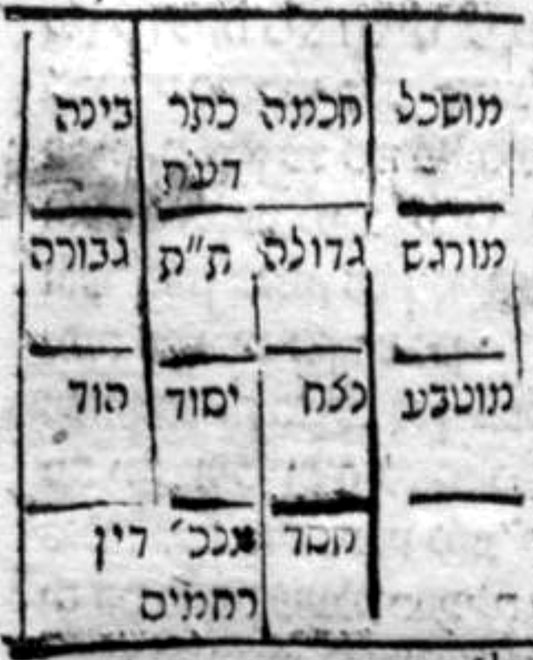

Pardes Rimmonim, English translation with the Hebrew.
We named it "Essence and Governance" because in it is explained the essence (mahut) apprehended in the sefirot — not actual essence, God forbid — together with matters of judgment (din) and mercy (rachamim), and the governance of the King of the king of kings through them. Its chapters number twenty-six.
8:16:1 Since it has already risen in our agreement that speech about the apprehension of His governance in the six extremities of the Structure is permitted, if so, we shall not withhold our hands from discussing what the early ones wrote about them. The first is the attribute of Chesed. And its action is chesed [kindness], after its name, and its actions are drawn from Chokhmah. And the essence of its governance is to annul the power of the husks, to subdue them and to make them cease. And this is the reason for the Flood, which was by water: although those waters were from the Other Side, nevertheless it was already in water. Or it would be a husk from the side of Chesed; or the accuser receives from its side in order to purify the world of all the impurities of that evil generation. And because the action of this attribute is against the impurity and the husk, of it is said, "and a God who is indignant every day" (Psalms 7:12); and it is explained in the Zohar (Parashat Tzav, fol. 31) that He is indignant at the accusers, so that they not accuse. And this action was necessitated in this attribute because its attribute is to act in kindness, that is to say, not according to judgment, but to sustain and to do good to the wicked and to the good.
אחר שכבר עלה בהסכמתנו כי הדבור בהשגת הנהגתו בו' קצוות הבנין מותרת. א"כ לא נאסוף ידינו מלשאת ולתת במה שכתבו הראשונים בהם. הראשונה היא מדת החסד. והיא פעולתה החסד על שמה ופעולתיה נמשכים מהחכמה. ומהות הנהגתה הוא לבטל כח הקליפות להכניעם ולהשביתם. וזה טעם המבול שהיה במים עם היות שהמים ההם היו מסטרא אחרא עכ"ז כבר היה במים. או יהיה קליפה מצד החסד. או שמקבל המקטרג מצדה כדי לטהר העולם מכל טומאות הדור הרע ההוא. ומפני היות פעולת המדה הזאת נגד הטומאה והקליפה עליה נאמר ואל זועם בכל יום, ופי' בזוהר (פ' צו דל"א) שהוא זועם על המקטרגים שלא יקטרגו. והוכרח הפעולה הזאת במדה הזאת מפני שמדתה לפעול בחסד ר"ל שלא כדין אלא לפרנס ולהטיב לרעים ולטובים.
8:16:2 Behold, at the tranquility of the sinner the husk cries out "violence!", saying, "These are idol-worshippers," etc., as is its evil custom, to accuse and to expose the blemishes of human beings. And if it were not within its power to be indignant at them and to annul them, its action would be annulled and judgment would go on increasing. Therefore, in order to perform its action and "to stop the mouth of those who speak falsehood" (Psalms 63:12), it was necessary, according to the decree of His wisdom, may He be exalted, that the ability to make the husks cease be in its hand, so that they not accuse and confound its joy; for its joy is in its action, which is the action of kindness.
הנה בשלוות החוטא תצעק הקליפה חמס לומר אלו עובדי ע"ז וכו' כמנהגה הרע לקטרג ולגלות מומי בני אדם. ואם לא היה בכחה לזועמם ולבטלם היתה פעולתה מתבטלת והדין מתרבה והולך. לכן כדי לפעול פעולתה ולסכור פי דוברי שקר הוצרך כפי גזרת חכמתו ית' להיות בידה יכולת השבתת הקליפות שלא יקטרגו ויבלבלו שמחתה. כי שמחתה בפעולתה שהיא פעולת החסד.
8:16:3 And behold, among the action of this attribute are all the things that are in the secret of whiteness; that is to say, all the things in which whiteness indicates the attribute of Chesed — such as the stones that are white in their color, which by their special property are for grace and for kindness, since their manifestation is poured forth from Chesed; and things besides these, which are explained in the Gate of the Glossary of Titles.
והנה מפעולת המדה הזו הם כל הדברים שהם בסוד הלובן ר"ל כל הדברים אשר בהם הלובן יורה על מדת החסד. כמו האבנים שהם בגוונם לבן שהם בסגולתם לחן ולחסד להיות מציאותם נשפע מהחסד. וזולת הדברים האלה המתבארים מתוך שער ערכי הכנויים.
8:16:4 And further, among the actions of this attribute is love; for such is its action above, in the secret of coupling: to love and to bring near the bridegroom and his bride. And although this action is at times found [attributed] to Gevurah, as will be explained in the Glossary of Titles, the matter is that love is aroused from Gevurah and completed by means of this attribute. And "from our flesh we behold God" (see Job 19:26): for first a man is aroused to love of his female from the side of ardor and heat, and afterward that love is fixed in his heart from the side of the softness of his heart. And there are times when it will be the reverse; all according to the one who marries and the one who is married [ha-nose ve-ha-nasu]. And it is explained from the words of our sages, of blessed memory, and of Rashbi, peace be upon him, that wisdom is poured forth to a person from the side of this attribute, in partnership with Chokhmah, which is above it; and they gave a sign for the matter: "one who wishes to become wise should turn south" (Bava Batra 25b). And likewise they said that light, and what resembles it, is alluded to in it; and the secret is "the menorah in the south," and from there its light goes out to the world. And there are many matters of the actions that it is impossible to include here, but [only] in the explanation of the titles in the Glossary of Titles. And this attribute is not compassion and kindness like Chokhmah, since it was blended and unified with Gevurah in the secret of the Binding [of Isaac], as we shall explain; for it is of the perfection of this attribute that it be forever unified with Gevurah. And therefore, from the side of the Gevurah that is in it, some of the actions of judgment are attributed to it, in dryness, on the southern side; for so it is called Negev [the dry land]. And as the verse said, "Your right hand, YHVH, glorious in power" (Exodus 15:6), as is explained in the Zohar, Parashat Beshalach, and many places besides. And this way [applies] also to Gevurah: that it is of its perfection, although it is the strength of judgment, that it be included in Chesed; and this is the secret of moisture in the north, although the north is an allusion to Gevurah. And this is the secret of the Binding of Isaac, in which fire was included in water and water in fire, as is explained in the Zohar, in the portion of the Binding. And it is known of this attribute that there are in it seventy-two bridges; and the allusion to them is the seventy-two names that are in Vayisa, Vayavo and Vayet (Exodus 14:19–21). And Rabbi Nechunya ben HaKanah, peace be upon him, explained this matter in his lovely prayer, and these are his words: "You are One, in the concealment of the radiance; it is divided into seventy-two bridges, which indicate the sweat of the Chayyot, and from them [come] the upper waters; and they are called the fourth Sefirah, and it is Chesed. And each and every bridge has a name, and they are crowned, arrayed in prepared words, going out from potential into actuality; and they are VHV, LY," etc. Thus far his words.
ועוד מפעולות המדה הזו האהבה כי כן פעולתה למעלה בסוד הזווג לאהוב ולקרב חתן וכלתו. ועם היות שכבר נמצא לעתים הפעולה הזו אל הגבורה כמו שיתבאר בערכי הכנויים. הענין הוא כי האהבה יתעורר מתוך הגבורה ותושלם ע"י המדה זו, ומבשרנו נחזה אלוק כי תחלה יתעורר האדם לאהבת נוקבתו מצד ההתלהבות והחום ואח"כ יתקע האהבה ההיא בלבבו מצד מורך לבבו. ויש עתים שתהיה להפך הכל לפי הנושא והנשוא. ונתבאר מתוך דברי רז"ל והרשב"י ע"ה כי החכמה אל האדם נשפעת מצד המדה הזאת בשתוף החכמה שהיא עליה ונתנו סימן לדבר הרוצה להחכים ידרים. וכן אמרו כי האור והדומה אליו רמוז בה. והסוד מנורה בדרום ומשם אורה יוצאה לעולם. ויש כמה מענייני הפעולות אשר א"א לכוללם כאן אלא בפי' הכינויים אשר בערכי הכינויים. ואין המדה הזאת רחמים וחסד כחכמה יען נמזגה ונתייחדה עם הגבורה בסוד העקידה כמו שנבאר כי משלימות המדה הזאת להיותה מתיחדת לעולם בגבורה ולכן מצד הגבורה שבה יוחס אליה קצת מפעולות הדין ביובש בצד הדרום שכן נקרא נגב. וכמו שאמר הכתוב (שמות טו) ימינך ה' נאדרי בכח כמו שנתבאר בזוהר פר' בשלח ומקומות רבים זולתם. ודרך זו גם כן אל הגבורה שמשלימותה עם היותה תוקף הדין להיותה נכללת בחסד וזהו סוד הליחות בצפון עם היות הצפון רמז אל הגבורה. וזהו סוד עקדת יצחק שנכלל אש במים ומים באש כמו שנתבאר בזוהר פ' העקידה. ונודע במדה הזאת היות בה ע"ב גשרים, והרמז אליהם ע"ב שמות אשר בויס"ע ויב"א וי"ט, וביאר הענין הזה רבי נחוניא בן הקנה ע"ה בתפילתו הנחמדת. וז"ל אתה יחיד בסתר הזהר הוא מתחלק לשבעים ושתים גשרים שהם מורים על זיעת החיות ומהם המים העליונים ונקראים ספירה רביעית והיא חסד וכל גשר וגשר יש לו שם והם מוכתרים מסודרים בתיבות מזומנות יוצא מן הכח אל הפועל והם וה"ו ל"י וכו' עכ"ל.
8:16:5 And according to what appears from the expression "bridges," it is that these seventy-two lights in Chesed are channels and sources for the effluence poured forth from the upper ones by way of Chesed, which is the beginning of the Structure; and they are bridges to the waters of Chesed. And we may think that the seventy-two bridges are an allusion to three times twenty-four, twenty-four for each of the upper Sefirot: twenty-four for Keter, twenty-four for Chokhmah, twenty-four for Binah.
ולפי הנראה מתוך לשון גשרים הוא היותו ע"ב מאורות אלו שבחסד צנורות ומקורות אל השפע הנשפע מן העליונות דרך החסד שהוא תחלת הבנין. והם גשרים אל מימי החסד. ונחשוב היות ע"ב גשרים רמז אל ג' פעמים כ"ד כ"ד לכל ספירה וספירה מהספירות העליונות, לכתר כ"ד לחכמה כ"ד לבינה כ"ד.
8:16:6 And behold, these twenty-four are the twenty-four permutations that are permuted from the four-letter name, as we shall expand the explanation in the Gate of Particulars of Names, at the name of seventy-two. And since each name of the three four-letter names is an attribute in itself and a matter in itself — for Keter is the root of compassion, and Chokhmah the root of Chesed, and Binah the root of Din — therefore they were divided into the three divisions, twenty-four for each part. And the reason is that each and every name has four letters, which indicate in particular four Sefirot, which are Chokhmah and Binah and Tiferet and Malkhut. And they are four, corresponding to the arrays in which the six extremities are revealed, as is explained in the Gate of the Order of the Emanation; therefore four times six is twenty-four. And likewise their permutation: six times for yod, six times for heh, six times for vav, six times for heh.
והנה הכ"ד זה הם כ"ד צרופים המצטרפים מתוך שם בן ד' כמו שנרחיב ביאור בשער פרטי השמות בשם ע"ב. ולהיות שכל שם מג' שמות בן ד' מדה בפני עצמה וענין בפני עצמו, כי הכתר שורש הרחמים וחכמה שורש החסד והבינה שורש הדין, לכן נחלקו למחלקות השלשה כ"ד לכל חלק. והטעם מפני שלכל שם ושם ארבע אותיות מורות בפרטות על ארבע ספירות שהם חכמה ובינה ותפארת ומלכות. והם ארבע נגד המערכות שבהם מתגלות הששה קצוות כמו שנתבאר בשער סדר האצילות, לכן ארבע פעמים ששה הם כ"ד וכן צרופם ו"פ לי' ו"פ לה' ו"פ לו' ו"פ לה'.
8:16:7 And the matter of the division of the names and their permutation into sixes and into twenty-fours is well resolved, as we shall explain their relation, their division and their matter in the Gate of Particulars of Names, chapter 9. This is what appears to us at first glance concerning these seventy-two, without our lengthening on it at all; for it is clear to us that the matter bears an expansion of explanation, as the inquirer roams with his intellect. And brevity is good, especially in a place where we have no tradition about them and no sufficient revelation. And because each attribute of the first three includes all three, as we shall explain in the Gate of Arbiters, therefore seventy-two was poured forth to each one of the three Patriarchs. For from the three in Chokhmah, seventy-two [are poured] to Chesed; and so Chokhmah [chokhmah] amounts to seventy-three: seventy-two bridges, and Chokhmah, the great Chesed, hovering over them. And from the three in Binah seventy-two are poured to Gevurah, and from the three in Keter seventy-two is poured to Tiferet. And the principal seventy-two came in Chesed, and they are [said] in a borrowed sense of Tiferet and of Gevurah. Because in Keter and Binah the three points, which are the first three, are not in order: for in Keter they are the aspect of Keter, the aspect of itself, and the aspect of Chokhmah and Binah because of its pouring forth into them; and they are not in order. And in Binah they are likewise, because she receives from both of them, from Keter on one side and from Chokhmah on another side. And so for Keter, Chokhmah and Binah are in one equality; and likewise for Binah, Keter and Chokhmah are in one equality. But for Chokhmah, the aspects are in order: for it has the aspect of Keter, preceding all, from the side of its receiving from it; and its aspect from the side of itself, in the middle; and the aspect of Binah, from the side of its pouring forth into her. And behold, in it are the two aspects, each one according to its value; and therefore the principal seventy-two bridges are in Chesed.
וענין חילוק השמות וצרופם לששה ששה ולכ"ד מתיישב היטב כמו שנבאר יחוסם וחילוקם ועניינם בשער פרטי השמות פ"ט. זה הנראה לנו לכאורה בענין ע"ב אלה בלתי שנאריך בו כלל. כי ברור לנו כי הענין סובל הרחבת הביאור כאשר ישוטט המעיין בשכלו. והקצור יפה ובפרט במקום שאין לנו קבלה בהן ולא גלוי מספיק. ומפני שכל מדה ומדה מג' ראשונות היא כלולה מכל שלשה כמו שנבאר בשער המכריעין. לכן הושפע לכ"א מג' אבות ע"ב כי מג' שבחכמה ע"ב לחסד וכן חכמה עולה ע"ג ע"ב גשרים וחכמה החסד הגדול חופף עליהם. ומג' שבבינה נשפעים ע"ב אל הגבורה ומג' שבכתר נשפע ע"ב אל התפארת. ובאו עיקר ע"ב בחסד והם בהשאלה אל התפארת ואל הגבורה. מפני שאין בכתר ובינה השלשה נקודות שהם שלשה ראשונות כסדר מפני שבכתר הם בחינת הכתר בחינת עצמו ובחינת חכמה ובינה מפני השפעתו בהם ואינם כסדר. ובבינה הם ג"כ כן מפני שהיא מקבלת משתיהם מהכתר מהפאה אחת ומחכמה מפאת אחרת. ונמצא אל הכתר חכמה ובינה בהשוואה אחת, וכן אל הבינה כתר וחכמה בהשוואה אחת. אבל החכמה הבחינות אליה הם כסדר, שיש לה בחינות הכתר קודמות לכל מצד קבלתה ממנו, ובחינתה מצד עצמה אמצעית, ובחינת בינה מצד השפעתה בה. והרי בה שתי הבחינות כל אחת לפי ערכה ולכן עיקר ע"ב גשרים בחסד.
8:16:8 And the matter of the seventy-two in Gevurah and the seventy-two in Tiferet will be explained in the Gate of the Palaces, in chapter 4.
וענין ע"ב שבגבורה וע"ב שבת"ת יתבאר בשער ההיכלות בפרק ד':
8:16:9 And the second Sefirah of the six days of the Structure is Gevurah. And it performs might [gevurah] and judgment, after its name, and all matters of judgments and mighty acts are poured forth from it. And it is a strap to chastise people with its discipline, to strengthen them and to arouse them in the service of the Creator. And likewise, by means of it, it gives power and might in a person to make the good inclination prevail over the evil inclination, as we explained in chapter 3. And likewise all the might by which Israel prevailed over their enemies was by its means, as it is written, "Through God we shall do valiantly" (Psalms 60:14). And every mighty man principally sucks from Gevurah (see the Introduction to the Tikkunei Zohar, fol. 10: "and there, mighty men," etc.). And from the side of this attribute all the outer ones and the masters of judgment are poured forth; but there is a great difference between them. For the pure masters of judgment are poured forth from it from the pure side, in the secret of "pure gold"; and the lower ones, the masters of the husks, are poured forth from it from the side of the dross of the gold. And it needs those powers to judge this world in the damages of horn and ox and pit and donkey and the like. And they are impure straps "to chastise with scorpions" (1 Kings 12:11) the transgressors and the wanton. And among the actions of this attribute are all the things that are in the secret of redness; and from this attribute [come] the things in which redness indicates Gevurah, such as the stones that are red, whose special property is to cast fear upon creatures, because they suck from this attribute. And whatever else is found like these things is explained in the Gate of the Glossary of Titles. And from the side of this attribute also is the arousal of love, in the secret of the ardor of the inclination, as our sages, of blessed memory, explained: "the affection of intercourse." And from this attribute is the arousal in the secret of "and he loved her" (Genesis 24:67) (see Zohar, Chayei Sarah, fol. 133). And although love is also in Chesed, nevertheless the beginning of the arousal is from Gevurah, as will be explained in the Glossary of Titles, under the entry "love." And it is explained from the words of our sages, of blessed memory, and of Rashbi, peace be upon him, that wealth is poured forth to a person from this attribute; and they gave a sign for the matter: "one who wishes to become rich should turn north" (Bava Batra 25b). And likewise they said that fire and its like, and flame and its like, are in this attribute.
והספירה השנית אל ששת ימי הבנין היא הגבורה והיא פועלת גבורה ודין כשמה וכל ענייני הדינים והגבורות נשפעים ממנה והיא רצועה לייסר האנשים במוסרה לחזקם ולעוררם בעבודת הבורא. וכן ע"י שהיא נותנת כח וגבורה באדם להגביר יצר הטוב על יצר הרע כדפי' בפ"ג. וכן כל הגבורה שהיו ישראל מתגברים על אוביהם היתה על ידה כדכתיב (תהלים ס יד) באלקים נעשה חיל. וכל גבור עיקר יניקתו מהגבורה (ע' בהקדמת ת"ז ד"י ותמן גבורים כו'). ומצד המדה הזאת נשפעים כל החצונים ובעלי הדינין. אלא שיש חלוק גדול ביניהם שבעלי הדין הטהורים נשפעים ממנה מצד הטהור בסוד זהב טהור והתחתונים בעלי הקליפות נשפעים ממנה מצד סיגי הזהב. והיא צריכה אל הכחות ההם לדון העולם הזה בנזקי קרן ושור ובור וחמור וכיוצא באלו. והם רצועות טמאות לייסר בעקרבים הפושעים והזדים. ומפעולות המדה הזאת כל הדברים שהם בסוד אדמימות. ומן המדה זו הדברים אשר בהם האודם יורו על הגבורה כמו האבנים שהם אדומים שסגולתם להטיל אימה על הבריות מפני שיניקתם מן המדה הזאת. והנמצא עוד כדברים האלה מתבאר בשער ערכי הכנויים. ומצד המדה הזו ג"כ התעוררות האהבה בסוד התלהבות היצר כדפי' רז"ל חיבת ביאה. ומן המדה הזאת ההתעוררות בסוד ויאהבה (ע' זהר חיי דקל"ג) ועם היות שהאהבה היא בחסד ג"כ עכ"ז תחלת ההתעוררות מן הגבורה כמו שיתבאר בערכי הכנויים בערך אהבה. ונתבאר מתוך דברי רז"ל והרשב"י ע"ה כי העושר נשפע אל האדם מן המדה הזאת ונתנו סימן לדבר הרוצה להעשיר יצפין. וכן אמרו כי האש וכיוצא בו והשלהבת וכיוצא בה הם במדה הזאת.
8:16:10 And further, they said that the principal sustenance is poured forth from this attribute; and the witness to this is "the table in the north," and from there sustenance comes to the world. And likewise the rains are poured forth from it, and therefore our sages, of blessed memory, titled them "the might of rains" (Mishnah Ta'anit 1:1), and explained: because they come down with might. And the hearing of every matter of outcry and prayer is in this place; and so it is explained from the words of Rashbi, peace be upon him. True, it is with the assistance of Binah; and therefore hearing is found for judgment and for compassion with the name Elohim — such as "And Elohim hearkened to her" (Genesis 30:22), and "And Elohim heard the voice of the lad" (Genesis 21:17); for judgment: "And Elohim heard, and His anger was kindled" (Numbers 11:1) (in our texts: "YHVH," and not Elohim). And seeing is in Chesed, and likewise "And YHVH saw"; and it is found for judgment and for compassion, and nevertheless all is in Chesed. And he gave a sign: re'iyah [seeing] is aryeh [lion], and the lion is in Chesed, as is known; and the letters of aryeh are yir'ah [fear], and that is judgment. And in this attribute there are "sixty mighty men" (Song of Songs 3:7), and their allusion is in the six gevurot of the six extremities that are in it. And likewise the matter of the seventy-two of the Sanhedrin, as we explained their matter above. And there is more among the actions of this attribute, and it will be explained from the Gate of the Glossary of Titles.
ועוד אמרו כי עיקר המזון נשפע מן המדה הזו, והעד על זה שלחן בצפון ומשם מזון בא לעולם. וכן הגשמים נשפעים ממנו ולכן כינום רז"ל גבורות גשמים ופירשו מפני שהם יורדים בגבורה. ושמיעת כל דבר צעקה ותפלה הם במקום הזה. וכן מבואר מתוך דברי הרשב"י ע"ה. אמת שהוא בסיוע הבינה ולכן נמצא שמיעה לדין ולרחמים בשם אלקים כגון (בראשית ל כב) וישמע אליה אלקים וישמע אלקים את קול הנער (שם כא יז). לדין (במדבר יא א) וישמע אלקים ויחר אפו (לפנינו "ה'" ולא אלוקים). והראיה היא בחסד וכן וירא ה'. ונמצא לדין ולרחמים. ועכ"ז הכל בחסד. ונתן סימן ראיה אריה, ואריה הוא בחסד כנודע, ואותיות אריה יראה והוא דין. ויש במדה הזאת ששים גבורים ורמיזתם בשש גבורות שש קצוות שבה. וכן ענין ע"ב סנהדרין כמו שבארנו עניינם לעיל. ויש יותר בפעולות מן המדה הזאת ויתבאר מתוך שער ערכי הכנויים:
8:17:1 The third attribute of the six days of Creation is the one called Tiferet. And its name testifies of it, for all splendor [pe'er] and glory is poured forth from this attribute. And so it is, for glory and beauty are the composition of red and white, as is well known; and therefore it is said, "My lover is white and ruddy" (Song of Songs 5:10). And all matters of the composition of red and white are in this attribute — such as the precious stones that in their color are green like the yolk of an egg, whose special property is for peace, just as this attribute mediates peace between the extremities. And all the matters in which the element of air prevails are poured forth from this attribute. And likewise the Torah and engaging in it depend on this attribute; and the witness is the Ark, in which are the Tablets of the Covenant, which is placed between the north and the south — and specifically the Written Torah, as will be explained in the Gate of the Glossary of Titles. And children depend on this attribute. That is to say, when a person prays, he should intend that his prayer rise to the upper mazal, which is the first three in general, where the children are; as our sages, of blessed memory, explained: "Children, life and sustenance," etc., "[do not depend on merit,] but the thing depends on mazal" (Mo'ed Katan 28a). And they did not say "the thing is [havya] in mazal," which would imply that they are there, in the mazal, but "depends" [talya], that is, their dependence; but their place is Tiferet, as Rashbi, peace be upon him, explained (in the Introduction to the Tikkunei Zohar, fol. 14), and these are his words: "Turn to the east, and the central pillar takes it, and 'my children' is sealed in it." Thus far his words.
המדה השלישית מששת ימי בראשית היא הנקרא תפארת. ושמה מעיד עליה כי כל הפאר וההדר הוא נשפע מן המדה הזאת. וכן הוא כי ההדר והיופי הוא הרכבת האדום והלובן כמפורסם. ולכן נאמר (שה"ש ה י) דודי צח ואדום. וכל ענייני הרכבת האודם והלובן הם במדה הזאת כמו האבנים היקרות שבגוונם הירוק כחלמון ביצה שסגולתם אל השלום כמו שהמדה הזאת מתווך שלום בין הקצוות. וכל העניינים שגובר בהם היסוד האוירי הם נשפעים מן המדה הזאת. וכן התורה והעסק בה תלייתה במדה הזאת. והעד הארון אשר שם לוחות הברית הנתון בין (בין) הצפון והדרום ודוקא תורה שבכתב כאשר יתבאר בשער ערכי הכנויים. והבנים הם תלויים במדה הזאת ר"ל כי כאשר יתפלל האדם יכוון בענין שתעלה תפלתו אל המזל העליון שהוא ג' ראשונות בכלל ששם הבנים כדפי' חז"ל בני חיי ומזוני וכו' אלא במזלא תליא מלתא. ולא אמרו הויא מלתא דמשמע שהם שם במזל, אלא תליא דהיינו תלייתם אבל מקומם הוא התפארת כדפי' רשב"י ע"ה (בהקדמת ת"ז דף י"ד) וז"ל פנה למזרח ונטיל ליה עמודא דאמצעיתא וחתים ביה בני עכ"ל.
8:17:2 And the resolution of the matter is that he must raise the purity of his prayer above, to the mazal [the upper one, which is Keter], and then they will give him from the storehouse of children, which is in Tiferet. And it is possible that the reason children depend on this attribute is that it is the master of the souls, and they are the fruit of its grapes, as is explained in the Zohar in many places, and as will be explained in the Gate of the Soul. And therefore it is not fitting to give children except with the permission of the master of the fruit, which is the children. For the pouring forth of children is from the brain, which is in the matter of the first three; and likewise the place of the souls is in Binah. Therefore Tiferet must be raised to the mazal, as we explained. And the manna came down to Israel from this attribute, as the verse taught: "Behold, I will rain down for you bread from heaven" (Exodus 16:4) — which is Tiferet. And among the actions of this attribute is the effluence of the souls, by means of the union of Tiferet and Malkhut. And it is a matter found in these two attributes that is not found in others, except in Chokhmah and Binah. And the matter is as we explained above in chapter 13: that this union is not like the matter of the union and bond of the other Sefirot; rather, it is a praiseworthy matter, like the union in which a man unites with his wife at the time of coupling, which is an effluence that he pours into her, and from that effluence offspring of something come to be. And this matter is literally in Chokhmah and Binah, who are titled by Rashbi many times Abba Ila'ah and Imma Ila'ah [the supernal Father and the supernal Mother]. And the matter is that when Chokhmah couples with Binah, spiritual beings come to be from there. And so it was in the matter of the Sefirot at the time they were emanated from Binah: Chokhmah united with her in a complete, particular union, like the coupling of a man and his wife; and from the brains of Abba [mochin de-Abba] were drawn the six Sefirot of the Structure, all of it included in son and daughter, who are called double-faced [du-partzufin]. And this is what Rashbi explained concerning Tiferet: the son who is drawn from the father's brain. And he drew the Sefirot forth in great subtlety and poured them into Binah, who is the mother; and the mother became pregnant with them, like a pregnant woman. And just as "the bones in the womb of her who is with child" (Ecclesiastes 11:5) come to be from the subtle matter, and grow, and come to be there into the manifestation of the form of the fetus, so the Sefirot. And therefore Rashbi explained that the Emanation tarried in Binah twelve months — the great pregnancy that there is in a human being, which is twelve months, as our sages, of blessed memory, explained (Tractate Niddah, fol. 27). And we wrote the passage in the Gate of Self and Vessels (chapter 7), and there we explained that the words are not according to their plain sense. And therefore Chokhmah and Binah are father and mother to all the Emanation, and the whole Emanation is children to them; and Binah is called "the mother of the children, joyful" (Psalms 113:9). And it asks in the Zohar, Parashat Vayechi (fol. 219a): "The mother is known; the children, who are they?" Because these children have two aspects, or their aspect with respect to birth. And the matter is that just as a woman, when she conceives twins, all of them are placed in one womb — for a woman does not have two wombs, but one; but there are chambers in it, so that it can receive up to seven — so too in Binah all are included as one at the time of their gestation there; but the truth is that they are many chambers, as we explained the matter of "and by knowledge [da'at] are the chambers filled" (Proverbs 24:4) in the Gate of Whether the Ein Sof is the Keter. And we return to the matter: for while they are there, all of them are included in the double-faced; and after they go out, at the time of the Emanation, they are particularized into seven. And therefore he said, "the children, who are they?" — whether the inner aspect, in which they are included in the double-faced, or the outer aspect, which is after the birth, in which they are particularized into seven. And he answered there, as relevant to our matter; see there.
ופשר הדברים כי צריך להעלות טוהר תפלתו למעלה במזל [העליון שהוא הכתר] ואז יתנו לו מאוצר הבנים שהוא בתפארת. ואפשר היות טעם תליית הבנים במדה הזו מפני שהוא בעל הנשמות והם פרי ענביו כמבואר בזוהר מקומות הרבה, וכמו שיתבאר בשער הנשמה. ולכן אין ראוי לתת הבנים אם לא ברשות בעל הפרי שהם הבנים. שהשפעת הבנים הם מן המוח שהוא בענין שלש ראשונות וכן מקום הנשמות הם בבינה. לכן צריך להעלות התפארת אל המזל כדפי'. והמן היה יורד לישראל מתוך המדה הזאת כמו שהורה הכתוב (שמות טז ד) הנני ממטיר לכם לחם מן השמים שהוא תפארת. ומפעולות המדה הזאת הם שפע הנשמות ע"י יחוד התפארת והמלכות. והוא ענין נמצא אל שתי המדות האלה מה שלא נמצא בזולתם אלא בחכמה ובבינה. והענין כמו שבארנו לעיל בפי"ג שהיחוד הזה אינו כענין יחוד וקשר שאר הספירות אלא הוא ענין משובח כענין היחוד שיתייחד האיש עם אשתו בעת הזווג שהוא שפע שמשפיע בה ומן השפע ההוא יתהוה תולדות דבר מה. והענין הזה הוא ממש בחכמה ובינה שהם מכונים אצל הרשב"י פעמים רבות אבא עלאה ואמא עלאה. והענין כי בהזדווג החכמה עם הבינה יתהוה משם הויות רוחניות. וכן היה בענין הספי' בעת שנאצלו מן הבינה נתייחד עמה החכמה יחוד שלם פרטי כענין זווג איש ואשתו ונמשכו ממוחין דאבא שש ספי' הבנין הנכלל הכל בבן ובת שהם נקראים ד"ו פרצופין. והיינו שפי' הרשב"י בענין הת"ת הבן שנמשך ממוח האב. והמשיך הספירות בדקות גדול והשפיעם אל הבינה שהיא האם ונתעברה האם מהם כאשה מעוברת. וכמו שהעצמים בבטן המלאה הם מתהוים מהחומר הדק ומתגדלים ומתהוים שם אל מציאות צורת העובר כן הספי'. ולכן פי' רשב"י שהאצילות נתעכב בבינה י"ב חדשים העיבור הגדול שבאדם שהוא י"ב חדש כדפי' רז"ל (במס' נדה דף כ"ז). וכתבנו המאמר בשער עצמות וכלים (פ"ז) ושם בארנו שאין הדברים כפשוטן. ולכן הם בחכמה והבינה, אב ואם אל כל האצילות, והאצילות כלו בנים אליהם, והבינה נקרא אם הבנים שמחה. ושאל בזוהר פ' ויחי (דף רי"ט.). אם ידיעה, הבנים מאן אינון. מפני שאל הבנים האלה ב' בחינות או בחינתם בערך הלידה והענין כי כמו שהאשה כאשר היא מתעברת מתאומים כלם נתונים ברחם אחת כי אין לאשה שתי רחמים אלא א' אבל יש בה חדרים שתוכל לקבל עד ז'. וכן בבינה כלם נכללים כאחד בעת עבורם שמה אבל האמת שהם חדרים רבים כמו שבארנו ענין ובדעת חדרים ימלאו בשער אם הא"ס הוא הכתר. ונחזור אל הענין כי בהיותם שם נכללים כולם בד"ו פרצופין. ואחרי צאתם בעת האצילות הם נפרטים לשבעה ולכן אמר בנים מאן אינון, אם הבחינה הפנימית והם נכללים בד"ו או הבחינה החיצונה שהיא אחר הלידה והם נפרטים בשבעה, ותירץ שם לענייננו ע"ש.
8:17:3 And behold, Leah was in the place of Binah, as is explained in the words of Rashbi. And now one must ask: how did she conceive from Jacob, who is Tiferet, and he is the son? And although there is no forbidden relation above, nevertheless it is not possible that it be. For although the union of the son and the mother is permitted, how is it possible that the mother should conceive from the son, when he is the son himself? And the matter is that the union of Chokhmah and Binah is by means of the hidden Da'at, which is the manifestation of Tiferet before its emanation; that manifestation is called Da'at, and Da'at unites them, just as Yesod unites Tiferet and Malkhut, as is explained in the aforementioned Gate. And although that manifestation is not the chariot of Jacob, who is [a chariot] only for Tiferet specifically, and outside, as was explained in the Gate "Ten and Not Nine," chapter 2, nevertheless it availed him to rise up at the known time, so that by this Leah would conceive. And further, Da'at is clothed in Tiferet and is a soul to it, as we shall explain in Sefer Or Yakar.
והנה לאה היתה במקום הבינה כמבואר בדברי הרשב"י. ויש עתה לשאול והאיך נתעברה מיעקב שהוא ת"ת והוא הבן. ועם היות שאין ערוה למעלה עכ"ז אין באפשר להיות. כי עם היות שיחוד הבן והאם מותר היאך אפשר שתתעבר לשלום האם מהבן והוא הבן עצמו. והענין הוא כי ענין יחוד החכמה והבינה הוא ע"י דעת הנעלם שהוא מציאות הת"ת קודם אצילותו שמציאות ההוא נקרא דעת והדעת מייחדם כמו שמייחד היסוד התפארת והמלכות כמבואר בשער הנזכר. ועם היות שאין המציאות ההוא מרכבתו של יעקב שאינו אלא בת"ת דווקא ומלבר כאשר נתבאר בשער י' ולא ט' פ"ב, עכ"ז הועיל לו להסתלק בעת הידוע כדי שע"י כך תתעבר לאה. ועוד שהדעת מתלבש בת"ת והוא נשמה אליו כאשר נבאר בספר אור יקר.
8:17:4 And behold, the matter of the union and coupling of Chokhmah and Binah at the time of the Emanation has been explained. But one must ask: granted at the time of the Emanation, when this coupling was needed in order to emanate the children; but now, after the Emanation, what do their marital relations accomplish? That is to say, for the matter of the effluence it is impossible, for that is not coupling — as we proved above in chapters 13 and 14, that the matter of the effluence is not marital relations but sustenance, like the man who sustains his wife and gives "food to all her household and a portion to her maidens" (see Proverbs 31:15).
והנה נתבאר ענין יחוד וזווג חכמה ובינה בעת האצילות. אבל יש לשאול תינח בעת האצילות שהוצרך הזווג הזה כדי להאציל הבנים. אבל עתה אחר האצי' מה שמושם מועיל. כלומר לענין השפע א"א שאין זה זווג כמו שהכרחנו לעיל בפי"ג וי"ד שאין ענין השפע שמוש אלא מזון כעין האיש הזן את אשתו ונותן לה טרף לכל ביתה וחוק לנערותיה.
8:17:5 And the matter of marital relations is that there come to be a new coming-to-be; if so, what is the coming-to-be that is renewed from their marital relations? And to resolve this matter we shall ask another question. For granted, in the union of Tiferet and Malkhut, which is at times, and they return and unite again — fine, they bring souls into being, as we shall explain, for in each and every union he makes souls. But in the union of Chokhmah and Binah, who never separate — if so, what is the matter of their bringing-into-being? Or how and when is the one completed and the other comes to be, since they never separate, as all these particulars were explained above in chapters 13 and 14? To this we say: it is known that were it not for the manifestation of the emanation of Chokhmah and Binah, it would not be possible for the Emanation to exist at all, as we explained some of this matter in the Gate of the Order of the Emanation, chapters 4 and 5. And the reason is that there is no creature without male and female; that is, that things are in subtlety, and are revealed and become thick. And "a refining pot and a furnace" (Proverbs 17:3) for the six days of Creation, so that they come to be and be revealed from Keter, were Chokhmah and Binah, in the secret of their union, in the secret of father and mother. And were it not for Chokhmah and Binah, the six days would have no power to come to be. And Rashbi explained this matter in Parashat Ha'azinu (fol. 290a), at the time of his passing, and these are his words: "Come and see: at the hour when Atika Kadisha, the concealed of all concealed ones, wished to be arranged, He arranged all like male and female. After male and female were included, they did not endure except in another endurance of male and female. And this Chokhmah, the totality of all, when it went out and shone from Atika Kadisha, it shone only in male and female; for this Chokhmah spread out and brought forth Binah from itself, and it was found to be male and female. Chokhmah father, Binah mother; Chokhmah and Binah were weighed in one balance, male and female. And for their sake all endures in male and female, for were it not for this they would not endure. This beginning is father to all, father of all the fathers; they joined one with another and shone one in another. Chokhmah father, Binah mother, as it is written, 'for you shall call understanding [Binah] mother [em]' (Proverbs 2:3)." Thus far his words. And although from the plain sense of the words we have proof for what we seek, nevertheless we shall not withhold our hands from explaining his words — and further, in order to resolve a mighty question that falls in this matter. For one must ask: Chokhmah and Binah themselves, how were they emanated without male and female, since the whole Emanation requires male and female? And this is the main intent of Rashbi in the explanation of this passage. And he said, "Come and see: at the hour when Atika Kadisha," etc. — this is Keter. And he called it "the concealed of all concealed ones" because it is before the expansion, and then Keter is closed and hidden even from all the concealed ones, which are the hidden emanated ones; and even they do not apprehend Keter, because of the greatness of its hiddenness. "Wished to arrange": that is, when He wished to emanate the rest of the Emanation. And there are two versions in this: either be'a le-atkana ["wished to arrange"] or be'a le-ittakkana ["wished to be arranged"], and all is one matter. For in arranging the Emanation He arranges Himself, for His tikkun is His revealing, and His revealing is the tikkun of His Emanation; if so, "to arrange" or "to be arranged" — all is one. "He arranged all like male and female": meaning, He emanated the whole Emanation in the likeness of male and female — as Chokhmah and Binah, male and female; Tiferet and Malkhut, male and female. "After male and female were included": meaning, he intended to resolve the question that we asked, how Chokhmah and Binah were emanated without male and female. And he answered that in Keter itself male and female were included, for part of it is the aspect of male and part of it the aspect of female, as we shall explain in the Gate "From Below to Above."
וענין השמוש הוא להיות הוויה מחודשת, א"כ מה הוא ההוי' המתחדשת מתוך שמושם. ולתרץ ענין זה נשאל שאלה אחרת כי בשלמא ביחוד הת"ת והמלכות שהוא לעתים וחוזרים ומתיחדים תינח שהם מהוים נשמות כמו שנבאר כי בכל יחוד ויחוד עושה נשמות. אבל ביחוד החכמה והבינה דלא מתפרשין לעלמין א"כ מה ענין הווייתן או כיצד ואימתי משתלמת האחת ומתהוה האחרת אחר שאינם מתפרשין לעולם כמו שנתבארו כל הפרטים האלו לעיל פי"ג י"ד. לזה נאמר כי ידוע שאם לא היה מציאות אצילות החכמה והבינה לא היה באפשר להתקיים כלל האצילות כמו שבארנו קצת מהענין הזה בשער סדר האצילות פ"ד ה'. והטעם כי אין בריה בלא זכר ונקבה דהיינו שהדברים בדקות ויתגלו ויתעבו. ומצרף וכור אל ו' ימי בראשית שיתהוו ויתגלו מהכתר, היו החכמה והבינה בסוד ייחודם בסוד אב ואם. ואלולי החכמה והבינה אין כח בששת ימים להתהוות. ובאר הענין הזה הרשב"י בפ' האזינו (דר"צ.) בעת פטירתו וז"ל ת"ח, בשעתא דעתיקא קדישא סתימא דכל סתימין בעא לאתתקנא, אתקין כלא כעין דכר ונוק', בתר דאתכלילו דכר ונוקבא לא אתקיימו אלא בקיומא אחרא דדכר ונוק'. והאי חכמה כללא דכלא כד נפקא ואתנהיר מע"ק לא אתנהיר אלא בדכר ונוק', דהאי חכמה אתפשט ואפיק מיניה בינה ואשתכח דכר ונוק' הוא. חכמה אב בינה אם, חכמה ובינה בחד מתקלא אתקלו דכר ונוק'. ובגיניהון כלא אתקיים בדכר ונוקבא, דאלמלא האי לא מתקיימין. שרותא דא אב לכלא, אב לכלהו אבהן, אתחברו דא בדא ונהירו דא בדא, חכמה אב בינה אם דכתיב כי אם לבינה תקרא עכ"ל. ועם היות מתוך פשטן של דברים יש לנו ראייה אל מבוקשינו, עכ"ז לא נאסוף ידינו מלבאר דבריו. ועוד כדי לתרץ שאלה עצומה שנופלת בענין הזה, שיש לשאול, כל עצמן של חכמה ובינה האיך נאצלו בלא זכר ונקבה מאחר שכל האצילות צריך זכר ונקבה. וזהו עיקר כונת הרשב"י בביאור המאמר הזה. ואמר ת"ח בשעתא דעתיקא קדישא כו' הוא הכתר, וקראו סתימא דכל סתימין מפני שהוא קודם ההתפשטות ואז הכתר הוא סתום ונעלם אפילו מכל הסתימין שהם הנאצלים הנעלמים ואפי' הם אינם משיגים הכתר לרוב העלמו. בעא לאתקנא היינו כאשר רצה להאציל שאר האצילות. ויש בזה שני נוסחאות או בעא לאתקנא או בעא לאתתקנא, והכל ענין אחד. כי בהיותו מתקן האצילות הוא מתקן עצמו כי תקונו הוא גלויו וגלוייו הוא תיקון אצילותו, א"כ לאתקנא או לאתתקנא הכל אחד. אתקין כלא כעין דכר ונוקבא פי' האציל כל האצילות בדמות זכר ונקבה כמו חכמה ובינה זכר ונקבה, תפארת ומלכות זכר ונקבה. בתר דאתכלילו דכר ונוקבא. פי' כוון לתרץ אל השאלה ששאלנו, שהאיך נאצלו חכמה ובינה בלא זכר ונקבה. ותירץ כי הכתר עצמו היה נכלל בו זכר ונקבה כי מקצתו בחי' זכר ומקצתו בחינת נקבה כאשר נבאר בשער ממטה למעלה.
8:17:6 And the matter of male and female in Keter: they are the aspect of Chokhmah in it, male, and the aspect of Binah in it, female. And both of them are included in it in the secret of primordial light, clear light, refined light that is in Keter, as we shall explain in the Gate of Tzachtzachot. And although male and female were included in Keter, nevertheless the manifestation of male and female in Keter did not suffice to emanate the Emanation by its means. And this is what he says: "after male and female were included," namely in Keter, nevertheless "they did not endure" — meaning, the Emanation had no endurance to be emanated — "except in another endurance of male and female," namely Chokhmah and Binah. Or he means, "after male and female were included": meaning, although the Emanation was included in male and female, which are Chokhmah and Binah, nevertheless the Emanation did not endure except in another male and female, which are Tiferet and Malkhut. And the first reading is the principal one. "And this Chokhmah," etc., is to resolve our questions: that even Chokhmah was emanated only by means of male and female, which are in Keter, as we explained. And this is what it says: "And this Chokhmah," etc., "when it went out" — meaning, when it was emanated from Keter; for it was emanated including nine Sefirot, for eight Sefirot were hidden in it, as we explained in the Gate of the Order of the Emanation. "When it went out and shone from Atika Kadisha": meaning, when it was emanated from Keter, it was emanated only by means of male and female, which are the aspects of male and female in Keter.
וענין זכר ונקבה שבכתר הם בחינת חכמה שבו זכר ובחינת בינה שבו נקבה. ושתיהם נכללים בו בסוד אור קדמון אור צח אור מצוחצח שבכתר כאשר נבאר בשער הצחצחות. ועם היות שהיה הכתר נכללים בו זכר ונקבה עכ"ז לא הספיק מציאות זכר ונקבה שבכתר להאציל על ידו האצילות, והיינו דקאמר בתר דאתכלילו דכר ונוקבא דהיינו בכתר, עכ"ז לא אתקיימו פי' לא היה להאצילות קיום להתאצל אלא בקיומא אחרא דדכר ונוקבא דהיינו חכמה ובינה. או ירצה בתר דאתכלילו דכר ונוקבא. פי' עם היות שנכלל האצי' בזכר ונקבה שהם הכמה ובינה, עכ"ז לא נתקיים האצילות אם לא בזכר ונקבה אחר שהם תפארת ומלכות. ולשון ראשון עיקר. והאי חכמה כו' הוא לתרץ שאלותינו שאפילו החכמה לא נאצלה אלא על ידי זכר ונקבה שהם בכתר כדפי'. וז"ש והאי חכמה כו' כד נפקא פי' כאשר נאצלה מן הכתר שנאצלה כלולה מט' ספירות שהיו ח' ספירות נעלמות בה כדפי' בשער סדר האצילות. כד נפקא ואתנהיר מעתיקא קדישא פי' כאשר נאצלה מהכתר לא נאצל אלא על ידי זכר ונקבה שהם בחי' זכר ונקבה שבכתר.
8:17:7 And the matter of our saying that in Keter there are literal aspects of male and female is necessary, and is explained in the Tikkunim in many places, and we shall explain them in the Gate "From Below to Above" (chapter 5; see there). "For this Chokhmah spread out," etc.: it was difficult for him — granted that Chokhmah was emanated by means of the male and female in Keter; but Binah, how was she emanated without male and female, for Chokhmah emanated Binah? And he answered that the emanation of Binah was only a mere expansion; for Chokhmah and Binah were emanated at once by means of Keter, and when Chokhmah emanated Binah it was only a mere expansion. And this is what it says: "for this Chokhmah spread out," etc. And there male and female are found, which are Chokhmah and Binah; and this is what it says: "they were weighed in one balance, male and female" — meaning, they were emanated in one point and weighed in one weight, as we explained. "And for their sake," etc.: meaning, by their cause all endures, for they are male and female; "for were it not for this they would not endure," because every creature must be created by means of male and female. "This beginning is father to all": meaning, Chokhmah is father to the whole Emanation, for the whole Emanation is children to Chokhmah. And so that we not err and say that it was also father to Binah — and if so, the difficulty returns to its place, that Binah was emanated without a mother — to this he said, "father of all the fathers," meaning that it is father to Gedulah, Gevurah, Tiferet. "They joined one with another," etc.: that is, in order to emanate the whole Emanation, as he goes on to explain. Thus far. And behold, from it it has been explained that the principal endurance of the Emanation is by means of the father and the mother.
וענין אמרנו שבכתר הם בחי' זכר ונקבה ממש הוא מוכרח ומבואר בתקונים מקומות הרבה ונבארם בשער ממטה למעלה (פ"ה ע"ש). דהאי חכמה אתפשט וכו'. הוקשה לו תינח שהחכמה נאצלה על ידי זכר ונקבה שבכתר, והבינה האיך נאצלה בלא זכר ונקבה שהרי החכמה האצילה הבינה. ותירץ שאצילות הבינה לא היה אלא התפשטות בעלמא כי החכמה והבינה בבת אחת נאצלו על ידי הכתר וכאשר החכמה האצילה הבינה לא היה אלא התפשטות בעלמא, וז"ש דהאי חכמה אתפשט וכו'. ושם נמצא זכר ונקבה שהם חכמה ובינה, וז"ש בחד מתקלא אתקלו דכר ונוקבא. פי' בנקודה אחת נאצלה ובמשקל אחד נשקלו כדפי'. ובגיניהון כו'. פי' בסבתם מתקיימין הכל שהם זכר ונקבה דאלמלא האי לא מתקיימין מפני שכל בריה צריכה להיות נבראת ע"י זכר ונקבה. שרותא דא אב לכלא, פי' חכמה אב לכל האצילות כי כל האצילות הם בנים לחכמה. ומפני שלא נטעה לומר שהיה ג"כ אב לבינה, וא"כ הדרא קושיא לדוכתיה, שבינה בלא אם נאצלה, לז"א אב לכלהו אבהן, פי' שהוא אב לגדולה גבורה תפארת. אתחברו דא בדא וכו' היינו כדי להאציל כל האצילות כדמפרש ואזיל. ע"כ. והנה מתוכו נתבאר שעיקר קיום האצילות הוא על ידי האב והאם.
8:17:8 And behold, just as in the matter of the union of a man and his wife there are two aspects — the one is to beget anew, and the second is to make the plantings grow, that is, so that the child come forth vigorous, as we explained in the previous Gate, chapter 3 — so too Binah and Chokhmah: their union is not to make a new coming-to-be, but to establish the beings in their vigor, so that they stand in their full form. And the matter is that, in order for Tiferet and Malkhut to be crowned so that they unite, it is impossible for them to be crowned with those praiseworthy crowns that invigorate and arm the Sefirot except through the union of Chokhmah and Binah. And so Rashbi, peace be upon him, explained in the Zohar, Parashat Acharei (fol. 61b), and these are his words: "Come and see: it is written, 'And a river goes out from Eden to water the garden' (Genesis 2:10). This river spreads out to its sides at the hour when this Eden couples with it in a complete coupling, in that path that is not known above or below, as it is written, 'a path that no bird of prey knows' (Job 28:7); and they are found in delight, never separating one from the other. Then springs and streams go out and crown the holy son with all those crowns; and then it is written, 'with the crown with which his mother crowned him' (Song of Songs 3:11). And at that hour that son inherits the inheritance of his father and his mother, and then he revels in that pleasure and those delicacies. And we have learned: at the hour when the supernal King sits in His crowns, in royal delicacies, then 'while the king was at his table, my nard gave forth its fragrance' (Song of Songs 1:12) — this is Yesod, which brings forth blessings for the holy King to couple with the Lady at this grade; and then blessings are given in all the worlds, and upper and lower ones go out and are blessed by its means." Thus far his words.
והנה כמו שיש בענין יחוד איש ואשתו ב' בחינות, האחד הוא להוליד מחדש, והשני לגדל הנטיעות, דהיינו כדי שיצא הולד מזורז כמו שפי' בשער הקודם פ"ג. וכן הבינה והחכמה אין יחודם להיות הויה מחודשת אלא כדי להעמיד ההויות על זרוזם שיהיו עומדים בצביונן. והענין כי כדי שיתעטרו תפארת ומלכות כדי שיתייחדו, א"א להם להתעטר באותן העטרות המשובחות המזרזים ומזיינים הספי' אם לא ביחוד חכמה ובינה. וכן ביאר הרשב"י ע"ה בזוהר פ' אחרי (דס"א ע"ב) וז"ל ת"ח כתיב ונהר יוצא מעדן להשקות את הגן, האי נהרא אתפשט בסטרוי בשעתא דמזדווג עמיה בזווגא שלים האי עדן זווגא בההוא נתיב דלא אתיידע לעילא ותתא כמה דכתיב נתיב לא ידעו עיט ואשתכחו ברעותא דלא מתפרשן תדירא חד מחד. כדין נפקין מבועין ונחלין ומעטרי לבן קדישא בכל אינון כתרין וכדין כתיב בעטרה שעטרה לו אמו. וההוא שעתא ירית ההוא בן אחסנתיה דאבוי ואמיה וכדין הוא אשתעשע בההוא ענוגא ותפנוקי. ותאנא בההוא שעתא דמלכא עלאה בתפנוקי מלכין יתיב בעטרוי, כדין עד שהמלך במסיבו נרדי נתן ריחו, דא יסוד דאפיק ברכאן לאזדווגא מלכא קדישא במטרוניתא בהאי דרגא, וכדין אתייהבין ברכאן בכלהו עלמין ונפקין ומתברכין על ידו עלאין ותתאין עכ"ל.
8:17:9 Behold, from this passage it is explained explicitly that there is no crown for the union of son and daughter — namely the crown of all the crowns, as explained in chapter 10 — except at the time of the union of Chokhmah and Binah; and since their union is constant, the crown will be [there] for the children at the time of need.
הרי מתוך המאמר הזה מתבאר בפי' שאין עטרה ליחוד בן ובת דהיינו עטרת כל הכתרים כמבואר בפרק י' אם לא בעת יחוד חכמה ובינה, ובהיות יחודם תמידי יהיה העטרה אל הבנים בעת הצורך.
8:17:10 And behold, Rabbi Yose went to great lengths in recounting the tikkunim of this crown. And these are his words in the Zohar, Parashat Balak (fol. 209a): "'And the angel of YHVH stood,' etc. (Numbers 22:24). We have learned: from the side of Imma, when she is crowned, one thousand five hundred engraved sides go out in her crown, in her ornaments. And when she wishes to couple with the King, she is crowned with one crown of four colors. Those colors blaze to the four sides of the world; each and every color blazes three times on that side, so that they are twelve engraved borders, and they enter and are included in twelve others. At the head of the crown there are four walls to the four sides, and they are towers, as it is written, 'towers of perfumes' (Song of Songs 5:13). What is 'perfumes'? As it is written, 'of all the powders of the merchant' (Song of Songs 3:6). And on each and every tower, three gates set with precious stones, on each and every side. This crown shines with the sparklings of Ophir, for the sake of the honor of the King, as it is written, 'I will make man more precious than fine gold, a human than the gold of Ophir' (Isaiah 13:12). Beneath the crown hang bells of gold all around it: a bell of gold on this side and a bell of gold on that side, and one pomegranate. Within that pomegranate there are a thousand bells, and each bell of them blazes in red [and] in white. That pomegranate is split into four splits and stands open to show its bells: three hundred and twenty-five bells on this side, and so on each and every side, until the four sides of the world blaze from the appearance of each and every segment; and they are 'a slice of pomegranate,' as it is written, 'your temple is like a slice of pomegranate' (Song of Songs 4:3). Four wheels in the segment, four corners; they carry that crown in rolling, and when they carry it they lift it upward, until they reach the rolling of the supernal sphere that roars day and night. All those segments join and carry the crown and lift it. And the sound of those wheels is heard in all the firmaments; at the sound of the melody all the hosts of heaven tremble, and all of them ask one another, until all of them say, 'Blessed be the glory of YHVH from His place' (Ezekiel 3:12). When the King couples with the Lady, this crown rises and settles on the head of the Lady. Then one supernal crown descends, set with every precious stone, with lilies and roses all around it; with six wheels it comes to the six sides of the world; six wings of an eagle carry it. On its segments are fifty grapes all around it, which the supernal Imma engraved in it, set with precious stone, white and red and green and black, blue and purple. Six hundred and thirteen corners to each and every side; one thousand six hundred towers to each and every side. And on each and every tower, rows [of stones] set, flowers above, drawn up from the table of the supernal Imma in her anointing oil. Then Imma, in a whisper, draws down supernal gifts, and sends and sets them in that crown. Afterward she draws down streams of the holy anointing oil upon the head of the King; and from His head that good supernal oil descends upon His precious beard, and from there it flows upon those garments of honor of the King. This is what is written: 'like the good oil upon the head, running down upon the beard, the beard of Aaron,' etc. (Psalms 133:2). Afterward the crown returns, and the supernal Imma crowns Him with that crown, and spreads over Him and over the Lady garments of honor, with that crown. Then a voice is heard in all the worlds: 'Go forth and gaze, O daughters of Zion, upon King Solomon,' etc. (Song of Songs 3:11). Then there is joy among all those sons of the King. And who are they? All those who come from the side of Israel," etc. Thus far its words, as relevant to our matter. And let the inquirer not think that the matters of this crown are things according to their plain sense, God forbid; rather, it is all a parable for many wondrous matters in the Emanation, to know whose matter the wise would weary days and nights, and come away with toil and labor. For there is none who has descended into the depth of these things except Rashbi and his companions, "whose dwelling is not with flesh" (Daniel 2:11); and nevertheless I explained it in Sefer Or Yakar, in the explanation of the portion. And indeed, for our purpose, what emerges for us from all this is that the matter of this crown, and the garments of honor mentioned in this passage, is from the side of Imma; and that is specifically by reason of the union of the father with her, for from there is the principal "good oil" mentioned in the passage. And since this matter is so, we have learned a great principle concerning the union of Abba and Imma: that it is needed for the union of Tiferet and Malkhut. And since we went at length in the previous chapters in the negations of speech about the first three, the remark expounded about their union up to now suffices for us; and we shall speak of the union of the son and the daughter.
והנה העטרה הזאת הפליג רבי יוסי בספור תקוניה. וז"ל בזוהר פ' בלק (דף ר"ט.). ויעמוד מלאך ה' וגו'. תאנא, מסטרא דאמא כד איהי מתעטרא נפקין בעטרהא אלף וחמש מאה סטרי גליפין בתכשיטהא. וכד בעייא לאזדווגא במלכא מתעטרא בחד עטרא דארבע גוונין. אינון גוונין דמתלהטן בד' סטרי עלמא, כל גוונא וגוונא מתלהטא תלת זמנין בההוא סטרא דאינון י"ב תחומי גליפין, ועאלין ואתכלילו בי"ב אחרנין. ברישא דעטרא אית ד' שורין לד' סטרין ואינון מגדלות כמו דכתיב מגדלות מרקחים מהו מרקחים כמה דכתיב מכל אבקת רוכל. ועל כל מגדלא ומגדלא תלת פתחין קביעין באבנין טבן מכל סטרא וסטרא. האי עטרא נהירא בדילוגין דאופיר בגין יקרא דמלכא כמה דכתיב אוקיר אנוש מפז ואדם מכתם אופיר. תחות עטרא תליין זגי דדהבא בסחרנהא זגא דדהבא מסטרא דא וזגא דדהבא מסטרא דא וחד רמונא. בגווה ההוא רמונא אית ביה אלף זגין וכל זגא מנייהו מתלהטא בסומקא בחוורא. ההוא רמונא אתפליג בפלוגין ארבע וקיימא פתיחא לאחזאה זגהא, תלת מאה ועשרין וחמש זגין מסטרא דא, וכן לכל סטרא וסטרא, עד דמתלהטן ד' סטרי עלמא מחיזו דכל פלכא ופלכא ואינון פלח הרמון כמה דכתיב כפלח הרמון רקתך. ד' גלגלין בפלכא ד' זווין, נטלין בגלגולא לההוא עטרא וכד נטלין לה זקפן לעילא עד דמטו לגלגולא דפלכא עלאה דנהים יממא וליליא מתחברן כל אינון פלכין ונטלין לעטרא וזקפן לה. וקלא דאינון גלגלין אשתמע בכלהו רקיעין, לקל נעימותא מתרעשין כל חילי שמיא וכלהון שאלין דא לדא עד דכלהו אמרין ברוך כבוד ה' ממקומו. כד אזדווג מלכא במטרוניתא סלקא עטרא דא ואתיישבא ברישא דמטרוניתא כדין נחית חד עטרא עלאה קביעא דכל אבן טבא וחזור ושושן בסחרנהא, בשית גלגלין אתייא לשית סטרין דעלמא שית גדפין דנשר נטלין לה, בפלכוי חמשין ענבין סחרנהא דגליף בה אמא עלאה קביען באבן טבא חוור וסומק וירוק ואוכם תכלא וארגוונא. שית מאה וי"ג זווין לכל סטרא וסטרא אלף ושית מאה מגדלין לכל סטרא וסטרא. וכל מגדלא ומגדלא טורין קביען פרחין לעילא אשתאבן בפתורא דאמא עלאה במשח רבות דילה. כדין אימא בלחישו נגיד מתנן עלאין ושדר וקבע לון בההוא עטרא, לבתר אנגיד נחלי דמשח רבות קדישא על רישא דמלכא ומרישיה נחית ההוא משחא טבא עלאה על דיקניה יקירא ומתמן נגיד על אינון לבושי יקר דמלכא הה"ד כשמן הטוב על הראש יורד על הזקן זקן אהרן וגו'. לבתר אתהדר עטרא ומעטרא ליה אמא עלאה בההוא עטרא ופרשא עליה ועל מטרוניתא לבושי יקר בההוא עטרא כדין קלא אשתמע בכלהו עלמין צאנה וראנה בנות ציון במלך שלמה וגו'. כדין חדוותא הוא בכל אינון בני מלכא, ומאן אינון, כל אינון דאתי מסטרייהו דישראל וכו' עכ"ל לענינינו. ואל יחשוב המעיין שענייני העטרה זו הם דברים כפשוטן ח"ו אלא הכל משל אל כמה עניינים נפלאים באצילות אשר לדעת עניינם ילאה המשכיל ימים ולילות ויעלה בידו עמל ויגיעה כי אין מי שירד לעומק הדברים האלה אלא רשב"י וחביריו די מדורהון עם בישרא לא איתוהי, ועכ"ז פירשתיה בספר אור יקר בביאור הפרשה. והאמנם אל כוונתינו יצא לנו מכ"ז כי ענין עטרה זו ולבושי יקר הנז' במאמר הזה הוא מסטרא דאימא והיינו דוקא בסבת יחוד האב עמה כי משם עקר שמן הטוב הנזכר במאמר. ואחר היות הענין הזה כן למדנו כלל גדול אל יחוד אבא ואימא שזהו צריך ליחוד ת"ת ומלכות. ואחר שהפלגנו בפרקים הקודמים בשלילות הדיבור בג' ראשונות די לנו הערה הנדרש ביחודם עד עתה, ונדבר ביחוד הבן והבת:
8:18:1 Just as this matter of union is found in Chokhmah and Binah together, so too it is found in Tiferet and Malkhut. And therefore both of them are titled with the expressions "bridegroom and bride," "a man and his wife," and the like, in these matters. And there is a difference between the union of Chokhmah and Binah and the union of Tiferet and Malkhut. For the union of Chokhmah and Binah — they never separate from one another, as explained above in chapters 13 and 14; but the union of Tiferet and Malkhut is at times and at moments, as at the time when Israel reach "Sim Shalom" in prayer. And this coupling needs the arousal from below; and if a lower arousal, which is from this world, does not come first, they will not unite as is fitting. And this matter is explained in the Zohar, Parashat Bereshit (fol. 35a), and these are its words: "Come and see: Adam and Eve were created side by side. What is the reason they were not created face to face? Because it is written, 'for YHVH Elohim had not caused it to rain upon the earth' (Genesis 2:5), and coupling was not found in its tikkun as is fitting. And when this was set right below, and they turned face to face, then it was found above. From where do we know? From the Tabernacle, as it is written, 'the Tabernacle was set up' (Exodus 40:17): because another Tabernacle was set up with it; and until it was set up below, it was not set up above. So too, when it was set right below, it was set right above. And because until now it had not been set right above, they were not created face to face. And the verse proves it, for it is written, 'for YHVH Elohim had not caused it to rain upon the earth'; and therefore 'and there was no man to till the ground' (Genesis 2:5), for he was not in his tikkun. And when Eve was completed, Adam was completed, and before that he was not completed. And the secret of this is that until here there is no letter samekh in the portion. And although the Companions said [so], but samekh — this is 'help' [ezer]. And this is the help above, which turned above face to face; male and female were supported one opposite the other. Certainly: 'They are upheld [semukhim] for ever and ever, made in truth and uprightness' (Psalms 111:8). 'Upheld': this is male and female, who are upheld together. This world that we mentioned depends on the world below; and when the world below was not set right, that world that we mentioned was not set right. 'For YHVH Elohim had not caused it to rain upon the earth': for one is supported by the other. This lower world, when it was set right, and they turned face to face and were set right, support was found above. For before this the work was not in its tikkun, because 'YHVH Elohim had not caused it to rain upon the earth,' and one depends on the other. What is written after it? 'But a mist went up from the earth' (Genesis 2:6) — this is the tikkun below; afterward, 'and watered the whole face of the ground.' 'But a mist went up from the earth': this is the desire of the female toward the male. Another explanation: what is the reason He had not caused it to rain? Because the tikkun of 'went up from the earth' was not found; and therefore from the lower earth the work above is aroused. Come and see: smoke rises from the earth first, and the cloud is aroused, and all joins afterward, one with another. In this manner, the smoke of the offering arouses from below and makes perfection above, and all joins one with another and is completed. In this manner above: the arousal begins from below, and afterward all is completed. And were it not that Knesset Yisrael begins with arousal first, that which is above would not be aroused toward her; and by the desire below it is completed above." Thus far his words.
כמו שנמצא ענין היחוד הזה אל החכמה והבינה יחד כמ"כ נמצא אל התפארת והמלכות. ולכן מתכנים שניהם בלשון חתן וכלה ואיש ואשתו וכיוצא בהן בעניינים האלה. ויש חילוק בין יחוד החכמה והבינה ליחוד התפארת והמלכות. כי יחוד החכמה והבינה לא מתפרשן דא מן דא כמבואר לעיל פי"ג י"ד, אבל יחוד התפארת והמלכות הוא לעתים ולרגעים כמו בזמן שיגיעו ישראל בתפלה לשים שלום. והזווג הזה צריך אל ההתעוררות מלמטה ואם לא יקדים התעוררות תחתון שהוא מן העוה"ז לא יתייחדו כראוי. וזה הענין נתבאר בזוהר פ' בראשית (דל"ה.) וז"ל ת"ח אדם וחוה דא בסטרא דדא אתבריאו, מ"ט לא אתבריאו אנפין באנפין, בגין דכתיב כי לא המטיר ה' אלקים על הארץ וזווגא לא אשתכח בתיקוניה כדקא יאות. וכד אתקקן האי לתתא ואתהדרו אנפין באנפין כדין אשתכח לעילא. מנלן מן המשכן דכתיב הוקם המשכן בגין דמשכן אחרא אתקם עמיה ועד דלא אתקם לתתא לא אתקם לעילא. אוף הכי כד אתתקן לתתא אתתקן לעילא. ובגין דעד כען לא אתתקן לעילא לא אתבריאו אנפין באנפין. וקרא אוכח דכתיב כי לא המטיר ה' אלקים על הארץ, ובג"כ ואדם אין לעבוד את האדמה דלא הוה בתיקוניה. וכד אשתלימת חוה אשתלים אדם וקודם לכן לא אשתלים. ורזא דא דעד הכא לא אית את סמ"ך בפרשתא. ואע"ג דחברייא אמרו, אבל סמך דא עזר. ודא עזר דלעילא דאתהדר לעילא אנפין באנפין, דכר ונוקבא אסתמיך דא לקבל דא. ודאי סמוכים לעד לעולם עשויים באמת וישר. סמוכים, דא דכר ונוקבא דאינון סמוכים כחדא, האי עולם דקא אמרן תלייא בעולם דלתתא וכד לא אתתקן עולם דלתתא לא אתתקן ההוא עולם דקאמרן. כי לא המטיר ה' אלקים על הארץ דהא דא בדא סמיך עולם דא תתאה כד אתתקן ואתהדרו אנפין באנפין ואתתקנו אשתכח סמך לעילא. דהא מקדמת דנא לא הוה עובדא בתיקונא בגין כי לא המטיר ה' אלקים על הארץ ודא בדא תלייא. מה כתיב בתריה ואד יעלה מן הארץ דא תקונא דלתתא, לבתר והשקה את כל פני האדמה. ואד יעלה מן הארץ דא תאובתא דנוקבא לגבי דכורא. ד"א מ"ט לא המטיר בגין דלא אשתכח תקונא דיעלה מן הארץ, ועל דא מן ארעא תתאה אתער עובדא דלעילא. ת"ח תננא סליק מארעא בקדמיתא ועננא אתער וכלא אתחבר לבתר דא בדא. כגוונא דא תננא דקרבנא אתער מתתא ועביד שלימו לעילא ואתחבר כלא דא בדא ואשתלים. כגוונא דא לעילא. אתערותא שארי מתתא ולבתר אשתלים כלא ואלמלא דכנסת ישראל שריא באתערותא בקדמיתא לא אתער לקבלא ההוא דלעילא ובתאובתא דלתתא אשתלים לעילא עכ"ל.
8:18:2 And because we have seen that this passage skips in its words from matter to matter, and within the same matter, we have seen fit to explain it. Meaning, "were created side by side," as is alluded to in the Tractate (Berakhot, fol. 61a): "they were double-faced." "What is the reason they were not created face to face?": meaning, for they were back and front, and they were back to back; and therefore he asks, what is the reason this creation was in vain, since this creation of theirs is of no benefit at all — and the proof is that afterward it was necessary to set them right. And he answered, "because it is written, 'for YHVH Elohim had not caused it to rain'": meaning, that there was no union above for Tiferet with Malkhut. And because it was difficult for him that it is impossible to say that coupling was not found in the Emanation — for he explained explicitly that there was coupling in the matter of the emanation of the soul of the first Adam, as we shall explain his words — therefore he said, "and coupling was not found in its tikkun": meaning, there was coupling, but not a complete coupling in its tikkun, namely face to face. "And when it was set right," etc.: for the tikkun of the upper depends on the tikkun of the lower ones, as he concludes, that the upper ones depend on the arousal of the lower ones; and therefore, since there was no arousal below, there was no complete union above. And because this matter appears at first glance difficult — that we should say that the cause depends on the effect, and the cause needs the effect that comes from it — he proved the matter from the Tabernacle, from what is expounded in the expression "was set up" [hukam], whose explanation is: "the Tabernacle was set up" — another Tabernacle above, namely the Shekhinah. And because it was difficult for him [that] we might say: it is true that another Tabernacle was set up above, for we do not deny that the doing of the commandments certainly makes an impression above; but nevertheless there is no proof from here at all. For we might say that the matter of "the Tabernacle was set up" is that a new matter was renewed above because of the setting up of the Tabernacle — but not that we should say that there would be no manifestation for the upper ones except by means of the lower ones, as we need to say concerning union. Therefore he said, "and until it was set up," etc.: for in the explanation of "was set up," the intent is that what had had no standing at all before was now set up. And he did not need to prove this explanation, for it is proven of itself; because one cannot say that the intent of the verse is to say that the making of the Tabernacle made an impression above like the rest of the doing of the commandments — for that is obvious. And is the making of the Tabernacle, though it alludes to the creation of the upper, middle and lower world, less than the rest of the doing of the commandments? And what need was there to inform us that it made an impression and a matter of holiness above? Rather, certainly this is only so that the intent is to inform us that before the setting up of the lower Tabernacle, it was not possible for there to be a setting up of the upper Tabernacle; and this is what it says, "and until it was set up," etc. "So too here," etc.: in the matter of the creation of man, while there was no setting up for the lower ones, namely the coupling, the upper ones did not have completeness of coupling. "And because until now," etc.: the intent is to indicate that the lower ones too depend on the doing of the upper ones; for Adam and Eve were not created face to face because the cherubim above were not face to face. "And the verse proves it, for it is written," etc.: meaning, from the verse there is a proof that the union above was not in its tikkun at the time of the creation of the world; and this is what it says, "for YHVH had not caused it to rain," namely, "for he was not in his tikkun," etc. Meaning, the intent in the expression "and there was no man" is not that there was no manifestation of the creation of man at all; for if so, it would appear that with the creation of man everything was set right, and it would not follow that with an arousal below there was an arousal above. Rather, the intent is: "and there was no man" complete in his tikkun; and man is not complete except with the tikkun of the female, his mate. And when the female was completed — after the Holy One, blessed be He, sawed her off and braided her, as is explained in the Gemara there on "and He brought her to the man" (Genesis 2:22) — then the man was completed. And the reason is that he is called by the name "man" [adam] only when they are together, complete, male and female; as we say (in Yevamot, fol. 63) on "male and female He created them ... and He called their name Adam" (Genesis 5:2). And therefore "and there was no man" means a man complete in male and female, as is fitting. And this is what it says: "and there was no man to till," etc., "for he was not in his tikkun; and when Eve was completed, Adam was completed, and before that he was not completed." If so, it is correct throughout to say "and there was no man" until Eve was completed and coupled face to face. "And the secret of this is that until here there is no letter samekh in the portion": the intent is, the secret of the matter indicates that in the whole creation of man, in that whole portion, the letter samekh is not mentioned. "And although the Companions," etc.: meaning, although the Companions explained (in Bereshit Rabbah, chapter 17) that while Eve had not been created samekh was not mentioned in the portion, and wished to explain this whole matter in the plain sense, concerning Adam and Eve his wife — nevertheless, "but samekh — this is help," etc.: meaning, the intent is to explain the matter concerning the upper help. And the intent is that while the lower Eve had not been sawed off, the Shekhinah was not face to face; and therefore the lower ones were created back and front. But when the Holy One, blessed be He, sawed off Eve, the Shekhinah became a support [samekh] above. And the explanation of "samekh — this is help": granted, according to what the Companions explain, that is the matter of "support," for Eve is a support for Adam; but above, concerning the Holy One, blessed be He, it is not applicable to say that the Shekhinah is a support for Him — on the contrary, He is a support for her. Therefore he said "samekh — this is help": he took it out of the expression samekh, whose explanation is leaning, that the male leans upon the female, and explained it with the expression "help," that is, some assistance to the governance by reason of the union face to face. And this is what it says: "samekh — this is help; and this is the help above," that is, the Shekhinah, who turned face to face; "male and female were supported one opposite the other."
ומפני שראינו המאמר הזה מדלג בדברים מענין לענין ובאותו ענין ראינו לבארו. פי' דא בסטר דא אתבריאו כמו שרמוז במסכת (ברכות דף ס"א) ד"ו פרצופין היו. מ"ט לא אתבריאו אנפין באנפין. פי' כי הם היו אחור וקדם והיו אחור נגד אחור ולכן שואל מ"ט היתה בריאה זו לבטלה אחר שאין בריאתם זו מועלת כלל, וראיה שהוצרך אחר כך לתקנם. ותירץ בגין דכתיב כי לא המטיר ה' אלקים. פי' שלא היה היחוד למעלה אל התפארת עם המלכות. ומפני שהוקשה לו שא"א לומר שבאצילות לא נמצא הזווג שהרי הוא פירש בפירוש כי היה הזווג בענין אצילות נשמתו של אדם הראשון כמו שנבאר לשונו. לכן אמר וזווגא לא אשתכח בתיקוניה פי' זווג היה אבל לא זווג שלם בתיקוניה דהיינו פנים כנגד פנים. וכד אתתקן וכו'. כי בתיקון התחתונים תלוי תקון העליון כדמסיק שבהתעוררות התחתונים תלוים העליונים ולכן בהיות שלא היה התעוררות למטה לא היה יחוד שלם למעלה. ומפני כי ענין זה נראה לכאורה קשה שנאמר שתהיה הסבה תלויה במסובב והעילה צריכה אל העלול ממנה. הכריח הענין מן המשכן מהנדרש בלשון הוקם שפירושו הוקם המשכן משכן אחרא לעילא, דהיינו השכינה. ומפני שהוקשה לו נאמר שאמת הוא שהוקם משכן אחר למעלה שלא נכחיש שמעשה המצות עושה רושם למעלה ודאי. אבל עכ"ז אין הכרח מכאן כלל. כי נאמר שענין הוקם המשכן היינו שנתחדש ענין חדש למעלה מפני קימת המשכן אבל לא שנאמר שלא יהיה מציאות אל העליונים אם לא על ידי התחתונים כדבעי למימר לגבי יחודא. לכן אמר ועד דלא אתוקם כו'. כי הפי' הוקם הכוונה שהוקם עתה מה שלא היה קימה קודם לכן כלל. ולא הוצרך להכריח הפירוש הזה כי הוא מוכרח מעצמו מפני שאין לומר שיהיה כונת הכתוב לומר שמעשה המשכן עשה רושם למעלה כשאר מעשה המצות. כי זה פשיטא, וכי גרע מעשה המשכן עם היותו רומז אל בריאת העולם העליון ותיכון ותחתון משאר מעשה המצות ומה צורך להשמיענו שעשה רושם וענין של קדושה למעלה. אלא ודאי אין זה אלא שהכונה להודיענו כי קודם קימת המשכן התחתון לא היה אפשר להיות קימה אל המשכן העליון וז"ש ועד דלא אתקם כו'. אוף הכא כו' בענין בריאת האדם בעוד שלא היתה קימה אל התחתונים דהיינו הזיוג לא היה אל העליונים שלימות הזווג. ובגין דעד כען כו' הכונה להורות כי גם התחתונים הם תלוים במעשה העליונים כי לא נבראו אדם וחוה פנים אל פנים מפני שלא היו הכרובים למעלה פנים אל פנים. וקרא אוכח דכתיב וכו' פי' מן הכתוב ראייה שלא היה היחוד כתקונו למעלה בעת בריאת העולם וז"ש כי לא המטיר ה', דהיינו דלא הוה בתקוני' וכו'. פי' שאין הכונה בלשון ואדם אין שאין מציאות בריאת האדם כלל שא"כ יראה כי בבריאת האדם נתקן הכל ולא נפקא מינה דבאתערותא דלתתא הוה אתערותא דלעילא. אלא הכוונה ואדם השלם בתקונו לא היה ואין האדם שלם אלא בתיקון הנקבה בת זוגו וכאשר נשלמה הנקבה אחר שנסרה הקב"ה וקלעה כדפי' בגמרא שם על ויביאה אל האדם אז נשתלם האדם. והטעם כי לא יקרא בשם אדם אלא בהיותם יחד שלמים זכר ונקבה. כדאמרינן (ביבמות דס"ג) ע"פ זכר ונקבה בראם ויקרא את שמם אדם. ולכן ואדם אין פי' אדם שלם בדכר ונוקבא כראוי. וז"ש ואדם אין לעבוד כו' דלא הוה בתקוניה וכד אשתלימת חוה אשתלים אדם וקודם לכן לא אשתלים. א"כ לעולם צודק שיאמר ואדם אין עד שנשלמה חוה ונזדווגה פנים כנגד פנים. ורזא דא דעד הכא לא אית את ס' בפרשתא. הכוונה סוד הענין מורה שבכל בריאת האדם בכל הפרשה ההיא לא נזכרה אות סמ"ך. ואף על גב דחברייא וכו'. פי' עם היות שהחברים פירשו (בב"ר פי"ז) כי בעוד שלא נבראת חוה לא נזכרה בפ' סמ"ך ורצו לבאר כל ענין זה בפשט לענין אדם וחוה אשתו. ועכ"ז אבל סמ"ך דא עזר וכו' פירוש הכוונה לבאר הענין על העזר העליון. והכוונה כי בעוד שלא ננסרה חוה התחתונה לא היתה השכינה פנים בפנים ולכן נבראו התחתונים אחור וקדם. אבל כאשר נסר הקב"ה לחוה נעשה השכינה סמך למעלה. ופי' סמך דא עזר. בשלמא למאי דקא מפרשי חברייא היינו ענין סמך שחוה סמך לאדם אבל לעילא גבי קב"ה לא שייך למימר שהשכינה סמך אליו שאדרבה הוא סמך אליה, לכן אמר סמך דא עזר הוציאו מלשון סמך שהוא פירוש סמיכה שהזכר נסמך אל הנקבה, ופירש לשון עזר דהיינו סיוע קצת אל ההנהגה בסבת הייחוד פנים בפנים. וז"ש סמך דא עזר ודא עזר דלעילא דהיינו שכינה דאתהדרת פנים אל פנים. דכר ונוקבא אסתמך דא לקבל דא.
8:18:3 Behold, regarding literal support, he said that there was support for both of them: for just as the Shekhinah is a support for Tiferet, all the more so Tiferet is a support for the Shekhinah. And therefore he brought proof that this one is a support for that one from what the verse said, "They are upheld [semukhim] for ever and ever," in the plural — as it appears that it is also correct that the Shekhinah is a prop and support for Tiferet. "Upheld: this is male and female," who are Tiferet and Malkhut; "and they are upheld together," equally — for just as Tiferet supports Malkhut, so Malkhut supports Tiferet. "This world that we mentioned depends on the world below": meaning, Tiferet, the upper world, depends on Malkhut, the lower world; and the intent is to prove that Tiferet needs the support of Malkhut. And this is what it says: "and when the world below," which is Malkhut, "was not set right," Tiferet was not set right. "For [YHVH] had not caused it to rain," etc., "for one is supported by the other": meaning, Tiferet is supported by Malkhut, and Malkhut by Tiferet. "And this world": meaning Tiferet. "Lower, when it was set right": that is, Malkhut, as he concludes. "This is the desire of the female": that is, the souls of the righteous, as we shall explain in the next chapter — that Malkhut casts up female waters to receive male waters, as we shall explain. "What is the reason He had not caused it to rain? Because," etc.: all this circling that he has circled until now is to explain how the matter of the union of Tiferet with Malkhut depends on the lower man. And it is clear: for since the completeness of Tiferet is when Malkhut is with him face to face, and she does not unite with him face to face except by means of the arousal of desire, that is, the deeds of human beings below, as we shall explain — and man below was not in completeness — therefore "He had not caused it to rain." And this is the sum of his words, and this is the cause of his circlings. "And come and see," etc., is a proof for this matter, as he goes on to conclude. Thus far.
הנה בענין סמיכה ממש אמר שהיה סמך לשניהם כי כמו שהשכינה סמך לתפארת יותר ויותר התפארת סמך לשכינה. ולכן הביא ראיה שזה סמך לזה ממה שאמר הכתוב סמוכים לעד לעולם לשון רבים כנראה שג"כ יצדק שהשכינה סעד וסמך אל התפארת. סמוכים דא דכר ונוקבא שהם תפארת ומלכות והם סמוכים כחדא שוה בשוה כמו שסמך הת"ת אל המלכות כן סמך המלכות אל הת"ת. האי עולם דקא אמרן תלייא בעולם דלתתא. פי' הת"ת עולם העליון תלוי במלכות עולם התחתון, והכוונה להכריח כי התפארת צריך לסמך המלכות. וז"ש וכד לא אתתקן עולם דלתתא שהוא המלכות לא נתקן התפארת. כי לא המטיר וכו' דהא דא בדא סמיך פי' התפארת נסמך במלכות ומלכות בת"ת. ועולם דא פי' הת"ת. תתאה כד אתתקן היינו המלכות כדמסיק. דא תאובתא דנוקבא היינו נשמתן של צדיקים כמו שנבאר בפרק הבא שהמלכות אושידת מ"נ לקבלא מיין דכורין כמו שנבאר. מ"ט לא המטיר בגין וכו'. כל הגלגול הזה שגלגל עד עתה הוא לבאר איך באדם התחתון תלוי ענין היחוד של ת"ת עם המלכות, והוא ברור כי אחר ששלימות הת"ת הוא בהיות המלכות עמו פנים בפנים והיא אינה מתייחדת עמו פב"פ אם לא ע"י אתערותא דתאובתא דהיינו מעשה בני אדם למטה כמו שנבאר. ואדם למטה לא היה בשלימות לכן לא המטיר וזה כלל דבריו וזה סבת גלגוליו. ות"ח וכו' ראיה אל הענין הזה כדמסיק ואזיל. ע"כ.
8:18:4 And behold, from this passage we have learned that in the matter of union the upper ones depend on the arousal of the lower ones, as we explained. And now it is fitting that we investigate the whole matter of this arousal, as to its essence and its matter; and for this we shall devote to it a chapter of its own, and there we shall explain the root and principle of this arousal.
והנה מתוך המאמר הזה למדנו כי בהתעוררות התחתונים תלוים העליונים בענין היחוד כמו שבארנו. ועתה ראוי שנחקור כלל ענין התעוררות הזה על מהותו ועניינו, ולזה נייחד לו פרק בפ"ע ושם נבאר שרש ועקר אל התעוררות הזה:
8:19:1 Since it has risen in our agreement in the previous chapter that the matter of the union between Tiferet and Malkhut needs the arousal of this world, it is fitting that we investigate to know what the matter of this arousal is. And this Rashbi explained to us in Parashat Noach (fol. 60a), and these are his words: "Rabbi Shimon said: At the hour when the Holy One, blessed be He, is crowned with His crowns, He is crowned from above and from below. He is crowned from above, from the place that is deepest of all; He is crowned from below — with what? With the souls of the righteous. Then life is added from above and from below, and the place of the Sanctuary is included from all sides, and the well is filled, and the sea is completed, and then it gives to all. It is written, 'Drink waters out of your own cistern, and flowing streams out of the midst of your own well' (Proverbs 5:15). Why here 'your cistern' first and afterward 'your well'? For only an empty one that does not flow is called a cistern; a well [is] waters that flow. Rather, it is all one place: [rather, the place] that the poor hold on to is called a cistern, for it has nothing of its own but what is put into it; and who is it? Dalet. Afterward it is made a well, which is full from all sides; and who is it? Heh. It is filled from above and flows from below: it is filled from above, as we have said, and it flows from below, from the souls of the righteous. Another explanation: 'Drink waters out of your own cistern' — this is King David, of whom it is written, 'Oh that one would give me water to drink from the cistern of Bethlehem' (2 Samuel 23:15). 'And flowing streams' — this is Abraham. 'Out of the midst' — this is Jacob, who is in the middle. 'Your well' — this is Isaac, who is called 'a well of living waters.' Behold, in this verse the supernal holy chariot is found, of the Patriarchs and King David, who is joined with them. And there is one who says: 'And flowing streams' — this is Isaac; 'out of the midst' — this is Moses, who is in the middle; 'your well' — this is Aaron, who is called 'a well of living waters'; and King David, who is joined with them. The desire of the female toward the male is only when the spirit enters into her and she casts forth waters to receive the upper male waters. So Knesset Yisrael: desire is not aroused toward the Holy One, blessed be He, except through the spirit of the righteous who enter into her; and then waters flow within her to receive the waters of the male. And all becomes one desire, and one bundle, and one knot; and this is the delight of all, and the stroll that the Holy One, blessed be He, takes with the souls of the righteous." Thus far his words, as relevant to our matter. And the intent of "at the hour when the Holy One, blessed be He, is crowned with His crowns" is the time of coupling, as explained above in chapter 17. "With His crowns," in the plural, because the crown includes six extremities; for the crown with which He is crowned is that the roots of the six hidden extremities are revealed upon the six lower Sefirot, that is to say, the Emanation. And therefore he said "with His crowns," for they are many crowns. And this is what Rabbi Yose intended in the passage that we copied above in chapter 17, in saying, "and spreads over Him and over the Lady garments of honor" — that is, they are clothed in the hidden roots, and then is their union and their coupling. And likewise the crown was explained in the passage that we explained in the Gate "Ten and Not Nine," chapter 2, where the Tannaim disagree: there is one who says that the crown is from six, as we say, and there is one who says from those three, namely Chesed, Gevurah, Tiferet, which are three colors. And it is possible to say that with respect to coupling they do not disagree, that they are six. But one holds that the three, which are Chesed, Gevurah, Tiferet, are of Tiferet — and in this they disagree there — and the remaining three are a crown for Malkhut, namely Netzach, Hod, Yesod, which are the manifestation of the heh in her, with which she adorns herself at the time of coupling, as we explained in the Gate of the Order of the Emanation, chapter 2. But with respect to the manifestation of coupling, all agree that they are six, for so it is proven in the Zohar in several places. And this is what is explained in the Zohar concerning the seven years that Jacob served for Rachel: so that he would be crowned from the six extremities, which he needs in order to unite; and this is "His crowns" mentioned in the passage. Or it is possible that "His crowns" are the two crowns that He inherits, one from Abba and one from Imma, and they are the Chesed in Chokhmah and the Gevurah in Binah; and so Rashbi explained at the time of his passing, in Parashat Ha'azinu. And I explained in Sefer Or Yakar that Tiferet inherits these two crowns from Chokhmah and Binah. "He is crowned from above and He is crowned from below," as he concludes: "from above," that is, by means of Chokhmah and Binah, which are called "the deepest of all"; and this is what Rabbi Yose explained in the passage that we copied in chapter 17, concerning the matter of the good oil — and oil is from the side of Chokhmah, as we shall explain in the Gate of the Glossary of Titles. "He is crowned from below — with what? With the souls of the righteous": meaning, the souls of the righteous who are in their lifetime. For among the dead they are "free from the commandments" (Shabbat 30a), and their Torah and their good do not pour forth and do not avail for this; for this matter was given only to the lower ones, who are possessors of free choice.
אחר שעלה בהסכמותינו בפ' הקודם כי ענין היחוד שבין ת"ת ומלכות צריך התעוררות העוה"ז. ראוי שנחקור לדעת מה ענין התעוררות הזה. וזה באר לנו הרשב"י בפרשת נח (ד"ס.) וז"ל ר' שמעון אמר בשעתא דקב"ה מתעטר בעטרוי מתעטר מלעילא ומתתא. מתעטר מעילא מאתר דעמיקא דכלא, מתעטר מתתא במה בנשמתהון דצדיקייא. כדין אתוסף חיין מעילא ומתתא ואתכליל אתר מקדשא מכל סטרין ובירא אתמלייא וימא אשתלים וכדין יהב לכלא. כתיב שתה מים מבורך ונוזלים מתוך בארך, אמאי הכא בורך בקדמיתא ולבתר בארך, דהא בור לא אקרי אלא ריקנייא דלא נביע, באר מיין דנבעין. אלא כלא אתר חד הוא [אלא אתר] דמסכני אחידן ביה אקרו בור דלית ליה מדיליה אלא מה דיהבון בגויה ומאן איהו ד'. לבתר אתעביד באר דאיהי מלייא מכל סטרין ומאן איהו ה' אתמלייא מעילא ונביע מתתא. אתמלייא מעילא כמה דאמרן ונביע מתתא מנשמתין דצדיקייא. ד"א שתה מים מבורך, דא דוד מלכא דכתיב ביה מי ישקני מים מבור מבית לחם. ונוזלים, דא אברהם. מתוך, דא יעקב דאיהו באמצעיתא. בארך, דא יצחק דאקרי באר מים חיים. הא בהאי קרא אשתכח רתיכא קדישא עלאה מאבהן ודוד מלכא דאתחבר עמהון. ואית מאן דיימא, ונוזלים, דא יצחק. מתוך, דא משה דאיהו באמצעיתא. בארך, דא אהרן דאקרי באר מים חיים ודוד מלכא דאתחבר עמהון. תיאובתא דנוקבא לגבי דכורא לאו איהו אלא כד עייל רוחא בה ואושדת מיין לקבלא מיין עלאין דכורין. כך כנסת ישראל לא אתערת תאובתא לגבי קב"ה אלא ברוחא דצדיקייא דעאלין בגווה. וכדין נבעין מייא בגווה לקבלא מיין דדכורא. וכלא אתעביד תאובתא חדא וצרורא חדא וקטורא חדא ודא הוא רעוא דכלא וטיולא דמטייל קב"ה בנשמתהון דצדיקייא עכ"ל לעניינו. והכוונה בשעתא דקב"ה מתעטר בעטרוי היינו בעת הזווג כמבואר לעיל פי"ז. בעטרוי לשון רבים, לפי שהעטרה כלולה מו' קצוות כי העטרה שהוא מתעטר היינו שהשרשים מהשש קצוות הנעלמים מתגלים על השש ספירות התחתונות ר"ל האצילות. ולכן אמר בעטרוי שהם עטרות רבות. ולזה כיון ר' יוסי במאמר שהעתקנו למעלה בפי"ז שאמר ופרשא עליה ועל מטרוניתא לבושי יקר דהיינו שהם מתלבשים בשרשים הנעלמים ואז היא יחודם וזווגם. וכן נתבארה העטרה במאמר שבארנו בשער עשר ולא תשע פ"ב דתמן פליגי תנאי אית מאן דאמר דהעטרה איהי משית כדאמרינן ואית מאן דאמר מאינון תלת דהיינו חסד גבורה ת"ת שהם ג' גוונין. ואפשר לומר דלענין הזווג לא פליגי דשית אינון. אבל חד סבירא ליה שהשלשה שהם חסד גבורה ת"ת הם דת"ת דבהכי פליגי תמן, ושלשה הנשארים הם עטרה אל המלכות דהיינו נה"י שהם מציאות הה"א שבה שהיא מתקשטת בהם בעת הזווג כדפי' בשער סדר האצילות פ"ב. אבל לענין מציאת הזווג כ"ע ל"פ דשית אינון דהכי מוכח בזוהר בכמה מקומות. וזהו שפי' בזהר בענין ז' שנים שעבד יעקב ברחל כדי שיהיה מתעטר מו' קצוות שהוא צריך כדי להתייחד והיינו עטרוי הנזכר במאמר. או אפשר דעטרוי היינו תרין עטרין דירית חד מאבא וחד מאימא והם חסד שבחכמה וגבורה שבבינה, וכן ביאר הרשב"י בשעת פטירתו בפ' האזינו. ופי' בספר אור יקר כי הב' עטרות אלו יורש התפארת מחכמה ובינה. מתעטר מלעילא ומתעטר מלתתא כדמסיק מעילא היינו ע"י חכמה ובינה שהם הנקראים עמיקא דכלא והיינו שפירש רבי יוסי במאמר שהעתקנו בפי"ז מענין השמן הטוב ושמן הוא מצד החכמה כמו שנבאר בשער ערכי הכינויים. מתעטר מתתא במה בנשמתהון דצדיקייא. פי' נשמתן של צדיקים שהם בחיים חיותם. כי במתים הם חפשים מן המצות ואין תורתם וטובתם משפיע ולא מועיל לזה כי לא ניתן ענין זה אלא לתחתונים שהם בעלי הבחירה.
8:19:2 And the matter of his saying "with their souls" is that the souls have their manifestation above, and they are a thread that chains down from on high, from Tiferet, to this lower world; for they chain down manifestation from manifestation, and manifestation from manifestation, until they reach this manifestation. And at the time that their good deeds rise, they rise by way of this channel and chain until they reach there, and from there they draw the effluence below. And this is what he said: "He is crowned — with what? With the souls of the righteous," which are the upper manifestations of the souls, which raise the fragrance of their deeds before Him, and He is crowned with them, as this matter will be explained at length in the Gate of the Soul, chapter 7. "Then life is added from above and from below": meaning, from the side that they pour forth the vitality and the effluence from above, and likewise from below, in the secret of the light that turns over, the returning light, which indicates the strength of the light that comes, so that there is power in it to magnify that which turns over.
וענין אמרו בנשמתהון, היינו שהנשמות מציאותם למעלה והם חוט המשתלשל ממעלה מעלה מהת"ת עד עולם התחתון הזה כי משתלשלים מציאות ממציאות ומציאות ממציאות עד הגיעם אל המציאות הזה. ובעת עלות מעשיהם הטובים הם עולים דרך הצינור והשלשלת הזה עד הגיעם שם ומשם ממשיכים השפע למטה. והיינו שאמר מתעטר במה בנשמתהון דצדיקייא שהם המציאות העליונים של הנשמות, שהם מעלים ריח מעשיהם לפניו והוא מתעטר עמהם כאשר יתבאר הענין הזה בארוכה בשער הנשמה פ"ז. כדין אתוסף חיים מעילא ומתתא פי' מצד שמשפיעין מלמעלה החיות והשפע וכן מלמטה בסוד האור המתהפך האור החוזר שהוא מורה על חוזק האור הבא עד שיש בו כח להגדיל המתהפך.
8:19:3 And this matter will be explained in the Gate "From Below to Above." "And the place of the Sanctuary is included": meaning, the last aspect in Malkhut, her lowest aspect, is what is called "the place of the Sanctuary," meaning the place of the indwelling of the Sanctuary, in which the Sanctuary dwells. And this last aspect in Malkhut is included from all sides; for because she is last, she is included in all by means of the effluence of the blessings. And his saying "from all sides": it is possible to say, from three sides, which are the line of the right, the line of the left and the middle line; or it is possible to say "from all sides," from two aspects — the aspect of the light from above to below and the aspect of the light from below to above. "And the well is filled," etc.: that is, the middle aspect of Malkhut, in which there are many waters, and she is full. But her upper aspect is what is called "sea," which is completed with every kind of completeness. And although she is called by the title "sea" in the secret of her lower aspect, where are "the depths of the sea," as we shall explain in the Glossary of Titles, nevertheless it is possible to explain it above, in a borrowed sense, because of the abundance of the waters, more than the well; and this explanation is necessary. "It is written, 'Drink waters out of your own cistern,'" etc., "for only [an empty one] is called a cistern," etc. And if so, what is a cistern is not a well, and a well is not a cistern; and if so, how does he title Malkhut with two titles, when both are impossible? For if the title "well" is correct, the title "cistern" will not be correct; and if the title "cistern" is correct, the title "well" will not be correct of her. And to say that they are two Sefirot is impossible, for we have not found a Sefirah that is called "well" and "cistern" except this one. To this he said, "Rather, it is all one place": meaning, it is always one Sefirah that is called thus and is called thus. And the matter is that she has two aspects, as he concludes. "The place [that] the poor [hold on to]": that is, her aspect in which she is poor and has no vitality in abundance; and therefore the poverty of the poor is drawn to them from there, because they were born in the deficiency of the moon. And this is "the place that the poor hold on to is called a cistern," for the effluence does not increase in her, for the reason that she does not then have the deeds of the righteous, to request the effluence by their means. "And who is it? Dalet," etc.: meaning, behold, the manifestation of heh is the manifestation of three vavs, which are Netzach, Hod, Yesod, as explained above in the Gate of the Order of the Emanation. And if so, the manifestation of dalet is two vavs, which are Netzach and Hod; and this is not by means of her husband, which is the coupling, but by means of her receiving from both of them. And she has no union with her husband, which is by means of Yesod, because she has no deeds so as to be flowing from within; and therefore she is poor, in poverty. "But afterward": meaning, after she has received from Netzach and Hod, which is the secret of the right and the left for the coupling, as we shall explain — that is, the secret of the embrace — then she is made a well, which is the manifestation of heh, within which is a small vav, which is the manifestation of Yesod, which empties out the blessings into her by the power of the deeds of the righteous, which are female waters that arouse the desire. And this is what he says: "Afterward it is made a well, which is full from all sides," that is, from all three lines, right and left and middle; and then it is a well that flows from within itself, as he concludes, "and it flows from below, from the souls of the righteous," namely the female waters mentioned, as he concludes. "Another explanation," concerning cistern and well: that in Malkhut it is a cistern alone, and "well" is in another Sefirah. "'Out of your own cistern' — this is King David": meaning, in this aspect David was a chariot for Malkhut, with respect to her aspect called "cistern"; and the proof is that he longed for its waters and called it "cistern." If so, the aspect of David is what is called "cistern." And so it is proven there (in the Zohar, fol. 63), on the verse "Hearken, O Laishah," etc. (Isaiah 10:30). "'And flowing streams' — this is Abraham" needed no proof at all, for it is implied of itself that flowing and poured-forth waters are from the side of Chesed, the attribute of Abraham. "'Out of the midst' — this is Jacob": for he is the middle one and the mediator between the Patriarchs; and this is what it says, "who is in the middle." "'Your well' — this is Isaac, who is called 'a well of living waters'": meaning, from the side of the spring of life, which is Binah, which is above it; and with the word "living" he proved the matter. "Behold, in this verse is found," etc.: since he was forced in the matter of relating the titles to the attributes, in what can be explained in other ways, therefore he said: although it is possible to explain it in the way that was explained above, or as some explain it, nevertheless in this way we have gained that "in this verse the supernal holy chariot is found," which are the four legs of the chariot, Chesed and Gevurah, Tiferet and Malkhut. And it is a fine matter for these four to be mentioned together in the verse, for they are attributes related to one another, as is known — which is not so according to the previous explanation, in which all is in Malkhut and he was not precise in the other words. "The supernal holy chariot, of the Patriarchs and King David, who is joined with them": meaning, for although according to these explanations that the [other] explainers explained, as we need to say, also according to that way there are four attributes in the verse, nevertheless they are not literally the three Patriarchs, but Isaac and Moses and Aaron and David. And according to the truth, David in essence has no relation with these three, but with the Patriarchs, as is known in the matter of his kingship in Hebron, in order to be unified with the Patriarchs, as is explained in the Zohar, Parashat Va'era (fol. 31a; and in Parashat Vayechi, fol. 246b). And if so, it turns out that this explanation, in these aspects, is more praiseworthy than the two other explanations. "And there is one who says," etc.: these explainers left the first explanation because of the difficulty of "well" in Gevurah — for a well is more than flowing streams — and this is forced. And the first explanation was not forced in this, because of the order of the Patriarchs; and although their order is Abraham, Jacob, Isaac, nevertheless he already gave a reason for the matter and said, "who is in the middle," and therefore he is in their midst. And to the precedence of David too he gave intent, in saying "of the Patriarchs and King David," etc.; for the explanation of the verse is David, who is related to the three Patriarchs, and therefore David came before the three of them; and this is what he intended in saying "who is joined" already. And the [other] explainers, since they saw that the order of the Patriarchs was in any case not as it should be, therefore wished, within the confusion, that the titles at least be somewhat related; and for this they said, "'And flowing streams' — this is Isaac," for he already has some waters in him, as in the matter of "the might of rains." "'Out of the midst' — this is Moses": we have already explained the difference between Jacob and Moses in the Gate "Ten and Not Nine," chapter 2 — that Jacob is outside, Moses inside, etc.; let it be examined there. And because he explained that "flowing streams" is Isaac, and the manifestation of "flowing" indicates compassion, he said that the intent here is only to their hidden manifestation: Isaac like Moses. And this is what he said, "'Out of the midst' — this is Moses, who is in the middle," in the ways that we explained above.
וענין זה יתבאר בשער ממטה למעלה. ואתכליל אתר מקדשא. פי' הבחינה האחרונה שבמלכות בחינתה התחתונה היא הנקרא אתר מקדשא פי' מקום שכינת המקדש שהמקדש שורה בו. והבחינה הזאת האחרונה שבמלכות היא נכללת מכל סטרין. כי מפני היותה אחרונה ע"י שפע הברכות היא נכללת בכל. ואמרו מכל סטרין, אפשר לומר מג' צדדין שהם קו הימין וקו השמאל וקו האמצעי. או אפשר לומר מכל סטרין משתי בחינות בחינת האור ממעלה למטה ובחינת האור ממטה למעלה. ובירא אתמליא וכו'. היינו בחינת המלכות האמצעיות שיש בו מים רבים ו' [יד] היא מלאה. אבל בחינתה העליונה היא הנקראת ים שהיא נשלמת בכל מיני שלמות. ועם היות שהיא נקראת בכנוי ים בסוד בחינתה התחתונה ששם מצולות ים כמו שנבאר בערכי הכנויים, עכ"ז אפשר לפרשו למעלה על דרך השאלה לרבוי המים יותר מן הבאר והפירוש הזה הוא מוכרח. כתיב שתה מים מבורך וכו' דהא בור לא אקרי וכו' וא"כ מה שהוא בור אינו באר ובאר אינו בור, וא"כ איך מכנה למלכות בשתי כנויים שא"א לשניהם שאם יצדק כנוי באר לא יצדק כנוי בור ואם יצדק כנוי בור לא יצדק בה כנוי באר. ולומר שיהיו ב' ספירות א"א, שלא מצינו ספירה שנקרא באר ובור אלא זו. לזה אמר אלא כלא אתר חד הוא פי' לעולם ספירה אחת היא שנק' כך ונקראת כך. והענין לפי שיש לה ב' בחינות כדמסיק. אתר דמסכני היינו בחינתה שהוא דלה ואין לה חיות ברבוי ולכן העניים עניותם נמשך להם משם משום שנולדו בחסרונה של לבנה. וזהו אתר דמסכני אחידן ביה אקרי בור שאין השפע מתרבה בה מטעם שאין לה אז מעשה הצדיקים לשאול על ידם השפע. ומאן איהו ד' וכו'. פי' הנה מציאות ה' הוא מציאות ג' ווי"ן שהם נצח הוד יסוד כמבואר לעיל בשער סדר האצילות. וא"כ מציאות הד' הוא ב' ווי"ן שהם נצח והוד וזה אינו ע"י בעלה שהוא הזווג אלא ע"י קבלתה משתיהם ואין לה יחוד בבעלה שהוא ע"י היסוד מפני שאין לה מעשים כדי להיותה נביע מגוה ולכן היא דלה במסכנות. אבל לבתר. פי' אחר שקבלה מהנצח וההוד שהוא סוד הימין והשמאל אל הזווג כמו שנבאר דהיינו סוד החיבוק אז נעשה באר שהיא מציאות ה' שיש בתוכה ו' זעירא שהוא מציאות היסוד המריק הברכות בתוכה מכח מעשה הצדיקים שהם מיין נוקבין המעוררים התאווה. וז"ש לבתר אתעביד באר דאיהו מליא מכל סטרין דהיינו מכל ג' קוים ימין ושמאל ואמצע, ואז הוא באר שהוא נביע מגוויה וכדמסיק ונביע מתתא מנשמתהון דצדיקייא דהיינו מיין נוקבין הנז' וכדמסיק. ד"א לענין בור ובאר, כי במלכות הוא בור לבד ובאר הוא בספירה אחרת. מבורך דא דוד מלכא פי' בבחינה זו היה דוד מרכבה אל המלכות בערך בחינתה הנקראת בור, והראיה שהתאוה למימיה וקראה בור, א"כ בחינת דוד היא הנקרא בור. וכן מוכח שם (בזהר דס"ג) בפסוק הקשיבה לישה וכו'. ונוזלים דא אברהם לא הוצרך לראייה כלל כי ממילא משתמע כי מים הנוזלים ונשפעים הם מצד החסד מדתו של אברהם. מתוך דא יעקב כי הוא האמצעי והמתווך בין האבות, וז"ש דאיהו באמציעותא. בארך דא יצחק דאקרי באר מים חיים פי' מצד מעין החיים שהיא הבינה שעליה. ובמלת חיים הכריח הענין. הא בהאי קרא אשתכח כו'. לפי שנדחק בעניין ייחס הכנויים אל המדות במה שאפשר לפרשו בפנים אחרות. לכן אמר עם היות שאפשר לפרשו בדרך שפי' לעיל או כיש מפרשים, (על) [עם] כל זה עד"ז הרווחנו שבהאי קרא אשתכח רתיכא קדישא עלאה, שהם ד' רגלי המרכבה חסד וגבורה ת"ת ומלכות, והיא ענין נאה בהיות נזכרים ד' אלה יחד בכתוב שהם מדות מתייחסות כנודע משא"כ לפי' הקודם שהכל הוא במלכות ולא דקדק בשאר המלות. רתיכא קדישא עלאה מאבהן ודוד מלכא דאתחבר עמהון. פי' כי עם היות שאלה הפירושים שפירשו המפרשים כדבעי למימר גם לפי הדרך ההוא יש בכתוב ד' מדות (על) [עם] כל זה אינם ממש ג' אבות אלא יצחק ומשה ואהרן ודוד. ולפי האמת אין בעצם יחס דוד עם הג' האלה אלא עם האבות כנודע בענין מלכותו בחברון כדי להתיחד עם האבות כמו שפי' בזוהר פ' וארא (דף ל"א. ובפ' ויחי דרמ"ו ע"ב), וא"כ נמצא שהפי' הזה בבחינות האלה הוא משובח משני הפירושים האחרים. ואית מאן דיימא כו'. המפרשים האלה שבקוה לפירוש קדמאה מפני דוחק באר בגבורה כי באר הוא יותר מן הנוזלים, וזה דוחק. והפי' הראשון לא נדחק בזה מפני סדר האבות ועם היות שסדרם הוא אברהם יעקב יצחק (על) [עם] כל זה כבר נתן טעם לדבר ואמר דאיהו באמצעיתא ולכן הוא בתוכם. ואל קדימת דוד ג"כ כיון שאמר מאבהן ודוד מלכא וכו', שפי' הפסוק דוד המתייחס בג' אבות, ולכן קדם דוד אל שלשתם, וזה כיון באמרו דאתחבר כבר. והמפרשים כיון שראו שכבר אין סדר האבות כראוי ולכן רצו בהבלבול ושיהיו הכנויים מתייחסים קצת ולזה אמרו ונוזלים דא יצחק שכבר יש בו קצת מים כענין גבורות גשמים. מתוך דא משה כבר בארנו החלוק שבין יעקב למשה בשער י' ולא תשע פ"ב, כי יעקב הוא מלבר משה מלגאו וכו', יעויין שם. ומפני שפי' שנוזלים הוא יצחק ומציאות נוזלים מורה על הרחמים, אמר שאין הכוונה כאן אלא על מציאותם הנעלם יצחק דומיא דמשה, וזהו שאמר מתוך דא משה דאיהו באמצעיתא על הדרכים שפי' לעיל.
8:19:4 And further, he wished to explain "'out of the midst' — this is Moses," to be precise well about the expression "out of the midst" [mi-tokh]: he did not say "midst" [tokh] but "out of the midst," which is to say the innermost of the midst, namely Moses, "who is in the middle" and within, as explained in the aforementioned Gate. "'Your well' — this is Aaron," over against Moses; and it is certainly "a well of living waters," for there is the abundance of the waters of Chesed, and especially in the grades of Aaron, who is over against the grade of Moses our teacher, peace be upon him; and therefore in it there is an abundance of waters — which is not so with Abraham, whose attribute is "southward" [negbah], an expression of dryness [nagov], as we shall explain in the Gate of the Glossary of Titles, under the entry negbah. "And King David, who is joined with them": he was precise in "with them," and did not say "with the Patriarchs," as we explained above. And he said "and King David," etc., to set right the difficulty mentioned above in the first explanation. "The desire," etc., returns to explain the first matter. "The desire of the female," etc., "is only when the spirit enters into her": meaning, it is a parable: when Yesod enters into her, that is, the extension of Tiferet, the extension of the vav; and then she casts forth waters, that is, the deeds of the righteous, which are the female waters. And she casts forth these waters to receive male waters; for by their merit she receives from the male, and she demands by their merit. And this is "casts forth," for she shows her action from below to above, in the secret of returning light. And this is what it says, "So Knesset Yisrael," etc.; for "from my flesh I behold God" (Job 19:26). And therefore the female waters are the deeds of the righteous, which rise by means of their souls, in the way we explained above. "And all becomes one desire," etc.: that is to say, Tiferet and Malkhut make one desire, which is their arousal; "and one bundle," that is, the manifestation of the embrace, which is "his left hand under my head" (Song of Songs 2:6), which we shall explain; "and one knot," that is, the manifestation of the union. These are three aspects in the union: the first is this one, with which we have engaged in chapters 18, 19 and 20; the second is the one with which we shall engage in chapter 21; the third is the one with which we shall engage in chapter 22. "And this is the delight of all": meaning, this matter and this arousal is pleasing and lovely to all — to Tiferet and to Malkhut and to the righteous. "And this is the delight of all, and the stroll that the Holy One, blessed be He, takes," etc.: from the wording it is implied that the arousal is by means of the souls that are in the Garden of Eden, since he said, "And this is," etc., "and the stroll that [He] takes," etc.; and the matter is with the souls of the righteous that are in the Garden of Eden. And this is difficult with the passage that we wrote above in chapter 18, that an arousal from below is required, that is, from this world. And so it is implied in the Zohar, Parashat Acharei (fol. 74), and these are its words: "Rabbi Yehudah said: At the hour when the righteous are many in the world, Knesset Yisrael raises good fragrances and is blessed from the holy King, and her face shines. And at the time when the wicked are many in the world, as it were, Knesset Yisrael does not raise fragrance, and she tastes bitterness from the Other Side; then it is written, 'He cast down from heaven to earth,' etc. (Lamentations 2:1), and her face is darkened. Rabbi Yose said: At the hour when the righteous are many in the world, it is written, 'His left hand under my head, and his right hand embraces me' (Song of Songs 2:6); and at the time when the wicked are many in the world, it is written, 'He has drawn back His right hand' (Lamentations 2:3). Rabbi Chizkiyah said: From here: 'and a whisperer separates the chief friend' (Proverbs 16:28) — that is to say, he separates the King from the Lady," etc. Thus far its words.
ועוד רצה לבאר מתוך דא משה, לדקדק היטב לשון מתוך ולא אמר תוך אלא מתוך שר"ל תוכניות התוך דהיינו משה דאיהו באמצעיתא ומלגאו כמבואר בשער הנזכר. בארך דא אהרן לקבל משה, והוא באר מים חיים ודאי, ששם רבוי המים של חסד ובפרט במדרגות אהרן שהוא כנגד מדרגת מרע"ה ולכן בה רבוי מים ולא כן אברהם שמדתו נגבה שהוא לשון נגוב כמו שנבאר בשער ערכי הכינויים בע' נגבה. ודוד מלכא דאתחבר עמהון דקדק עמהון ולא אמר עם אבהן כדפי' לעיל. ואמר ודוד מלכא וכו', לתקון הדוחק [טו] הנזכר לעיל בפירוש קדמאה. תאובתא וכו' חוזר לבאר עניין ראשון. תאובתא דנוקבא כו' לאו איהו אלא כד עייל רוחא בה. פי' הוא משל כאשר נכנס היסוד בה דהיינו משך הת"ת משך הוא"ו ואז היא אושידת מייא, היינו מעשה הצדיקים שהם המים הנוקבין והיא אושידת המים האלה לקבלא מין דכורין כי בזכותם היא מקבלת מן הזכר והיא תובעת בזכותם. והיינו אושידת שמראה פעולתה ממטה למעלה בסוד האור חוזר. וז"ש כך כנסת ישראל כו', כי מבשרי אחזה אלוק. ולכן מים נוקבין הם מעשה הצדיקים העולים ע"י נשמתם על דרך שפי' לעיל. וכלא אתעבידא תאובתא חדא וכו' ר"ל התפארת והמלכות עושים תאובתא חדא הוא ההתעוררותם. וצרורא חדא היינו מציאות החיבוק שהוא שמאלו תחת לראשי שנבאר. וקטורא חדא היינו מציאות היחוד הם ג' בחינות שביחוד. הראשונה היא זאת שנתעסקנו בה בפי"ח י"ט כ', שנית היא אותה שנתעסק בפ' כ"א, השלישית היא אותה שנתעסק בפכ"ב. ודא הוא רעוא דכלא פי' הענין הזה וההתעוררות הזה הוא מרוצה ונחמד אל הכל אל התפארת ואל המלכות ואל הצדיקים. ודא הוא רעוא דכולא וטיולא דמטייל קב"ה וכו'. מתוך הלשון משמע כי ההתעוררות הוא ע"י הנשמות שבגן עדן מדקאמר ודא הוא כו' וטיולא דמטייל וכו', והענין הוא בנשמתן של הצדיקים שבגן עדן. וקשה במאמר דכתבנו לעיל בפרק י"ח דבעי אתערותא דלתתא דהיינו מהעה"ז, וכן משמע בזוהר פ' אחרי (דף ע"ד) וז"ל רבי יהודא אמר בשעתא דאסגיאו זכאין בעלמא כנסת ישראל סלקא ריחין טבאן ומתברכא ממלכא קדישא ואנפהא נהירין. ובזמנא דאסגיאו חייבין בעלמא כביכול כ"י לא סלקא ריחא ואטעמת מסטרא אחרא מרירא, כדין כתיב השליך משמים ארץ וגו'. ואנפהא חשוכין. רבי יוסי אמר בשעתא דאסגיאו זכאין בעלמא כתיב שמאלו תחת לראשי וימינו תחבקני ובזמנא דאסגיאו חייבין בעלמא כתיב השיב אחור ימינו. רבי חזקיה אמר מהכא ונרגן מפריד אלוף, כלומר פריש מלכא מן מטרוניתא וכו' עכ"ל.
8:19:5 Behold, from the words of these Tannaim it is implied that the matter of the union is by means of the deeds of the lower human beings, as he said: "at the hour when the righteous are many in the world, Knesset Yisrael raises good fragrances," that is, the fragrance of the doing of the commandments. And concerning this matter Isaac said of Jacob, "See, the fragrance of my son is as the fragrance of a field," etc. (Genesis 27:27); for he smelled in him the fragrance of the Shekhinah when she receives from Tiferet. And this is what it says, asher, whose explanation is "when": "the fragrance of a field when YHVH has blessed it" — which is Tiferet. "And at the time when [the wicked] are many," etc., and there is nothing by which to unite, "she does not raise fragrance," because there are no good deeds.
הנה מתוך דברי התנאים האלה משמע כי ענין היחוד הוא על ידי מעשה בני אדם התחתונים כמו שאמר בשעה דאסגיאו זכאין בעלמא כ"י סלקא ריחין טבין דהיינו ריח מעשה המצות. ועל ענין הזה אמר יצחק על יעקב (בראשית כז כז) ראה ריח בני כריח שדה וכו' כי הוא היה מריח בו ריח השכינה כאשר היא מקבלת מן התפארת, וז"ש אשר פירושו כאשר. ריח שדה כאשר ברכו ה' שהוא הת"ת. ובזמנא דאסגיאו וכו' ואין במה להתיחד, לא סלקא ריחא לפי שאין מע"ט.
8:19:6 And the matter of "and she tastes bitterness" was explained in the Gate of Channels, chapter 4. "Rabbi Yose said: At the hour when the righteous are many," etc.: it is possible to say that Rabbi Yehudah spoke only of the general effluence alone; and this is what it says, "and is blessed from the holy King," that is, His effluence — and not "is united" or "is coupled." But Rabbi Yose explained concerning the literal union; and this is what it says, "his left hand under my head," that is, the embrace of which we shall speak.
וענין ואטעימת מרירא פי' בשער הצינורות בפ"ד. רבי יוסי אמר בשעתא דאסגיאו זכאין כו' אפשר לומר כי רבי יהודא לא דבר אלא בשפע הכולל לבד, וז"ש ומתברכא ממלכא קדישא דהיינו שפעו ולא מתייחדא או מזדווגא. אבל רבי יוסי פירש בענין היחוד ממש, וז"ש שמאלו תחת לראשי דהיינו החיבוק שנדבר בו.
8:19:7 And further, besides this, in Parashat Vayakhel (fol. 200b), Rabbi Chiyya, in the name of Rashbi, was telling Rabbi Abba the tikkunim of prayer; and in the tikkun of the falling on the face he said there: "And then one must fall on his face and give over his soul, at the hour when she takes vital souls and spirits; then it is the hour to give over his soul within those vital souls that she takes, for then the bundle of life is as is fitting. This word I heard among the secrets of the Holy Lamp, and permission was not given to me to reveal it, except to you, supernal pious ones. For if, at that hour when she takes vital souls and spirits in the delight of a single cleaving, he sets his heart and his delight on this, and gives his soul in cleaving, in that delight, to include it in that cleaving — if it is accepted at that hour, in that delight of those vital souls and spirits and souls that she takes, this is a person who is bound in the bundle of life in this world and in the World to Come. And further, for she needs to be included from all sides — the King and the Lady — from above and from below, and to be crowned with their souls on all sides: she is crowned with the souls above, and she is crowned with the souls below. And if a person directs his heart and his delight to all this, and gives over his soul from below in cleaving, in delight, as has been said," etc. Thus far its words, as relevant to our matter.
ועוד בזולת זה בפ' ויקהל (ד"ר ע"ב) רבי חייא בשם הרשב"י היה אומר לר' אבא תקונין דתפלה. ובתיקון נפילת אפים אמר שם וכדין אצטריך למנפל על אנפוי ולממסר נפשיה בשעתא דאיהי נקטא נפשין ורוחין כדין הוא שעתא לממסר נפשיה בגו אינון נפשין דאיהי נקטא, דהא כדין צרורא דחייא איהו כדקא יאות. מלה דא שמענא ברזין דבוצינא קדישא ולא אתייהב לי רשו לגלאה בר לכו חסידין עליונין. דאי בההוא שעתא דאיהי נקטא נפשין ורוחין ברעו דדביקותא חדא איהו ישוי לביה ורעותיה לדא ויהיב נפשיה בדבקותא בההוא רעותא לאכללא לה בההוא דבקותא, אי אתקבלת בההיא שעתא בההוא רעותא דאינון נפשין ורוחין ונשמתין דאיהי נקטא, האי איהו בר נש דאתצריר בצרורא דחיין בהאי עלמא ובעלמא דאתי. ותו דבעייא לאתכללא מכל סטרין מלכא ומטרוניתא מעילא ומתתא ולאתעטרא בנשמתהון בכל סטרין. אתעטרת בנשמתין דלעילא ואתעטרת בנשמתין דלתתא. ואי בר נש יכוין לביה ורעותיה לכל דא וימסר נפשיה מתתא בדבקותא ברעותא כמה דאתמר כו' עכ"ל לענייננו.
8:19:8 And behold, it appears explicitly that what the Holy One, blessed be He, and His Shekhinah are included from below is through this man who gives over his soul in the falling on the face after his prayer; so that she be included from above, in the secret of the souls poured forth from above, which are renewed — that is, the effluence of the male and the male waters — and from below, that is, the female waters, which is in the secret of this man and the like. And as they expounded in the Zohar (Vayetze, fol. 153b) concerning Joseph and Benjamin, that this one is a righteous one below and that one a righteous one above; and so the Shekhinah turns out to be a female between two males, that is, Benjamin below, in the secret of female waters. And so it is explained in Parashat Terumah (fol. 128b), and these are its words: "Once they reach 'Sim Shalom,' then that river that goes out from Eden performs marital relations in this chamber; and then all must go out from before the King, and no person and no other needs to be found there, nor to ask requests; rather, one must fall on his face. What is the reason? Because that hour is the hour of marital relations, and every person must be ashamed before his Master and cover his face in great shame, and include his soul in that marital relation of vital souls; for that chamber is included from above and from below with vital souls and spirits." Thus far its words, as relevant to our matter. And from it it is explained that the arousal from below is the souls of the living, who stand in life in this world. And the matter is proven of itself; for it is not fitting that we say that this matter would be by means of the righteous who are in the Garden of Eden, for they are free from the commandments, and their deeds neither raise up nor bring down.
והנה נראה בפירוש כי מה שהקב"ה ושכינתו נכלל מלמטה הוא באיש הזה המוסר נפשו בנפילת אפים אחר תפילתו, כדי שיהיה נכלל מלמעלה בסוד הנשמות הנשפעות מלמעלה שהם מתחדשות דהיינו שפע הזכר ומיין דכורין, ומלמטה דהיינו מיין נוקבין, הוא בסוד האיש הזה וכיוצא בזה. וכמו שדרשו בזוהר (ויצא דף קנ"ג ע"ב) בענין יוסף ובנימין שזה צדיק לתתא וזה צדיק לעילא. ונמצא השכינה נקבה בין תרין זכרים דהיינו בנימין לתתא בסוד מים נוקבין. וכן נתבאר בפ' תרומה (דף קכ"ח ע"ב) וז"ל כיון דמטו לשים שלום כדין עביד שמושא ההוא נהר דנפיק מעדן באידרא דא וכדין בעאן כולא לנפקא מקמי מלכא ולא אצטריך ב"נ ולא אחרא לאשתכחא תמן ולא למשאל שאלתין אלא אצטריך למנפל על אנפין. מ"ט בגין דההוא שעתא שעתא דשמושא הוי ובעי כל בר נש למכסף מקמי מאריה ולחפיא אנפוי בכסופא סגי ולאכללא נפשיה בההוא שמושא דנפשין דאתכליל ההיא אידרא מעילא ומתתא בנפשין ורוחין עכ"ל לעניננו. ומתוכו מתבאר כי אתערותא דלתתא היינו נשמתן של החיים העומדים בחיים בעה"ז. והענין מעצמו מוכרח כי אין ראוי שנאמר שע"י הצדיקים שבגן עדן יהיה הענין הזה שהרי הם חפשים מן המצות ואין מעשיהם מעלים ולא מורידים.
8:19:9 And further: for if so, that the coupling is by means of those souls, then it ought never to be lacking, but on the contrary, to increase; and this is difficult for Rabbi Yehudah and Rabbi Yose and Rabbi Chizkiyah, who explained that it depends on this world, whether the righteous are many or whether the wicked are many. And in order to resolve this matter we shall ask a further question, according to what is implied, that the matter of "casts forth," etc., is the matter of the stroll and the reveling of the Holy One, blessed be He, with the righteous. Behold, we know from the previous passages that the matter of union and coupling is at the time of "Sim Shalom"; and the reveling is at midnight, as is implied in several places in the Zohar. And these are its words in Parashat Lech Lecha (fol. 92b): "'At midnight I rise to give thanks to You for Your righteous judgments,' etc. (Psalms 119:62). What did David see, that he said 'midnight' and did not say 'at midnight'? Rather, 'Midnight' certainly — and he said this to the Holy One, blessed be He. And is the Holy One, blessed be He, called thus? Yes; for at literal midnight the Holy One, blessed be He, is present, with His company, and then is the hour when He enters the Garden of Eden to revel with the righteous," etc. Thus far its words. And he lengthens there much further on this matter. Behold, it is implied explicitly that the reveling of the Holy One, blessed be He, with the righteous in the Garden of Eden is at midnight.
ועוד שא"כ שהזווג הוא על ידי אותם הנשמות, א"כ היה ראוי שלא יחסר לעולם אלא אדרבה יעדיף, וקשה לרבי יהודה ולרבי יוסי ורבי חזקיה דפי' דבהאי עלמא תליא אי אסגיאו זכאין ואי אסגיאו חייבין. וכדי ליישב הענין הזה נשאל עוד שאלה לפום מאי דמשמע כי ענין אושידת וכו' הוא ענין הטיול והשעשוע שהקב"ה משתעשע עם הצדיקים. הרי ידענו מתוך המאמרים הקודמים כי ענין היחוד והזווג הוא בעת שים שלום. והשעשוע הוא בחצי הלילה כדמשמע בכמה מקומות מהזוהר. וז"ל בפ' לך (דף צ"ב ע"ב) וז"ל חצות לילה אקום להודות לך על משפטי וכו'. מאי קא חמא דוד דאיהו אמר חצות לילה ולא אמר בחצות. אלא חצות לילה ודאי ולקב"ה אמר הכי. וכי קב"ה אקרי הכי. אין, דהא חצות לילה ממש קב"ה אשתכח וסיעתא דיליה, וכדין היא שעתא דעייל בגנתא דעדן לאשתעשע עם צדיקייא וכו' עכ"ל. ועוד הוא מאריך שם בענין זה הרבה הרי משמע בפירוש דשעשוע דקב"ה עם הצדיקים בג"ע הוא בחצות לילה.
8:19:10 And further, in Parashat Noach (fol. 72), and these are its words: "Every person who rises to engage in Torah from midnight, when the north wind is aroused — the Holy One, blessed be He, comes to revel with the righteous in the Garden of Eden; and He and all the righteous in the Garden, all of them listen to him and hearken to those words that come out of his mouth," etc. Thus far its words, as relevant to our matter. And from it it is explained that the reveling of the Holy One, blessed be He, with the righteous in the Garden of Eden is at midnight. And in order to resolve this matter we say that the reveling of the Holy One, blessed be He, with the righteous in the Garden of Eden — this is the matter of the Shekhinah, Malkhut, with Tiferet, who revels with them in the secret of Beriah and Yetzirah and Asiyah: that is, the upper Garden of Eden, beneath the Throne of Glory; and the lower Garden of Eden, Yetzirah; and the dwelling of the vital souls, Asiyah — as we shall explain below in the Gate of the Soul. And so it is proven from the wording of the Zohar that this reveling is not a union in which Tiferet is united with the Shekhinah in the secret of the Emanation, high above, but a receiving of effluence that she receives from the supernal river, and likewise the righteous receive. And Tiferet with Malkhut is revealed among them, and in the secret of their manifestation they unite, and the light of the righteous increases; and this is the reveling. And these are its words in the book of the Zohar, Parashat Lech Lecha (fol. 92a): "At midnight, when the birds awaken, the side of the north is aroused with a wind. The scepter that is on the side of the south rises in its standing and strikes that wind, and it subsides and is sweetened. Then the Holy One, blessed be He, is aroused in His custom to revel with the righteous who are in the Garden of Eden. At that hour, happy is the portion of the person who rises to revel in the Torah; for the Holy One, blessed be He, and all the righteous, all of them listen to his voice. This is what is written: 'You who dwell in the gardens, the companions hearken to your voice; let me hear it' (Song of Songs 8:13). And not only this, but the Holy One, blessed be He, draws over him a thread of lovingkindness, so that he be guarded in the world; for the upper and the lower ones guard him. This is what is written: 'By day YHVH will command His lovingkindness, and in the night His song is with me' (Psalms 42:9). Rabbi Chizkiyah said: Whoever engages in Torah at this hour certainly has a portion constantly in the World to Come. Rabbi Yose said: What is the reason for 'constantly'? He said to him: Thus have I learned: that every midnight, when the Holy One, blessed be He, is in the Garden of Eden, all those plantings of the Garden are watered more from that stream that is called 'the ancient stream' (Judges 5:21), 'the stream of delights' (Psalms 36:9), whose waters never cease. As it were, the one who rises and engages in Torah — it is as if that river were poured upon his head and watered him among those plantings that are in the Garden of Eden. Rabbi Yose said: And not only this, but since all the righteous who are within the Garden listen to him, they set a portion for him in that watering of the stream. It turns out that he has a portion constantly in the World to Come." Thus far its words.
ועוד בפרשת נח (דע"ב) וז"ל כל ב"נ דקם למלעי באורייתא מפלגו דליליא כד אתער רוח צפון קב"ה אתי לאשתעשע עם צדיקיא בגנתא דעדן והוא וכולהו צדיקיא דבגנתא כולהו צייתין ליה וצייתא להנהו מלין דנפקין מפומיה וכו' עכ"ל לעניננו. ומתוכו מתבאר כי השעשוע שהקב"ה משתעשע עם הצדיקים בג"ע הוא בחצות הלילה. וכדי ליישב הענין הזה נאמר כי שעשוע שהקב"ה משתעשע עם הצדיקים בגן עדן זהו ענין השכינה מלכות עם התפארת המשתעשעת עמהם בסוד הבריאה והיצירה והעשיה. דהיינו ג"ע העליון תחת כסא הכבוד, וג"ע התחתון יצירה, ומדור הנפשות עשיה, כאשר נבאר לקמן בשער הנשמה. וכן מוכרח מתוך לשון הזהר שאין השעשוע הזה ייחוד שמתייחד הת"ת עם השכינה בסוד האצילות למעלה למעלה אלא קבלת שפע שמקבלת מתוך הנהר העליון וכן מקבלים הצדיקים. ות"ת עם המלכות מתגלה ביניהם ובסוד מציאותם מתייחדים ואור הצדיקים נוסף והיינו שעשועים. וז"ל בס' הזוהר פ' לך (דף צ"ב.) בפלגותא דליליא כד צפרין מתערין, סטרא דצפון אתער ברוחא. קם בקיומיה שרביטא דבסטר דרום ובטיש בההוא רוחא ושכיך ואתבסם. כדין אתער קב"ה בנמוסוי לאשתעשע עם צדיקייא דבגנתא דעדן. בההוא שעתא זכאה חולקיה דבר נש דקם לאשתעשע באורייתא דהא קב"ה וכל צדיקייא כולהו צייתין לקליה הה"ד היושבת בגנים חברים מקשיבים לקולך השמיעני. ולא עוד אלא דקודשא בריך הוא משיך עליה חד חוטא דחסד למהוי נטיר בעלמא. דהא עלאין ותתאין נטרין ליה. הה"ד יומם יצוה ה' חסדו ובלילה שירה עמי. אמר רבי חזקיה, כל מאן דאשתדל בהאי שעתא באורייתא ודאי אית ליה חולקא תדיר בעלמא דאתי. אמר רבי יוסי מ"ט תדיר. א"ל, הכי אוליפנא דכל פלגות ליליא כד קב"ה בג"ע, כל אינון נטיען דגנתא אשתקיין יתיר מההוא נחלא דאיקרי נחל קדומים נחל עדנים דלא פסקין מימוי לעלמין. כביכול ההוא דקאים וישתדל באורייתא כאלו ההוא נהרא אתרק על רישיה ואשקי ליה בגו אינון נטיען די בגנתא דעדן. אמר ר' יוסי, ולא עוד אלא הואיל וכלהו צדיקייא דבגו גנתא צייתין ליה חולקא שויין ליה בההוא שקייו דנחלא. אשתכח דאית ליה תדיר חולקא בעלמא דאתי עכ"ל.
8:19:11 And from it it is explained explicitly that the intent of the matter of this reveling is not the upper coupling between Tiferet and Malkhut in the Emanation, but the effluence that the Holy One, blessed be He, pours upon them. And in truth, "the Holy One, blessed be He," mentioned in all these places — the intent is not to Tiferet specifically but to Malkhut, which is also called "the Holy One, blessed be He," in most places. And I went at length in explaining the secret of this matter in the Zohar, Parashat Balak, section 5 of Gate 8; see there. However, the stroll mentioned in the passage before us is their union in the Emanation. And his saying "with the souls of the righteous" does not mean the souls that have already departed from this world, but those souls that are still in their lifetime, by means of their pure and clean deeds, in the way that we explained. For it is not in the hand of the righteous who are in the Garden of Eden either to unite or to cut off; and the principal thing is the righteous in the world of action. And although we said that the reveling is by means of the living, we do not deny that at the time when a righteous person departs from the world, Knesset Yisrael is united with Tiferet by means of his soul that withdraws from the world; for so it is proven from some precision in the wording of the Zohar. But nevertheless the female waters mentioned in this passage are only by means of the literally living. And therefore (in the passage of the Zohar from Parashat Noach, fol. 60, mentioned above) he did not mention "with the righteous in the Garden of Eden," but only "and this is the delight of all, and the stroll that the Holy One, blessed be He, takes with the souls of the righteous," and he did not say "in the Garden." And in any case it is possible to say that it is at the time of their withdrawal from the world. From the whole of the previous chapters we have learned concerning the union of Tiferet with Malkhut that it is impossible except by means of a lower arousal; and this arousal is the fragrance of the commandments of the righteous.
ומתוכו מתבאר בפי' כי אין כוונת ענין השעשוע הזה אל הזווג העליון שבין תפארת ומלכות באצילות אלא השפע שמשפיע הקב"ה עליהם. ועל האמת כי הקב"ה הנזכר בכל המקומות האלה אין הכונה על התפארת דוקא אלא על המלכות שהיא נקראת ג"כ הקב"ה ברוב המקומות. וסוד ענין זה הארכתי בבאורו בזוהר פ' בלק סימן ה' משער ח' יע"ש. אמנם הטיול הנזכר במאמר שלפנינו היא יחודם באצילות. ואמרו בנשמתהון דצדיקייא אינו ר"ל הנשמות שכבר נפטרו מן העוה"ז אלא אותם נשמות שעדיין בחיים חיותם ועל ידי מעשיהם הזכים והטהורים ועל הדרך שפי'. כי אין ביד הצדיקים שבגן עדן לא לייחד ולא לקצץ, והעיקר הוא הצדיקים שבעולם המעשה. ועם היות שאמרנו שהשעשוע ע"י החיים לא נכחיש כי בעת שהצדיק נפטר מן העולם על ידי נשמתו המסתלקת מן העולם מתייחדת כנסת ישראל עם הת"ת כי כן מוכח מקצת דקדוק לשון הזוהר. אבל עכ"ז אין מיין נוקבין הנזכרים במאמר הזה אלא על ידי החיים ממש, ולכן (במאמר הזהר מפ' נח ד"ס הנ"ל) לא הזכיר עם הצדיקים בג"ע. אלא ודא הוא רעוא דכלא וטיולא דמטייל קב"ה בנשמתהון דצדיקייא לבד ולא אמר בגנתא. ועל הכל אפשר לומר שהוא בעת הסתלקם מן העולם. מכלל הפרקים הקודמים למדנו אל יחוד הת"ת עם מלכות שא"א להיות אם לא ע"י התעוררות תחתון, והתעוררות הזה הוא ריח המצות של הצדיקים:
8:20:1 Since we have already explained above the manifestation of arousal and its essence, we wished to explain the matter of the arousal from its beginning, and its reason. And the matter is that blessing does not dwell in the upper ones unless it dwells in the lower ones. And this is what is expounded in the book of the Zohar many times: "the Shekhinah among the lower ones is a need on high." And the matter is that the manifestation of the whole Emanation was emanated only for the need of the lower ones, as we went at length in the Gate of the Reason for the Emanation. And since it is so, that its principal [purpose] is for the lower ones, if so, when the lower ones are fit for the blessing to dwell upon them, then the blessing and the effluence dwell in the upper ones; and when blessing does not dwell in the lower ones, because of the badness of their preparation, the blessing does not dwell in the upper ones. And therefore "the Shekhinah among the lower ones" — meaning, that the dwelling of the Shekhinah be among the lower ones, that is, in the lowly world — "is a need on high," meaning, a need for the upper Emanation that is above it. And the parable for this is the nursing mother: for when her child is alive and has the preparation to nurse, the milk increases in her breasts; and when she has no child to nurse and to pour forth upon, then the milk lessens in her breasts. And the intent is that the matter of arousal that we speak of is the preparation and the throne for the effluence and for the blessing. And therefore arousal is needed from the lower righteous one, who is in this world, toward the Shekhinah, so that the righteous one be a throne and a dwelling for the effluence that is poured forth to this world from the Shekhinah, and by his merit it will be poured forth to the lower ones; and then the Shekhinah is a throne and a dwelling for Tiferet, and the effluence is poured forth. However, when no effluence is poured forth from the Shekhinah to the lower ones, because she has no throne and dwelling in this world, then the effluence withdraws from her and she has no union and coupling with Tiferet. And the divine Tanna Rabbi Yehudah revealed this matter in the book of the Zohar, and these are his words, in Parashat Lech Lecha (fol. 88a): "Rabbi Yehudah opened: 'I am my lover's, and his desire is toward me' (Song of Songs 7:11). We have established that by an arousal below an arousal above is found; for there is no arousal above until there is arousal below. And the blessings above are found only in what has substance in it and is not empty. From where do we know? From the wife of Obadiah, to whom Elisha said, 'Tell me, what do you have in the house?' (2 Kings 4:2). For the blessings above do not dwell on an empty table, nor in an empty place. What is written? 'And she said, Your maidservant has nothing in the house except a jar of oil.' She said to him: the measure of this oil is only enough for anointing the little finger. He said to her: You have comforted me; for I did not know how the blessings above would dwell in an empty place; but now that you have oil, this is a place in which blessings are found. From where do we know? For it is written, 'Like the good oil upon the head,' etc. (Psalms 133:2), and what is written at its end? 'For there YHVH commanded the blessing, life forevermore' (Psalms 133:3). And in this place blessings dwell. And if you say, 'like the dew of Hermon that descends upon the mountains of Zion' (Psalms 133:3) — and it is not written 'oil' but 'dew'? Rather, it is oil and it is dew: that dew is what the Holy One, blessed be He, casts down from the supernal anointing oil; for that oil goes out to the right side. Two they are, wine and oil, and they go to two sides: wine to the left side and oil to the right side; and from the right side blessings go out to the world, and from there the holy kingship is anointed. And because oil was set in order below first, oil is ready above — the emptying of blessings. Come and see: from the arousal of this oil, the one above stands ready to pour upon David and Solomon, so that his children are blessed. From where do we know? For it is written, 'And the oil stood' (2 Kings 4:6); it is written here 'stood,' and it is written there, 'the root of Jesse, which stands for a banner of the peoples' (Isaiah 11:10). Come and see: the table of the showbread, from which blessings go out, and sustenance to the world, must not be found empty even for one moment, so that the blessings not withdraw from there. So too, one does not bless over an empty table, for the blessings above do not dwell on an empty table. Come and see what is written: 'I am my lover's, and his desire is toward me.' 'I am my lover's' first, and afterward 'his desire is toward me.' 'I am my lover's' — to prepare a place for him first; and afterward, 'his desire is toward me.'" Thus far its words, as relevant to our matter.
אחר שכבר פי' לעיל מציאות התעוררות ומהותו. רצינו לבאר ענין ההתעוררות מתחלה וטעמו. והענין הוא כי אין ברכה שורה בעליונים אלא א"כ שורה בתחתונים. וזהו הנדרש בספר הזוהר פעמים רבות שכינה בתחתונים צורך גבוה. והענין כי מציאות כל האצילות לא נאצל אלא לצורך התחתונים כמו שהארכנו בשער טעם האצילות. ואחר שכן הוא שעקרו אל התחתונים א"כ בהיות התחתונים ראוים אל הברכה שישרה עליהם אז שורה הברכה והשפע בעליונים. וכאשר אין ברכה שורה בתחתונים לרוע הכנתם אין הברכה שורה בעליונים. ולכן שכינה בתחתונים פי' שתהיה משכן השכינה בתחתונים דהיינו בעולם השפל, הוא צורך גבוה פי' צורך אל האצילות העליון אשר למעלה ממנו. והמשל בזה אל המינקת כי בהיות בנה בחיים ויש לו הכנה לינק יתרבה החלב בדדיה, וכאשר אין לה בן לינק ולהשפיע עליו אז יחסר החלב מדדיה. והכונה כי ענין התעוררות שאנו אומרים היינו ההכנה והכסא אל השפע ואל הברכה ולכן צריך התעוררות מהצדיק התחתון שהוא בעה"ז אל השכינה כדי שיהיה הצדיק כסא ומעון אל שפע הנשפע אל העה"ז מן השכינה ובזכותו יושפע אל התחתונים. ואז השכינה כסא ומעון אל הת"ת והשפע נשפע. אמנם כאשר אין שפע נשפע מן השכינה אל התחתונים מפני שאין לה כסא ומעון בעה"ז, אז השפע מסתלק ממנה ואין לה יחוד וזווג עם התפארת. וגילה הענין הזה התנא האלקי רבי יהודה בס' הזוהר וז"ל בפ' לך (דפ"ח.) רבי יהודה פתח אני לדודי ועלי תשוקתו. הא אוקימנא דבאתערותא דלתתא אשתכח אתערותא דלעילא, דהא לא אתער לעילא עד דאתער לתתא. וברכאן דלעילא לא אשתכח אלא במה דאית ביה ממשא ולאו איהו ריקנייא. מנא לן מאשת עובדיה דאמר לה אלישע הגידי לי מה יש לך בבית. דהא ברכאן דלעילא לא שריא על פתורא ריקנייא ולאו באתר ריקנייא. מה כתיב ותאמר אין לשפחתך כל בבית כי אם אסוך שמן. אמרה ליה שיעורא דהאי משחא לאו איהו אלא כדי משיחת אצבעותא זעירא. אמר לה נחמתני, דהא לא ידענא איך ישרון ברכאן דלעילא בדוכתא ריקנייא, אבל השתא דאית לך שמן דא היא אתר דאשתכחא ביה ברכאן. מנלן דכתיב כשמן הטוב על הראש וגו' וסיפיה מאי כתיב כי שם צוה ה' את הברכה חיים עד העולם. ובאתרא דא שראן ברכאן. ואי תימא כטל חרמון שיורד על הררי ציון ולא כתיב שמן אלא טל. אלא איהו שמן ואיהו טל ההוא טל הוא איהו דאטיל קב"ה ממשחא עלאה, דההוא שמן נפיק לסטרא דימינא. תרין אינון יין ושמן ואזלו לתרין סטרין יין לסטרא דשמאלא ושמן לסטרא דימינא ומסטרא דימינא נפקי ברכאן לעלמא ומתמן אתמשח מלכותא קדישא. ובגין דשמן הוה אתתקן לתתא בקדמיתא שמן מזדמן לעילא אריקו דברכאן. ת"ח, מאתערותא דהאי שמן דלעילא קאים לארקא על דוד ושלמה לאתברכא בנוי. מנלן דכתיב ויעמוד השמן כתיב הכא ויעמוד וכתיב התם שרש ישי אשר עומד לנס עמים. ת"ח משלחן דלחם הפנים דברכאן נפקין מתמן ומזונא לעלמא, לא בעי לאשתכחא ריקנייא אפי' רגע' חדא בגין דלא יסתלקון ברכאן מתמן. אוף הכי לא מברכין על שלחן ריקנייא דהא ברכאן דלעילא לא שריין על שלחן רקנייא. ת"ח מה כתיב אני לדודי ועלי תשוקתו. אני לדודי בקדמיתא, ולבתר ועלי תשוקתו. אני לדודי לאתקנא ליה דוכתא בקדמיתא, ולבתר ועלי תשוקתו עכ"ל לעניננו.
8:20:2 And behold, he explained explicitly that the reason for the matter of arousal is so that there be a dwelling and an abode and a throne for the Emanation; and this is the principal arousal, which indicates that there is an abode and a preparation for the effluence, as we explained. And this matter is because the light of the Emanation is not revealed without its having a sheath in which to be hidden.
והנה פירש בפירוש כי טעם ענין התעוררות כדי שיהיה משכן ומכון וכסא אל האצילות, וזו היא עיקר ההתעוררות שמורה שיש מכון והכנה אל השפע כדפי'. והענין הזה הוא כי אין אור האצילות מתגלה בלי שיהיה לו תיק להגנז בו.
8:20:3 And behold, when there is no sheath and abode in this world in which to be hidden, it is compelled to rise, and the effluence does not descend except enough for the sustenance of the lower ones; and therefore the light is not revealed in Malkhut except enough for her sustenance. However, when there is in this world a sheath and an abode in which the descending light and the effluence may be hidden, then the light is revealed and seen, and the effluence descends to Malkhut in plenty, so that the lower ones are sustained and "take pleasure in the abundance of peace" (Psalms 37:11). And this matter has a revelation in the Zohar, but we do not wish to lengthen. And now one must ask whether arousal is also needed for Binah, just as arousal from the lower ones is needed for Malkhut, so that the bridegroom and his bride couple. And we say that it is also needed; and this is the reason that there is no coupling above, in Binah with Chokhmah, when there is no coupling for Malkhut with Tiferet, as we proved in chapters 13 and 14. And so Elijah, of blessed memory, taught in the explanation of the Zohar Chadash on the Song of Songs (fol. 74a), and these are his words: "Just as an arousal of joy needs to be aroused from this world above, so it is necessary to arouse joy and gladness from the world of the moon toward the supernal world. And therefore the worlds stand in one pattern, and arousal rises only from below to above." Thus far his words.
והנה בהיות שאין תיק ומכון בעוה"ז להגנז בו הוכרח לעלות ואין השפע יורד כדי מזון התחתונים ולכן אין האור מתגלה במלכות אלא כדי מזונה. אמנם כשיש בעולם הזה תיק ומכון להתעלם בו האור היורד והשפע, אז האור מתגלה ונראה והשפע יורד אל המלכות בשופי כדי שיזונו התחתונים ויתענגו על רוב שלום. ויש לענין הזה גילוי בזוהר אלא שאין רצוננו להאריך. ועתה יש לשאול אם צריך ג"כ התעוררות אל הבינה, כמו שצריך התעוררות מהתחתונים אל המלכות כדי שיזדווגו חתן וכלתו. ונאמר שצריך ג"כ, וזהו הטעם שאין זווג למעלה בבינה עם החכמה כשאין זווג למלכות עם הת"ת וכמו שהכרחנו בפי"ג י"ד. וכן הורה אליהו ז"ל בפירוש הז"ח משיר השירים (דף ע"ד.) וז"ל כמה דאיצטריך אתערו דחדווא לאתערא מהאי עלמא לעילא, הכי אצטריך לאתערא חדווא וחדו מעלמא דסיהרא לגבי עלמא עלאה. ובג"כ עלמין קיימין בדוגמא חדא, ואתערו לא סלקא אלא מתתא לעילא עכ"ל.
8:20:4 Behold, arousal from Malkhut is needed for the upper union, that is, for Binah. And by this it will be understood what is the reason they said that the Shekhinah sings constantly: because the union of Binah with Chokhmah is [such] that they never separate, therefore arousal is needed constantly. But the union of Malkhut with Tiferet is at the time of morning; therefore the principal song is in the morning, at the time of our prayer, in order to unite her with her husband. And the principal [explanation] of this passage we explained above, in chapter 6. And the matter is that the worlds chain down one from another and are a throne one for another; and this world — that is to say, the man in it — is an abode and a throne for the Shekhinah; and therefore our sages, of blessed memory, expounded, "the principal [dwelling of the] Shekhinah was among the lower ones." And the Shekhinah is a throne and an abode and a palace for Tiferet, and Tiferet for Binah, and Binah for Chokhmah. And the matter is clear. And one must ask: since it is so, that there is no union and coupling except by means of arousal, if so, how was the soul of the first Adam emanated? And to say that it was by means of arousal is impossible, for still "there was no man" (Genesis 2:5). And to say that it was a coupling from the back, God forbid — this is certainly forced, for there is no coupling except face to face. If so, how was it emanated? And for this it occurred to us to resolve it in the way that they resolved this matter in the book of the Zohar, Parashat Terumah (fol. 167), concerning that child who was the son of Rav Safra, when he engaged with the five times "light," and five times "water," and five times "firmament," which are in the likeness of the seed of man: which is first, that is, in the brain, light; and afterward water; and afterward firmament, that is, the extension of the body of man. And so it was in the matter of the Emanation: light from the side of Chesed, water Gevurah, firmament Tiferet. And he asked further about this and said to them: "This that I said, that here was clarified the secret of man in the light of that seed, and afterward it was made water, and from within those waters a firmament spread out, the likeness of man, as we have aroused — granted, when this is done within the womb of a woman; for the seed is formed only within the womb of the female, for the likeness of man to spread out in it. But here, if these five grades are the likeness of man, in what place was this likeness formed and spread out within those waters? If you say within a female — this would be the World to Come — it is not so; for the form and the likeness were not formed until the letters went outside, and afterward took shape. And further, the World to Come was the craftsman, as it is written, 'And Elohim said, Let there be light, and there was light; and Elohim said, Let there be a firmament' — behold, it was the craftsman. And if you say, in the lower female — it is not so; for until then she did not exist, and when this likeness of man went out, his female went out with him. Behold, the likeness of man was not formed in her. If so, in what place was this seed formed and engraved, to be the engraving of the likeness of man? Rather, this is a supernal secret: the first Adam was formed and engraved without a female; the second Adam, from the power and the seed of this one, was engraved and formed within a female. The first Adam — the engraving of the form and the likeness of the body was not in a female, and it was without any form at all; and it was formed and engraved below from the World to Come, without male and without female. Those letters took shape within a measure, and in them the secret of man was formed and engraved. And the letters, in a straight way, in their order, from the secret of the primordial light, began to be engraved and to be formed; and this light was sown within it, within the measure. When it reached within the measure, it turned into water; within the water a firmament spread out, the form of man, the likeness, as is fitting. After the female was adorned for him and they turned face to face, this likeness of man entered in desire toward the female, and there [the next] was engraved and formed in his pattern; and of him it is written, 'and he begot in his likeness, after his image' (Genesis 5:3). This one was formed within a female, which that first one was not; for that first one was formed within itself, in measure, within the measure, as has been said. In this manner below. Below, what is written? 'And the man knew Eve his wife,' etc. (Genesis 4:1)." Thus far its words, as relevant to our matter. And from it the matter of the upper Adam has been explained, who was made of himself, without a female, as he goes on to explain. We too shall say concerning the first Adam that he was made without a female; rather, [just as] the very light, water and firmament took shape of themselves, from the side of the expansion, so is the matter with the soul of the first Adam, which took shape. And there is some proof for this from what is explained in the Tikkunim (Tikkun 69, fol. 107) concerning "what is his name, and what is his son's name" (Proverbs 30:4): that the first Adam is "what [mah] is his name," and Moses is "what is his son's name." And in Adam there is mah, and in Moses there is mah. And in Moses, mah is the four-letter name in its filling, which is in Tiferet, which is called "son" to Chokhmah — which is also the four-letter name in its filling, amounting to mah [45], thus: YOD HA VAV HA. And since the soul of Adam was emanated from a high place, it did not need coupling. And so it is explained in the Tikkunim that Adam is Chokhmah and Eve is Binah (for the filling of the name of 45 is in numerical value Chavah [Eve]); and therefore of her it is said, "for she was the mother of all living" (Genesis 3:20). And therefore their emanation did not need a lower coupling. But in the Zohar (Bereshit, fol. 34b) it appears explicitly that Tiferet and Malkhut coupled to bring forth the soul of the first Adam. And it would already be possible to say that what is expounded in the Zohar, that they coupled to bring forth, means to reveal his soul, which was hidden in Binah. And so it is implied from its wording there, for it said, "and the east cleaved to the west and brought him forth"; and it did not say "and he was made from it," but "and brought forth," meaning that they brought him out of the hidden place where he had been. But the expression "Let us make man" (Genesis 1:26) is somewhat difficult. And it is already possible to resolve it: "let us make" means, let us bring him out from the grade of Emanation to an outer grade, which is the grade of Asiyah [Making]. But nevertheless we do not get out of the difficulty; for in that passage it says explicitly that they coupled in the secret of "his left hand under my head, and his right hand embraces me" (Song of Songs 2:6). And what is it to us whether the coupling was to bring him forth or to bring him into being? In the end, they coupled. If so, since "there was no man," and there was no arousal, how was he emanated, or brought forth? And according to all the explanations it is difficult. And therefore we say that the coupling was from the back.
הרי שצריך אל היחוד העליון דהיינו אל הבינה התעוררות מהמלכות. ובדבר הזה יובן מה טעם אמרו שהשכינה משוררות לעולם, מפני שיחוד הבינה עם החכמה הוא ולא מתפרשין לעלמין, לכן צריך התעוררות לעולם. אבל יחוד המלכות עם הת"ת הוא לעת הבקר, לכן עקר שירתא היא בבקר בעת תפלתינו כדי לייחדה עם בעלה. ועיקר המאמר הזה בארנוהו למעלה פ"ו. והענין הוא שהעולמות משתלשלים זה מזה והם כסא זה לזה והעוה"ז ר"ל האדם שבו הוא מכון וכסא לשכינה ולכך דרז"ל עיקר שכינה בתחתונים היתה. והשכינה כסא ומכון והיכל אל התפארת והתפארת אל הבינה והבינה אל החכמה. והענין מבואר. ויש לשאול אחר שכן הוא שאין יחוד וזווג אם לא ע"י ידי ההתעוררות, א"כ נשמת אדם הראשון היאך נאצלה. ולומר שהיה ע"י התעוררות א"א שהרי עדין אדם אין. ולומר דהוה זווגא מאחורא ח"ו זה ודאי דוחק דלית זווגא אלא אנפין באנפין, א"כ כיצד נאצלה. ולזה היה עולה על דעתנו לתרץ על דרך שתרצו לענין הזה בס' הזוהר פ' תרומה (דף קס"ז) גבי ההוא רבייא דהוה בריה דרב ספרא כי עסיק בה"פ אור וה' פעמים מים וה"פ רקיע שהם בדיוקנא דזרע דאדם שהוא בקדמיתא דהיינו במוחא אור ואחר כך מים ואחר כך רקיע דהיינו פשיטו דגופו דאדם. וכן היה בענין האצילות אור מצד החסד מים גבורה רקיע תפארת. ושאל על זה עוד ואמר לון האי דאמינא דאבריר הכא רזא דאדם באור דההוא זרע ולבתר אתעביד מים ומגו אינון מים אתפשט רקיע דיוקנא דאדם כמה דאתערנא. תינח כד אתעביד דא לגו מעוי דאתתא דהא לא אתצייר זרעא אלא בגו מעוי דנוקבא לאתפשטא בה דיוקנא דאדם. והכא אי אילין חמשי דרגין אנון דיוקנא דאדם באן אתר אצטייר ואתפשט האי דיוקנא בגו אינון מים. אי תימא גו נוקבא הוו דא עלמא דאתי, לאו הכי דהא לא אצטייר ציורא ודיוקנא עד דנפקו אתוון לבר ולבתר אתגלימו. ותו דהא עלמא דאתי אומנא הוה דכתיב ויאמר אלקים יהי אור ויהי אור ויאמר אלקים יהי רקיע הא הוה אומנא. ואי תימא בנוקבא דלתתא, לאו הכי דהא עד לא הות וכד נפק האי דיוקנא דאדם נוקביה נפקת בהדיה. הא לא אתצייר דיוקנא דאדם בה. אי הכי באן אתר אתצייר ואתגליף האי זרע למהוי גליפו דיוקנא דאדם. אלא דא רזא עילאה, אדם קדמאה אתצייר ואתגליף בלא נוקבא, אדם תניינא מחילא וזרעא דהאי אגליף ואצטייר גו נוקבא. אדם קדמאה גליפו דציורא ודיוקנא דגופא לא הוה בנוקבא ובלא ציורא כלל הוה. ואתצייר ואגליף לתתא מעלמא דאתי בלא דכורא ובלא נוקבא. אינון אתוון אגלימו גו משחתא ואתצייר ואגליף בהו רזא דאדם. ואתוון בארח מישר בסדורא דלהון מרזא דאור קדמאה שריאו לאתגלפא ולאתציירא (אתוון) ואזדרע האי אור בגויה גו משחתא. כד מטא גו משחתא אתהדר מייא גו מייא אתפשט רקיע ציורא דאדם דיוקנא כדקא חזי. לבתר דאתקשטת נוקבא לגביה ואתהדרו אנפין באנפין, האי דיוקנא דאדם עאל בתאובתא לגבי נוקבא ותמן אתגליף ואתצייר כגוונא דיליה ועליה כתיב ויולד בדמותו כצלמו וגו'. האי אצטייר גו נוקבא מה דלא הוה ההוא קדמאה דאצטייר (גו) ההוא קדמאה בגויה במדידו גו משחתא כמה דאתמר כגוונא דא לתתא. לתתא מה כתיב והאדם ידע את חוה אשתו וכו' עכ"ל לענייננו. ומתוכו נתבאר ענין אדם העליון שנעשה מעצמו בלא נקבה כדמפרש ואזיל. אף אנו נאמר לענין אדם הראשון שנעשה בלא נוקבא אלא עצמות או"ר מי"ם רקי"ע שבעצמם מצד ההתפשטות היה מתגלם, כן הוא הענין בנשמת אדה"ר שהיתה מתגלמת. ויש לזה הוכחה קצת ממה שנתבאר בתיקונים (תקונא סט דף ק"ז) בענין מה שמו ומה שם בנו, כי אדם הראשון הוא מה שמו ומשה הוא מה שם בנו. ויש באדם מה, ובמשה מה. ובמשה הוא מה שם בן ד' במילואו שבת"ת הנק' בן אל החכמה שהוא ג"כ שם בן ד' במילואו ועולה מ"ה כזה יו"ד ה"א וא"ו ה"א. ולהיות שנשמת אדם נאצלה ממקום גבוה לא הוצרך אל הזווג. וכן פי' בתקונים כי אדם הוא חכמה וחוה היא בינה (כי המילוי של שם מ"ה בגי' חוה) ולכך עליה נאמר כי היא היתה אם כל חי ועל כן לא הוצרך אצילותם אל זווג תחתון. אלא שבזוהר (בראשית דף ל"ד ע"ב) נראה בפי' שנזדווגו ת"ת ומלכות להוציא נשמת אדה"ר. וכבר היה באפשר לומר כי מה שנדרש בזהר שנזדווגו להוציא היינו לגלות נשמתו שהיתה נעלמת בבינה. וכן משמע מתוך לשונו שם שאמר ומזרח אתדבק במערב ואפיק ליה, ולא אמר ואתעביד מיניה אלא ואפיק פי' שהוציאו ממקום הנעלם שהיה. אלא שהלשון נעשה אדם קשה קצת. וכבר אפשר לתרצו נעשה ר"ל נוציאהו ממדרגת האצילות אל מדרגה חיצונה שהיא מדרגת העשייה. אלא שעכ"ז מידי קושיא לא נפקינן, שהרי בפי' אומר במאמר ההוא שנזדווגו בסוד שמאלו תחת לראשי וימינו תחבקני, ומה לנו אם היה הזווג להוציאו או אם יהיה להמציאו סוף סוף נזדווגו. א"כ אחר שאדם אין ולא היתה ההתעוררות כיצד נאצל או הוציאוהו, ולכל הפירושים קשה. ולכן נאמר כי זווגא הוה מאחורא.
8:20:5 And the matter of "from the back" is this: when there is arousal from below, by the power of that arousal there is power in Malkhut to shine her face toward Tiferet; and after she shines her face toward him, he shines his face toward her, in the secret of the channels that we explained in the Gate of Channels, chapter 1. However, when Malkhut has no deeds, she has no power to shine her face toward Tiferet in the secret of returning light, as we shall explain in the Gate of the Glossary of Titles, under the entry "water." And since they do not shine face to face as is fitting, behold, it is a coupling from the back. And this matter — to say that their coupling was from the back — is necessary, because from the side of the coupling of Tiferet and Malkhut a soul of male and female was emanated, as we shall explain.
וענין מאחורא הוא כאשר יש התעוררות מלמטה בכח ההתעוררות ההוא יש כח במלכות להאיר פניה נגד הת"ת ואחר שהיא מאירה פניה נגדו הוא מאיר פניו נגדה בסוד הצינורות שבארנו בשער הצנורות בפרק א'. אמנם כשאין למלכות מעשים אין לה כח להאיר פניה נגד התפארת בסוד אור החוזר כמו שנבאר בשער ערכי הכנויים בערך מים. ואחר שאינם מאירים פנים אל פנים כראוי הרי זווגא מאחורא. והענין הזה לומר שהיה זווגם מאחורא מוכרח לפי שמצד זווג תפארת ומלכות נאצלה נשמת זכר ונקבה כמו שנבאר.
8:20:6 And behold, when they are face to face, the souls are emanated face to face, as in the matter of the souls that were emanated after the world was created. And Adam and his wife were emanated face to back; and the witness to this is the matter of his body, which was so, for the body is a garment for the soul — until afterward the Holy One, blessed be He, sawed her off. And after He sawed her off, when there was arousal from below, the souls emanated above were face to face; and the witness is Seth and his mate, who needed no sawing at all. And this is what Rashbi, peace be upon him, intended in his wording, in the passage that we wrote in chapter 18: "Come and see: Adam and Eve were created side by side. What is the reason they were not created face to face? Because it is written, 'for YHVH Elohim had not caused it to rain upon the earth,' and coupling was not found in its tikkun as is fitting."
והנה כאשר הם פנים נגד פנים הנשמות מתאצלים פנים נגד פנים כענין הנשמות שנאצלו אחר שנברא העולם. ואדם ואשתו נאצלו פנים באחור, והעד על זה ענין הגוף שלו שכך היה כי הגוף לבוש אל הנשמה. עד שאח"כ נסרה הקב"ה, ואחר שנסרה כאשר היתה התעוררות מלמטה, הנשמות הנאצלות למעלה היו פנים נגד פנים והעד שת ובת זוגו שלא נצטרכו אל נסירה כלל. וזה שכיוון הרשב"י ע"ה בלשונו במאמר שכתבנו בפי"ח. ת"ח אדם וחוה דא בסטרא דדא אתבריאו מ"ט לא אתבריאו אנפין באנפין בגין דכתיב כי לא המטיר ה' אלקים על הארץ וזווגא לא אשתכח בתקוניה כדקא יאות.
8:20:7 Behold, he did not say that there was no coupling at all, but that it was not as is fitting, for it was from the back, as we explained; and the matter is as we explained. And it remains for us further to explain a matter found in the Zohar, Parashat Tazria (fol. 45), and these are its words: "Come and see: at the hour when the Holy One, blessed be He, is with Knesset Yisrael, at those times when He is with her, and she arouses delight toward Him first and draws Him to her in great affection and desire, then she is filled from the right side, and many hosts are found from the right side in all the worlds. And when the Holy One, blessed be He, arouses affection and delight first, and she is aroused afterward, and not at the time that He is aroused, then all is found on the side of the female, and the left is aroused, and many hosts stand and are aroused on the left side in all the worlds. In this manner it is written, 'If a woman conceives and bears a male,' etc. (Leviticus 12:2). What is the reason? We have learned: the lower world is found like the upper world, and this one is in the pattern of that one. And therefore the Holy One, blessed be He, decreed male or female, so that delight be found in the world." Thus far its words.
הנה שלא אמר שלא היה זווג כלל אלא שלא היה כראוי שהיה באחורא כדפי', והענין כמו שבארנו. ונשאר עלינו עוד לבאר ענין הנמצא בזהר פ' תזריע (דמ"ה) וז"ל ת"ח בשעתא דקב"ה אשתכח בה בכנ"י באנון זמנין דאשתכח עמה והיא אתערת רעותא לגביה בקדמיתא ומשכאת ליה לגבה בסגיאות חיבתא ותאובתא, כדין אתמליא מסטרא דימינא וכמה אוכלוסין משתכחי מסטרא דימינא בכלהו עלמין. וכד קב"ה אתער חביבותא ורעותא בקדמיתא והיא אתערת לבתר ולאו בזמנא דאיהו אתער, כדין כלא בסטרא דנוקבא אשתכח ושמאלא אתער וכמה אוכלוסין קיימין ומתערין בסטרא דשמאלא בכלהו עלמין. כהאי גוונא כתיב אשה כי תזריע וילדה זכר וגו'. מאי טעמא, תנינן עלמא תתאה כגוונא דעלמא עלאה אשתכח ודא כדוגמא דדא. ועל דא קב"ה גזר דכר או נוקבא לאשתכחא רעותא בעלמא עכ"ל.
8:20:8 And behold, he taught that sometimes Malkhut is aroused only last, and then many masters of judgment are aroused, etc. And it would have been fitting to ask: since she has the power to be aroused, as he said, "and she is aroused afterward," if so, why is she not aroused first, so that there would be no matter of judgment? And the matter is this: when Malkhut has no manifestation and power to be aroused at all, God forbid, then she becomes a menstruant [poreset niddah], in that she sucks bitterness, as we explained in the previous chapter and in the Gate of Channels, chapter 4. And when she has deeds, but they are few, because of the iniquity of the generation, or [when] Israel are half meritorious and half guilty, then she is not aroused at all; but Tiferet, in the abundance of His compassion for Israel, is aroused over the mother, and then He arouses her, and the compassion is aroused, and the mother is aroused last, with the few deeds that there are in the generation. And then many masters of judgment are aroused, because they demand judgment and say, "These are idol-worshippers and those are idol-worshippers; these uncover nakedness," etc.; and therefore the power of judgment is aroused. And concerning a matter like this is our prayer that we say: "When You behold the poverty of our deeds, bring near righteousness of Your own accord." Meaning: when You see that the deeds of the people of the world are poor — but there are already deeds, only they are few and poor — then bring near Tzedek, Malkhut, which is called Tzedek [righteousness], of Your own accord; and do not, because of this, annul, God forbid, Your union with her, but bring her near of Yourself, by Your being aroused first. And it turns out, according to this, that in the aspect of arousal there are three aspects. The first aspect, and it is the chosen one: "when the righteous are many in the world"; for then the world is judged according to its majority, and she is aroused first; and then "and bears a male" — meaning, "whoever is stronger prevails": the power of compassion prevails over the power of judgment, and therefore all is compassion and the world is at ease. The second aspect is when the world is guilty but there are some meritorious ones in it; for then she bears last, for she has no power to be aroused first because of the fewness of the deeds, and she is aroused last, as we explained; and then it is a time of coupling, but there are accusers in the coupling, as we explained. The third aspect is when the majority of the world is guilty, or all of it; and this is what he said, "when the wicked are many in the world"; for then "she tastes bitterness," for she sucks from the outer side, meaning from the excess, as we explained in the Gate of Channels, chapter 4. And what remains of the explanation of this passage will be explained in the coming chapters. And this remark is enough for us on this, concerning the matter of arousal. And we come to explain the matter of the second aspect of coupling, and it is the aspect of the embrace and the kiss.
והנה הורה כי לפעמים לא תתעורר המלכות אלא באחרונה ואז כמה בעלי דינין מתערין וכו'. ומן הראוי היה לשאול כי אחר שיש לה כח להתעורר כמ"ש והיא אתערת לבתר, א"כ למה לא תתעורר בראשונה ולא יהיה ענין הדין. והענין הזה הוא, כי כאשר לא תהיה למלכות מציאות וכח להתעורר כלל ועיקר ח"ו, אז היא פורסת נדה במה שיונקת מר כדפי' בפרק הקודם ובשער הצנורות פ"ד. וכאשר יהיה לה מעשים אלא שהם מועטים לעון הדור או שישראל מחצה זכאין ומחצה חייבין, אז היא אינה מתעוררת כלל אבל הת"ת לרוב רחמיו על ישראל הוא מתעורר על האם ואז הוא מעורר אותה והרחמים מתעוררין והאם מתעוררת באחרונה בקצת מעשים שיש בדור. ואז כמה בעלי דינין מתערין לפי ששואלים בדין ואומרים הללו עובדי ע"ז והללו עע"ז הללו מגלי עריות וכו' ולכן מתעורר כח הדין. ועל ענין כזה הוא תפלתנו שאנו אומרים דלות מעשינו בשורך קרב צדק מאליך. פי' כאשר תראה שמעשה בני עולם הם דלים אבל כבר יש מעשים אלא שהם מועטים ודלים, (או) [אז] תקרב הצדק המלכות שהיא נקרא צדק מאליך ולא מפני זה יתבטל ח"ו יחודך עמה אלא קרב אותה מעצמך ע"י שתתעורר אתה קודם. ונמצא לפ"ז בבחי' ההתעוררות הם ג' בחינות. בחי' א' והיא הנבחרת כד אסגיאו זכאין בעלמא, שאז העולם נדון אחר רובו והיא מתעוררת קודם, ואז וילדה זכר פי' מאן דאלים גבר גובר כח הרחמים על כח הדין ולכן הכל רחמים והעולם בנחת. הבחינה השנית היא כאשר העולם חייבין אבל יש בו זכאין קצת, שאז היא יולדת באחרונה שאין לה כח להתעורר קודם מפני מיעוט המעשים והיא מתעוררת באחרונה כדפי', ואז הוא עת זווג אבל יש מקטרגים בהזווג כדפי'. הבחינה הג' היא כאשר העולם רובו חייבין או כולו שזהו שאמר כד אסגיאו חייבין בעלמא, שאז אטעמת מרירא שיונקת מצד החצון פי' מן המותר כדפי' בשער הצנורות בפ"ד. ומה שנשאר ביאור המאמר הזה יתבאר בפרקים הבאים. ודי לנו הערה בזה לענין ההתעוררות. ונבא לבאר בענין בחינה שנית אל הזווג והיא בחינת החבוק והנשוק:
8:21:1 What is intended in this chapter is to explain the matter of the parable, in the upper coupling, of the embrace and the kiss. And these are its words in the book of the Zohar, Parashat Bereshit (fol. 34b): "Rabbi Shimon rose and said: I was contemplating: when the Holy One, blessed be He, wished to create man, all the upper and lower ones trembled. And the sixth day was rising in its grades, until the supernal delight rose and illumined the beginning of all lights. And it opened the gate of the east, for from there light goes out. And the south showed the strength of the light that it inherited from the head, and was strengthened in the east. The east strengthened the north; and the north was aroused and spread out and called with great might to the west, to draw near and to be partner with it. Then the west rose in the north and was bound to it. Afterward the south came and took hold of the west, and south and north surrounded it, for these are the fences of the Garden. Then the east drew near to the west, and the west dwelt in joy and asked of all of them, and said, 'Let us make man in our image, after our likeness' (Genesis 1:26) — that he be in this manner, in four sides and above and below. And the east cleaved to the west and brought him forth. And therefore we have learned: man went out from the place of the Temple." Thus far its words.
הנרצה בפרק זה הוא לבאר ענין המשל בזווג העליון אל החבוק והנשוק. וז"ל בספר הזוהר פ' בראשית (דף ל"ד ע"ב) רבי שמעון קם ואמר מסתכל הוינא כד בעא קב"ה למברי אדם אזדעזעו כל עלאין ותתאין. ויומא שתיתאה הוה סליק בדרגוי, עד דסלקא רעותא עלאה ונהיר שירותא דכל נהורין. ופתח תרעא דמזרח דהא מתמן נהורא נפיק. ודרום אחמי תוקפי דנהורא דירית מרישא ואתתקף במזרח. מזרח אתקיף לצפון וצפון אתער ואתפשט וקרי בחיל סגיא למערב למקרב ולאשתתפא בהדיה. כדין מערב סלקא בצפון ואתקשר ביה. לבתר דרום אתיא ואחיד במערב וסחרין ליה דרום וצפון דאלין גדרי גנתא. כדין מזרח קריב במערב ומערב שריא בחדווא ובעאת מכלהו ואמרת נעשה אדם בצלמנו כדמותנו דלהוי כגוונא דא בד' סטרין ועילא ותתא. ומזרח אתדבק במערב ואפיק ליה. ועל דא תנינן אדם מאתר דבית המקדש נפק עכ"ל.
8:21:2 "I was contemplating": meaning, I was examining the matter of the creation of man. "Trembled," etc.: because the creation of man was not right in the eyes of the upper ones, because by means of man the principal [dwelling of the] Shekhinah is among the lower ones; and therefore they said, "What is man, that You are mindful of him?" (Psalms 8:5), as our sages, of blessed memory, explained. And so it is explained in the Zohar concerning Uza and Aza'el. And therefore the upper and lower ones trembled, because all of them were given into his hand and he rules over all of them, as it is written, "and have dominion over the fish of the sea" (Genesis 1:28). "And the sixth day" is Yesod, the sixth day.
מסתכל הוינא פי' מעיין הייתי בענין בריאת האדם. אזדעזעו וכו' מפני שלא ישר בעיני העליונים בריאת האדם מפני שע"י האדם עיקר שכינה בתחתונים. ולכן אמרו (תהלים ח ה) מה אנוש כי תזכרנו כדפי' רז"ל. וכן נתבאר בזהר בענין עזא ועזאל. ולכן נזדעזעו העליונים והתחתונים מפני שכלם בידו ניתנו והוא המושל על כלם דכתיב (בראשית א כח) ורדו בדגת הים. ויומא שתיתאה הוא היסוד יום הששי.
8:21:3 And the matter of "was rising in its grades" means: it was rising with Tiferet and Malkhut, for it is what unites them. And the matter is that it was aroused toward the coupling that is done by its means; and it rises to Tiferet and descends to Malkhut. "Until the [supernal] delight rose," etc.: meaning, until the will rose before Him; and the meaning is, until effluence was poured to Keter from above, and it poured forth to Chokhmah, which is what is called "the beginning of all lights," as we explained in the Gate of Whether the Ein Sof is the Keter, chapters 3 and 7. "And it opened the gate of the east": he did not say "the east," which is Tiferet, but "the gate of the east," which is Chokhmah; for from there the east shines, at the time of its emanation and even after its emanation; and from there, by way of this gate, its light goes out to the whole Emanation. "And the south showed its strength," etc.: meaning, Chesed, which is what is called "light"; and the principal sucking of Chesed is from Chokhmah, and therefore Chesed shone its light, which it receives from its head, which is Chokhmah. "And was strengthened in the east": meaning, Chesed took hold of and was united with Tiferet, from the side of their relation together; for Chokhmah is the gate of the east, and the south receives from there, and therefore Chesed is united with the east. And by this will be resolved what is found in some places, the title "east" for Chokhmah, for the reason that we said.
וענין הוה סליק בדרגוי פי' היה מסתלק עם הת"ת והמלכות שהוא המייחדם. והענין שהיה מתעורר אל הזווג הנעשה ע"י והוא עולה אל הת"ת ויורד אל המלכות. עד דסלקא רעותא וכו'. פי' עד שעלה הרצון לפניו, ופי' עד שהושפע שפע אל הכתר מלמעלה והשפיע אל החכמה שהיא הנקרא שירותא דכל נהורין כדפי' בשער אם הא"ס הוא הכתר בפ"ג וז'. ופתח תרעא דמזרח. מזרח לא קאמר דהיינו הת"ת אלא תרעא דמזרח שהוא החכמה שמשם מאיר המזרח בשעת אצילותו ואף אחר אצילותו. ומשם דרך השער הזה אורה יוצאה אל כל האצילות. ודרום אחמי תוקפיה וכו'. פי' החסד שהוא הנקרא אור ועיקר יניקת החסד מן החכמה ולכן החסד האיר אורו שהוא מקבל מראשו שהוא החכמה. ואתתקף במזרח פי' החזיק והתייחד החסד עם התפארת מצד יחוסם יחד כי החכמה שער המזרח ודרום מקבל משם ולכן מתייחד החסד עם המזרח. ובזה יתישב מה שנמצא בקצת מקומות כינוי המזרח אל החכמה מפני טעם שאמרנו.
8:21:4 And behold, Chesed is united with Tiferet from the side that it inclines toward Chesed. "And the east strengthened the north": meaning, Tiferet, after it has already been united with the south and received from it, goes to unite with the north, to do its work: to tip Gevurah toward Chesed. "And the north was aroused and spread out and called with great might": meaning, it arouses the power of judgment, so that judgment not be annulled; and therefore it pours judgment into Malkhut, who is called the lower Gevurah. And this is "to draw near and to be partner with it," in the way of those who wage war, who do not scatter, so that all of them be one band. "Then the west rose" — and it is Malkhut — and is united with Gevurah, for the secret of her inclination is toward judgment. "Afterward the south came and took hold of the west": meaning, Chesed, when it saw that judgment was prevailing by means of Malkhut, and that she was united with Gevurah, prevails and takes hold of Malkhut, who is called "west" [ma'arav] because there is the mixing [eruv] of the powers, for she receives from all. "And south and north surrounded it," etc.: meaning, the aspect of Malkhut is an aspect by itself, which is the manifestation of yod; and [it is] by means of the north and the south, which adorn her and make fences for her around her — that is, the manifestation of heh — as we explained above in the Gate of the Order of the Emanation, chapter 2, and shall explain in the Gate of Manifestations. "Then the east drew near to the west": meaning, by means of Chesed and Gevurah there is a manifestation of union for Tiferet with Malkhut; but before this matter they have no drawing-near.
והנה החסד מתייחד עם התפארת מצד שהוא מטה כלפי חסד. ומזרח אתקיף לצפון פי' הת"ת אחר שכבר נתייחד עם הדרום וקבל ממנו הוא הולך להתייחד עם הצפון לעשות מעשהו להכריע הגבורה אל החסד. וצפון אתער ואתפשט וקרי בחיל סגיא. פי' מעורר כח הדין לבלתי יתבטל הדין ולכן היא משפעת הדין אל המלכות שהיא נקראת גבורה תתאה, וזהו למקרב ולאשתתפא בהדיה, כדרך עורכי המלחמה שאינם מתפזרים כדי שיהיו כולם אגודה אחת. כדין מערב סלקא והיא המלכות ומתייחדת עם הגבורה שסוד נטייתה הוא אל הדין. לבתר דרום אתיא ואחיד במערב פי' החסד כאשר ראה שהדין מתגבר על ידי המלכות ומתיחדת עם הגבורה הוא מתגבר ואוחז במלכות שהיא הנקרא מערב מפני ששם ערוב הכוחות שהיא מקבלת מן הכל. וסחרין ליה דרום צפון וכו' פי' כי בחינת המלכות היא בחינה בפ"ע שהיא מציאות י' וע"י הצפון והדרום המקשטים אותה ועושים לה גדרים סביבה דהיינו מציאות הה', כדפי' לעיל בשער סדר האצילות פ"ב, ונבאר בשער המציאיות. כדין מזרח קריב במערב פי' ע"י החסד והגבורה יש מציאות היחוד אל התפארת עם המלכות. אבל קודם הענין הזה אין להם קירוב.
8:21:5 And the matter of his saying "the east drew near to the west": the intent is not to the manifestation of literal coupling, but it is the matter of embrace; for this union is called embrace, which is by means of the two arms: "his left hand under my head, and his right hand embraces me" (Song of Songs 2:6). And the intent is that Malkhut puts the left before the right; that is, "his left hand," which is Gevurah, which comes to her first, as I explained; and afterward "his right hand," which is Chesed, which is the south that takes hold of the west, which is Malkhut; and of it is said, "and his right hand embraces me." And this is what is called embrace, toward the upper union. And this is "the east drew near to the west," which he says, that it is in the secret of the embrace. "And the west dwelt in joy": this is the secret of her gladness, lying in the bosom of the King between His two arms. And it is possible that it alludes to the kiss, which we shall explain afterward. "In this manner, in four sides and above and below": meaning, the four sides are east, west, north and south mentioned in the passage, which are Chesed, Gevurah, Tiferet, Malkhut; and above and below are Netzach and Hod, which are the two testicles of the male, although they were not mentioned; and they are called above and below, as we explained in the Gate of Whether the Ein Sof is the Keter. And likewise man includes all of them, as we shall explain in the Gate of the Soul. "And the east cleaved to the west": that is, the union and coupling itself; for so he said "cleaved," and did not say "drew near" as he said above. "And brought him forth": meaning, emanated his soul, as we explained in the previous chapter. "And therefore we have learned: man [went out] from the place of the Temple": that is, Malkhut, which is called "the Temple" [beit ha-mikdash, the house of the Sanctuary]. And it is possible that Malkhut is called "house" and "palace" for the upper Holy that hovers over the house and sanctifies it — which is Tiferet, which is called "holy" from the side of Chokhmah, which is called "holiness" [kodesh]; and it is sanctified from there and sanctifies its house and its palace; and this is their union, and from there was the emanation of the soul of the first Adam. Thus far. And from it we have learned the matter of the embrace for the upper coupling: that it is by Chesed's uniting with Tiferet, and Tiferet's uniting with the north, which is Gevurah; and Gevurah takes hold of Malkhut, and Chesed takes hold of Malkhut; and then Malkhut and Tiferet are embraced and bound together in desire, in the secret of "his left hand under my head, and his right hand embraces me" (Song of Songs 2:6), as we explained. And the reason that they have no embrace and drawing-near except by means of Chesed and Gevurah is that Malkhut is the element of earth, and its nature is cold and dry; and Tiferet is the element of air, and it is hot and moist. And behold, they are opposites in their nature, one from the other, for this one is hot and moist and that one is cold and dry. And it is impossible for them to be equalized and completed except by means of water and fire, which are intermediate between them: for water, cold and moist, is equal to air in its moisture and to earth in its coldness; and fire, hot and dry, is equal to earth in its dryness and to air in its heat. And behold, they are united, although they are opposites, by means of fire and water, which are Gevurah and Chesed, as we explained above. And this union is explained in the Zohar in several places. And what one must be precise about is that we have found that Rashbi, peace be upon him, explained this matter contrary to this intent, in the Zohar, Parashat Bamidbar (fol. 120a), and these are its words: "Rabbi Elazar asked Rabbi Shimon his father: From where is the sign for the coupling of union? He said to him: My son, although we have established words on every side, and they are scattered, a word here and a word there, take this sign in your hand, and so it is: like the circuit of the altar. For we have learned, 'And he came to the south-eastern corner, the east-northern, the north-western, the west-southern' (Mishnah Zevachim 5:3). He said to him: But it is not possible until a person first receives upon himself the yoke of the holy Kingdom and places this yoke upon himself; and you said that he comes to the south first! He said to him: All this I have told you; for I said 'and he came to the corner' first, and you know the secret of 'corner,' and this is the yoke of the holy Kingdom. Afterward, 'south-eastern,' for there is the Tree of Life; and this is to couple it with the east, which is Abba Ila'ah, for the son comes from the side of Abba. And therefore from south to east, for the strength of the south is in the east, and the south must be bound together with the east. And the east, which is bound to the north, as it is said, 'and whose belly You fill with Your treasure [tzefunekha]' (Psalms 17:14), because this one completes and fills streams and springs; and therefore 'east-northern': these are Abba and Imma, who never separate, as we have established. And what is said, 'northern,' for it is the supernal hidden one, and from its side the north goes out, and judgments are aroused from its side, although it is compassion and joy, as we have established. And when it goes out, the north goes out with it, which is included and bound in the south. Afterward, 'north-western,' for from the side of Abba the son goes out, and from the side of Imma the daughter goes out. And therefore 'north-western'; and this is the first corner, for now it is bound to the north plainly. Afterward one must bind it to the south, for there is the bond of all, and the body is found in it; and therefore 'west-southern.' It turns out that this corner is three times: one, for a person to receive it first; and afterward two, to bind her with two arms, to be joined with the body and for all to be one. And this is the order of the complete union; and each and every side in that bond that is fitting for it, and let him not exchange a side for another side that is not fitting for it, so that he not be punished. And whoever performs this union as is fitting, as we have said, happy is his portion," etc. Thus far its words, as relevant to our matter.
וענין אמרו מזרח קריב במערב אין הכוונה אל מציאות זווג ממש אלא הוא ענין חבוק כי היחוד הזה נקרא חבוק שהוא ע"י השתי זרועות שמאלו תחת לראשי וימינו תחבקני. והכונה כי המלכות מקדים השמאל אל הימין והיינו שמאלו שהוא הגבורה הקודמת אליה כדפירשתי ואח"כ ימינו שהוא החסד שהוא הדרום האוחז במערב שהוא המלכות ועליו נאמר וימינו תחבקני וזהו הנקרא חבוק אל היחוד העליון. והיינו מזרח קריב במערב דקאמר שהוא בסוד החבוק, ומערב שריא בחדוה זה סוד שמחתה שוכבת בחיק המלך בין שתי זרועותיו. ואפשר שירמוז אל הנשיקה שנבאר אח"כ. כגונא דא בד' סטרין ועילא ותתא. פי' ד' סטרין הם מזרח מערב צפון ודרום הנז' במאמר שהם חסד גבורה תפארת מלכות. ומעלה ומטה הם נצח והוד שהם תרין ביעין דדכורא עם היות שלא נזכרו והם נקראים מעלה ומטה כדפי' בשער אם הא"ס הוא הכתר. וכן האדם כלול מכלם כמו שנבאר בשער הנשמה. ומזרח אתדבק במערב היינו היחוד והזווג בעצם דכן אמר אתדבק ולא אמר קריב כמו שאמר לעיל. ואפיק ליה פי' האציל נשמתו כדפי' בפרק הקודם. וע"ד תנינן אדם מאתר דבית המקדש היינו המלכות שהוא הנקראת בית המקדש. ואפשר שהמלכות נקרא בית והיכל אל הקודש העליון החופף ומקדש הבית. שהוא התפארת הנקרא קדוש מצד החכמה הנקרא קדש. והוא מקודש משם ומקדש ביתו והיכלו וזהו יחודם ומשם היתה אצילות נשמתו של אדה"ר. ע"כ. ומתוכו למדנו ענין החיבוק אל הזווג העליון שהוא ע"י שהחסד מתייחד בתפארת והתפארת מתיחד בצפון שהוא הגבורה והגבורה אוחז במלכות והחסד אוחז במלכות ואז המלכות והתפארת מחובקים ומחושקים יחד בסוד (שה"ש ב) שמאלו תחת לראשי וימינו תחבקני כדפי'. והטעם שאין להם חבוק וקירוב אלא על ידי החסד והגבורה, הוא לפי שהמלכות היא יסוד העפר ומטבעו שהוא קר ויבש, והתפארת הוא יסוד האויר והוא חם ולח. והרי הם הפכיים בטבעם זה מזה, שזה חם ולח וזהו קר ויבש. וא"א להם להשתוות ולהשלים אם לא ע"י המים והאש שהם אמצעיים ביניהם, שהמים קרים ולחים משתוים אל הרוח בלחותו ואל העפר בקרירותו, והאש חם ויבש משתוה אל העפר ביבשותו ואל האויר בחמימותו. והרי שהם מתייחדים עם היותם הפכיים ע"י אש ומים שהם הגבורה והחסד כדפי' לעיל. והיחוד הזה מתבאר בזוהר בכמה מקומות. ומה שצריך לדקדק הוא שמצינו הרשב"י ע"ה פירש בענין הזה הפך אל הכונה הזו בזוהר בפ' במדבר (דף ק"ך.) וז"ל ר"א שאיל לר"ש אבוי סימנא לזווגא דיחודא מנין. אמר ליה ברי אע"ג דאוקימנא מלין לכל סטר ואתבדרו הכא מלה והכא מלה, סימנא דא נקוט בידך והכי הוא כעין סחרא דמדבחא. דתנן ובא לו לקרן דרומית מזרחית מזרחית צפונית צפונית מערבית מערבית דרומית. א"ל והא לא יכיל עד דמקבל עליה ב"נ עול מלכותא קדישא בקדמיתא ויהיב עליה עול דא, ואת אמרת דייתי לדרום בקדמיתא. א"ל כלא הא אמינא לך, דהא ובא לו לקרן אמינא בקדמיתא, והא ידעת רזא דקרן, ודא הוא עול מלכותא קדישא. לבתר דרומית מזרחית, דתמן הוא אילנא דחיי, ודא לאזדווגא ליה במזרח דאיהו אבא עילאה, דהא בן מסטרא דאבא קא אתי. ובג"כ מדרום למזרח דתוקפא דדרום במזרח הוא ובעי לאתקשרא כחדא דרום במזרח. ומזרח דאתקשר בצפון כד"א וצפונך תמלא בטנם, בגין דהאי אשלים ומלי נחלין ומבועין וע"ד מזרחית צפונית אלין אבא ואימא דלא מתפרשין לעלמין והא אוקימנא. ומה דאתמר צפונית דאיהי טמירא עלאה ומסטרא דילה נפיק צפון ודינין מסטרא דילה מתערין אע"ג דאיהי רחמי וחידו והא אוקימנא. וכד איהי נפקת, צפון נפיק ביה דאיהו אתכליל וקשיר בדרום. לבתר צפונית מערבית דהא מסטרא דאבא נפיק בן ומסטרא דאמא נפיקת בת. ובג"כ צפונית מערבית ודא הוא קרן דקדמיתא, דהשתא אתקשר בצפון סתם. לבתר בעי לקשרא ליה בדרום דתמן הוא קשורא דכלא וגופא ביה אשתכח, ועל דא מערבית דרומית. אשתכח האי קרן תלתא זמני חד לקבלא ליה בר נש בקדמיתא, ולבתר תרי לקשרא לה בתרי דרועי לאתחברא בגופא ולמהוי כלא חד. ודא הוא סדורא דיחודא שלים, וכל סטר וסטר בההוא קשורא דיתחזי ליה ולא יחליף סטרא בסטרא אחרא דלא איתחזי ליה, בגין דלא יתעניש. ומאן דעביד יחודא דא כדקא חזי כמה דאמרן, זכאה חולקיה וכו' עכ"ל לענייננו.
8:21:6 And behold, from it it is explained that, besides the change of the directions — for he explained south as Tiferet, east as Chokhmah and north as Binah — he further changed this matter of the embrace; for he wished to explain that the principal union is to unite Tiferet and Malkhut between Chokhmah and Binah. And to explain the matter so in the previous passage is impossible, according to the nature of the wording of the passage. And therefore it seems [right] to be precise in the wording of the passage at its end, where he said: "It turns out that this corner is three times: one, for a person to receive it first; and afterward two, to bind her with two arms." And the intent is that Malkhut is mentioned three times in the first mishnah: in what he said, "and he came to the corner," that is, the entrance, which is to receive the yoke of the Kingdom of Heaven first, as Rabbi Elazar explained; and two are "north-western," that is, west, which is Malkhut, and "west-southern," which is Malkhut also. And he said that they are to unite her with two arms, which are Chesed and Gevurah, that is, "southern" and "northern," for each one of them is mentioned with the west. And this is difficult, for this is not his previous way; for above he said that south is Tiferet and north is Binah. Therefore we say that when we are precise in his wording, Rabbi Shimon never changed. For the south is Chesed, and likewise the east, which is Chokhmah, is in the way that we explained above. And so he was precise in saying, "Afterward, 'southern,' for there is the Tree of Life"; and he did not say "'southern,' which is the Tree of Life," but "for there"; for the intent is that Tiferet's inclination is toward the right, which is Chesed. And this is what he says, "for there is the Tree of Life," meaning in the south, which is Chesed. And afterward he said, "And what is said, 'northern,' for it is the supernal hidden one, and from its side the north goes out," etc. Behold, he said that the reason Binah is called "north" [tzafon] — the intent is that she is hidden [tzafun], that is, the expression tzafon; and further, that from there the north is drawn.
והנה מתוכו מתבאר בזולת שנוי הרוחות שפירש דרום בתפארת ומזרח בחכמה וצפון בבינה, עוד שינה ענין החבוק הזה שרצה לבאר כי עיקר היחוד הוא ליחד התפארת ומלכות בין חכמה ובינה. ולפרש הענין כן במאמר הקודם אי אפשר לפי טבע לשון המאמר. ולכן נראה לדקדק לשון המאמר בסופו שאמר אשתכח האי קרן תלת זמני חד לקבלא ליה בר נש בקדמיתא ולבתר תרי לקשרא לה בתרין דרועי. והכונה כי ג' פעמים נזכרת המלכות במשנה ראשונה במה שאמר ובא לו לקרן, דהיינו פתח הכניסה שהיא לקבל עול מלכות שמים ראשונה כדפירש רבי אלעזר, ושנים הם צפונית מערבית דהיינו מערב שהוא המלכות, ומערבית דרומית היא המלכות ג"כ, ואמר שהם ליחדה בשתי זרועות שהם חסד גבורה דהיינו דרומית וצפונית שכל אחד מהם נזכר עם המערב. וקשה שאין זה דרכו הקודמת, שלמעלה אמר דרום שהוא התפארת וצפון שהוא הבינה. לכן נאמר כי כשנדקדק לשונו מעולם לא שינה רבי שמעון. שדרום הוא החסד וג"כ מזרח שהוא החכמה הוא על דרך שפי' לעיל. וכן דקדק שאמר לבתר דרומית דתמן הוא אילנא דחיי. ולא אמר דרומית דאיהו אילנא דחיי, אלא דתמן, שהכונה שהתפארת נטייתו אל הימין שהוא החסד, וז"ש דתמן אילנא דחיי, פי' בדרום שהוא החסד. ואח"כ אמר ומה דאתמר צפונית דאיהו טמירא עלאה ומסטרא דיליה נפיק צפון וכו'. הנה שאמר שהטעם שנקרא בינה צפון הכוונה שהיא נעלמת דהיינו לשון צפון, ועוד שמשם נמשך הצפון.
8:21:7 And behold, it turns out according to this that the principal north is in Gevurah. And the reason that this union needed Binah over Gevurah and Chokhmah over Chesed is that he came to resolve the matter that is difficult in this matter of the embrace. For Tiferet always sucks from Chesed and from Gevurah, and likewise Malkhut sucks from Chesed and from Gevurah; if so, what is different in this matter of union, that they need to receive from Chesed and from Gevurah? Behold, they always receive from there! Rather, the difference is that Tiferet receives from Chesed in the aspect of Chesed alone, and from Gevurah in the aspect of Gevurah alone; but for the union they need to receive from Chesed in the aspect of Chokhmah, which is above it, and from Gevurah in the aspect of Binah, which is above it. And one cannot say that the union of Tiferet with the north is not [found] in this passage; for he was precise and said, "and the south must be bound together with the east, the east that is bound to the north," as we say, etc. The intent is that one must unite the south, where Tiferet is, in the way that we explained, with Chokhmah; and Chokhmah is already united with Binah. It turns out that Tiferet, by means of Chokhmah, is united with Binah. This is what emerges for us from these passages: that Tiferet must receive from Chesed with Chokhmah — the intent is the effluence of Chokhmah upon Chesed — and from Gevurah by means of the effluence of Binah; and afterward Gevurah pours into Malkhut the effluence that it receives from Binah; and afterward Malkhut further receives from the effluence of Chokhmah that is in Chesed. And the intent is that all of them are united for this embrace.
והנה נמצא לפ"ז כי עיקר צפון בגבורה. והטעם שהוצרך אל היחוד הזה אל הבינה על הגבורה ואל החכמה על החסד. מפני שבא לתרץ הענין שקשה אל ענין החבוק הזה. כי לעולם התפארת יונק מן החסד ומן הגבורה וכן המלכות יונקת מן החסד ומן הגבורה, א"כ מה נשתנה ענין זה היחוד שצריכין לקבל מן החסד ומן הגבורה הרי לעולם מקבלים משם. אלא השינוי הוא כי הת"ת מקבל מן החסד בבחינת החסד לבדו ומן הגבורה בבחינת הגבורה לבדה. אבל אל היחוד צריך שיקבלו מן החסד בבחי' החכמה שעליה, ומן הגבורה בבחי' הבינה שעליה. ואין לומר שאין מתוך המאמר הזה יחוד הת"ת בצפון. שהרי דקדק ואמר ובעי לאתקשרא כחדא דרום במזרח מזרח דאתקשר בצפון כמו דאמרי' וכו'. הכונה כי צריך לייחד הדרום ששם הת"ת על הדרך שפי' עם החכמה והחכמה היא מיוחדת עם הבינה כבר. נמצא שהת"ת ע"י החכמה מתייחד עם הבינה. זהו העולה אלינו מתוך המאמרים האלה, שצריך הת"ת לקבל מהחסד עם החכמה הכוונה שפע החכמה על החסד ומן הגבורה ע"י שפע הבינה ואח"כ הגבורה תשפיע במלכות השפע שמקבלת מהבינה. ואח"כ עוד מקבל המל' משפע החכמה שבחסד. והכונה שהם מתיחדים כלם אל החבוק הזה.
8:21:8 And further, [it comes] to indicate, also in the matter of the embrace, the bond and union of Chokhmah with Binah; for certainly yod must also be united with heh, and by its means vav will be united with heh. Or it is possible to say that these two passages never agree together, and nevertheless they do not disagree. In the first passage, which is in Bereshit, we are dealing with the coupling of Tiferet and Malkhut for the matter of the souls; and therefore he said that Tiferet must be united with Chesed and Gevurah, with the effluence that comes to them from the upper ones, for so it is necessary, as we explained. And so it appears from the words of the passage, which said, "and the south showed its strength, which it inherited from the head" — that is what Chesed receives from Chokhmah; and likewise Malkhut receives from Gevurah and from Chesed, and by its means they are united. And in this passage we are dealing with union, meaning in the intention of the Reading of the Shema. And he said that one must enter at the corner, which is Malkhut, that is, "Hear"; and afterward the south, that is, Tiferet, which is "Israel"; and afterward its union with Chesed; and from there unite Tiferet with Chokhmah, which is the east, that is, YHVH. And afterward he should intend that Chokhmah is united with Binah, that is, "our God," which is the north; and in the name "our God" he should intend Binah, and Gevurah, which is the north, and Malkhut, for the three of them are called Elohim. And afterward he should unite Malkhut in YHVH, which is Tiferet, which is the south. And afterward, with the word "One," he alludes that all of them are united in a complete union. And one should not wonder that there are several ways in the matter of union; for so Rashbi explained explicitly in answer to the question of Rabbi Elazar, who said, "the sign for the coupling of union" — as it appears, he did not ask about the manifestation of the known coupling, but about the union, which is the explanation of the Reading of the Shema. This is another way to set this matter right; and nevertheless, with us the first is the principal one. And since we have been aroused concerning the matter of the embrace, we come to the explanation of the matter of the kiss. And first it is fitting that we say: the kiss is with the mouth, for so it is written, "Let him kiss me with the kisses of his mouth" (Song of Songs 1:2). And so they explained in the Zohar, Parashat Noach (fol. 70), and these are its words: "'Let him kiss me with the kisses of his mouth': this is the supernal desire; for delight goes out from the mouth to kiss, and does not go out from the nose, when fire goes out. For when the mouth is joined to kiss, fire goes out with delight, with the shining of the face, with the joy of all, with the cleaving of rest. And therefore, 'for your love is better than wine,' etc." And from it it is explained that this kiss is not by means of Gevurah, from which is the pouring forth of the intoxicating wine and the burning fire, as is known and will be explained in the Gate of the Glossary of Titles. Rather, the kiss is with the mouth, which is more compassion and more praiseworthy. For from the nose judgment sometimes goes out, but the mouth is compassion; and by means of the kiss the power of Gevurah is aroused in the secret of the effluence of Binah, the guarded wine, the wine that gladdens; and this is "fire with delight, with the shining of the face," which he said.
ועוד להורות גם בענין החבוק קשר ויחוד החכמה עם הבינה שודאי צריך ג"כ שיתיחד יו"ד בה"א, וע"י יתיחדו וא"ו בה"א. או אפשר לומר כי לעולם אין שני המאמרים האלה מסכימים יחד ועכ"ז לא פליגי. והמאמר הראשון שבבראשית עסקינן בזווג הת"ת והמלכות לענין הנשמות. ולכן אמר שצריך ליחד הת"ת עם החסד והגבורה עם השפע הבא להם מן העליונות שכן הוא מוכרח כדפי'. וכן נראה מתוך דברי המאמר שאמר ודרום אחמי תוקפיה דירית מרישא. שהוא מה שהחסד מקבל מן החכמה וכן המלכות מקבלת מן הגבורה ומן החסד ועל ידו מתיחדים. ובמאמר הזה עסקינן ביחוד פי' בכוונת ק"ש, ואמר שצריך ליכנס בקרן שהיא המלכות דהיינו שמע ואח"כ בדרום דהיינו הת"ת שהוא ישראל. ואח"כ יחודו עם החסד ומשם ייחד הת"ת עם החכמה שהוא המזרח דהיינו ידו"ד. ואח"כ יכוין שהחכמה מיוחדת עם הבינה דהיינו אלקינו שהוא הצפון. ובשם אלקינו יכוין אל הבינה ואל הגבורה שהוא הצפון ואל המלכות ששלשתם נקראים אלקים. ואח"כ ייחד המלכות בידו"ד שהוא הת"ת שהוא הדרום. ואח"כ במלת אחד ירמוז שכלם מיוחדים ביחוד שלם. ואין לתמוה שיהיה בענין היחוד כמה דרכים, שכן ביאר בפירוש הרשב"י על שאלת רבי אלעזר שאמר סימנא לזווגא דיחודא כנראה שלא שאל על מציאת הזווג הידוע אלא על היחוד שהוא פי' של ק"ש. זהו דרך אחרת לתקן הענין הזה, ועכ"ז אצלנו הראשון עקר. ואחר שהתעוררנו בענין החבוק נבא בביאור ענין הנישוק. וראשונה ראוי שנאמר הנשיקה היא בפה כי כן כתיב (שה"ש א ב) ישקני מנשיקות פיהו. וכן בארו בזוהר פרשת נח (דף ע') וז"ל ישקני מנשיקות פיהו. דא הוא תאובתא עלאה דנפקא רעותא מפומא לנשקא ולא נפיק מחוטמא כד אשא נפקא, דהא כד אתחבר פומא לנשקא נפיק אשא ברעותא בנהירו דאנפין בחדווא דכלא באתדבקותא דנייחא. ובג"כ כי טובים דודיך מיין וכו'. ומתוכו נתבאר שאין הנשיקה הזאת ע"י הגבורה שמשם השפעת יין המשכר ואש השורף כנודע ויתבאר בשער ערכי הכנוים. אלא הנשיקה הוא בפה שהוא רחמים יותר ומשובח יותר. שמן החוטם לפעמים יוצא הדין אבל הפה הוא רחמים וע"י הנשיקה מתעורר כח הגבורה בסוד שפע הבינה יין המשומר יין המשמח והיינו אשא ברעותא בנהירו דאנפין דקאמר.
8:21:9 And they added further in the explanation of this kiss, in Parashat Mishpatim (fol. 124b), and these are its words: "'Let him kiss me with the kisses of his mouth.' What is the reason for 'let him kiss me'? It ought to have said 'let him love me'; why 'let him kiss me'? Rather, thus have we learned: what are kisses? The cleaving of spirit with spirit. For therefore the kiss is with the mouth, for the mouth is the outlet and the source of the spirit; and therefore they kiss with the mouth in affection, and spirit cleaves with spirit, so that they do not separate from one another. And therefore one whose soul goes out in a kiss cleaves to another spirit, to a spirit from which it does not separate; and this is called a kiss. And therefore Knesset Yisrael said, 'Let him kiss me with the kisses of his mouth,' to cause spirit to cleave with spirit, so that they not separate from one another." Thus far its words.
ועוד הוסיפו בביאור הנשיקה הזאת בפ' משפטים (דף קכ"ד ע"ב) וז"ל ישקני מנשיקות פיהו. מ"ט ישקני יאהבני מיבעי ליה אמאי ישקני. אלא הכי תנינן מאי נשיקות אדבקותא דרוחא ברוחא דבג"כ נשיקה בפה דהא פומא אפקותא ומקורא דרוחא הוא ועל דא נשיקין בפומא בחביבותא ודבקין רוחא ברוחא דלא מתפרשן דא מן דא. ועל דא מאן דנפיק נשמתיה בנשיקה מתדבק ברוחא אחרא ברוחא דלא מתפרש מיניה והיינו אקרי נשיקה. ועל דא אמרה כנסת ישראל ישקני מנשיקות פיהו לאדבקא רוחא ברוחא דלא יתפרש דא מן דא עכ"ל.
8:21:10 And behold, from it it appears that the kiss is a thing more hidden and lovelier than love; for love is the matter of the embrace of which we spoke before, and the matter of the kiss is after love; and he said that by its means is the cleaving of spirit with spirit. And so Rashbi, peace be upon him, explained in the Midrash (in the Zohar Chadash, Song of Songs): "'The Song of Songs' — the cleaving of body with body; 'Let him kiss me with the kisses of his mouth' — the cleaving of spirit with spirit," etc. Thus far his words.
והנה מתוכו נראה היות הנשיקה דבר נעלם ונחמד יותר מהאהבה שאהבה היא ענין החבוק שאמרנו בו מקודם וענין הנשיקה הוא אחר האהבה ואמר שעל ידו הוא דבקותא רוחא ברוחא. וכן ביאר הרשב"י ע"ה במדרש (בז"ח שה"ש) שיר השירים אתדבקותא דגופא בגופא, ישקני מנשיקות פיהו אתדבקותא דרוחא ברוחא וכו' עכ"ל.
8:21:11 And behold, he taught that the matter of "the Song of Songs," which he explained there of the Sefirot, is the cleaving of body, that is, the Sefirot in their outer aspects; but the kiss is the cleaving of spirit with spirit, in the secret of inwardness and soul for the Sefirot: that the two inner spirits cleave together, like a man who kisses his beloved with his mouth. For by means of the mouth he unites mouth with mouth, breath with breath [neshimah] — and this is soul with soul [neshamah], spirit with spirit. And the principle that emerges for us concerning the mouth and the kiss, from some places of the Zohar, is that the mouth is the matter of Malkhut in her aspect hidden in Tiferet; and through it is the outlet of the inner spirit hidden in Tiferet, and likewise of the inner spirit hidden in Malkhut; and by their means is the kiss. And the matter of the kisses is aroused from the inwardness of the Sefirot, which shines from the Ein Sof.
והנה הורה שענין שיר השירים שפי' שם בספירות הוא אתדבקותא דגופא דהיינו הספי' בבחינותיהן החצוניות, אמנם הנשיקה אתדבקותא דרוחא ברוחא בסוד פנימיות ונשמה אל הספי' היותם מתדבקות ב' הרוחות הפנימיות יחד כאדם הנושק לחשוקתו בפיו. כי ע"י הפה הוא מיחד פה עם פה נשימה בנשימה והיינו נשמה בנשמה רוחא ברוחא. והכלל העולה אלינו בענין הפה והנשיקה מקצת מקומות מהזוהר הוא כי הפה הוא ענין המלכות בבחינתה הנעלמת בתפארת ודרך בה מוצא הרוח הפנימי הנעלם בתפארת וכן הרוח הפנימי הנעלם במלכות ועל ידם הנשיקה. וענין הנשיקות מתעוררות מפנימיות הספירות המאיר מהא"ס.
8:21:12 And this matter is that just as they are united from the side of the outer aspects of the Sefirot, so they are united from the side of the inner aspects of the Sefirot. And the secret of "spirit with spirit" will be explained in Sefer Or Yakar, in the first part; and in these matters I went at length there, on the Zohar, in the account of the Old Man and in Parashat Vayetze; see there. And it remains for us to explain a matter explained in the book of the Zohar, Parashat Emor (fol. 100b), and these are its words: "Rabbi Abba sent to Rabbi Shimon, saying to him: When is the coupling of Knesset Yisrael with the holy King? He sent to him: 'And moreover she is indeed my sister, the daughter of my father, but not the daughter of my mother; and she became my wife' (Genesis 20:12). Rabbi Abba was agitated; he raised his voice and wept, and said: Rabbi, Rabbi, Holy Lamp, woe, woe! Woe to the world when you depart from it; woe to the generation that will be in the world when you withdraw from them and they remain orphans of you. Rabbi Chiyya said to Rabbi Abba: This that he sent you, what does it say? He said: Certainly the coupling of the King with the Lady is only at the time when she is illumined from Abba Ila'ah; and when she is illumined from it, we call her 'holy' [kodesh], for from the house of Abba she takes this; and then they couple together. For the King is called 'holy,' as it is written, 'Israel is holy to YHVH, the first fruits of His harvest' (Jeremiah 2:3), for it takes from the place that is called 'holy.' Then: 'my sister, the daughter of my father, but not the daughter of my mother' — for from the house of Abba is this name, and not from the house of Imma. And therefore 'and she became my wife': to couple together at this time and not at another time — at the time that she takes from the house of Abba, and not at the time that she takes from the house of Imma. And the Day of Atonement proves it, for marital relations are forbidden, because coupling is not found, for she takes from the house of Imma and not from the house of Abba. Rabbi Chiyya said: Certainly happy is the generation in whose midst Rabbi Shimon dwells; happy are those who stand before him every day." Thus far its words.
וענין זה הוא שכמו שהם מתיחדים מצד הבחינות החצוניות של הספי' כך יתיחדו מצד הבחינות הפנימיות של הספירות. וסוד רוחא ברוחא יתבאר בספר אור יקר בחלק ראשון. ובעניינים אלו הארכתי שם הרבה בזוהר בעובדא דסבא ופ' ויצא ע"ש. ונשאר עלינו לבאר ענין מתבאר בספר הזוהר פ' אמור (דף ק' ע"ב) וז"ל רבי אבא שלח ליה לר"ש אמר ליה אימתי זווגא דכ"י במלכא קדישא. שלח ליה וגם אמנה אחותי בת אבי היא אך לא בת אמי ותהי לי לאשה. אתרגיש ר' אבא ארים קליה ובכה ואמר רבי ר' בוצינא קדישא ווי ווי, ווי לעלמא כד תיפוק מיניה ווי לדרא דיהון בעלמא כד תסתלק מנהון וישתארון יתמין מינך. א"ל ר' חייא לר' אבא האי דשלח לקבלך מאי קאמר. אמר ודאי זווגא דמלכא במטרוניתא לא הוי אלא בזמנא דנהרא מאבא עלאה וכד אתנהרא מיניה קרינן לה קדש דהא מבי אבא נטלא האי וכדין מזדווגין כחדא בגין דמלכא קדש אקרי דכתיב קדש ישראל לה' ראשית תבואתה דנטיל מאתר דאקרי קדש. כדין אחותי בת אבי היא אך לא בת אמי דהא מבי אבא שמא דא ולא מבי אימא ועל דא ותהי לי לאשה לאזדווגא כחדא בזמנא דא ולא בזמנא אחרא, בזמנא דנטלא מבי אבא ולא בזמנא דנטלא מבי אימא. ויום הכפורים אוכח דתשמיש המטה אסור בגין דזווגא לא אשתכח דהא מבי אימא נטלא ולא מבי אבא. אמר ר' חייא ודאי זכאה דרא דר"ש שארי בגוויה זכאין אינון דקיימין קמיה כל יומא עכ"ל.
8:21:13 And behold, he explained explicitly that there is no union of Tiferet with Malkhut except when Malkhut receives from Chokhmah, and then they are united; but when she receives from Binah alone, they are not united. And the Day of Atonement, which is Binah pouring forth into Malkhut, proves it: for it is forbidden in marital relations, which indicates that there is no union above. And this is the choicest explanation of this wording. And there is no wonder from the matter of the embrace, in which we unite her in the north, which is Gevurah, from the effluence of Binah, as we explained above; because he already returns and says "west-southern," which is to unite her on the right, in Chesed, where Abba is.
והנה ביאר בפי' שאין יחוד ת"ת עם המלכות אלא בהיות המלכות מקבלת מחכמה ואז מתיחדים, אבל כאשר היא מקבלת מבינה לבד אינם מתיחדים. ויום הכפורים שהוא הבינה משפעת במלכות מוכיח שאסור בתשמיש המטה מורה שאין יחוד למעלה. וזהו מבחר הפי' בלשון הזה. ואין תימא מענין חבוק שאנו מיחדים אותה בצפון שהוא הגבורה משפע הבינה כדפי' לעיל, מפני שכבר חוזר ואומר מערבית דרומית שהיא ליחדה בימין בחסד דתמן אבא.
8:21:14 And further, for Chokhmah is united with Binah, as we said, "the east that is bound to the north," that is, Chokhmah is united with Binah. And there is no doubt that all her receiving from Chokhmah is by means of Binah. And what he said, "but not the daughter of my mother," means: but not when she receives from the aspect of Binah, in the aspect of her own Self alone; but when she is "the daughter of my father," that is to say, that she receives her aspect with Chokhmah, that is, literal Chokhmah. And this matter is necessary from several places.
ועוד כי החכמה מיוחדת עם הבינה כמו שאמרנו מזרח דאתקשר בצפון דהיינו החכמה מיוחדת עם הבינה. ואין ספק שכל קבלתה מהחכמה היא על ידי הבינה. ומה שאמר אך לא בת אמי פי' אך לא כאשר היא מקבלת מבחינת הבינה בבחינת עצמותה לבד, אלא כאשר היא בת אבי ר"ל שמקבלת בחינתה עם החכמה היינו חכמה ממש. והענין הזה מוכרח מכמה מקומות:
8:22:1 The intent in this chapter is to explain, concerning the union proper itself, what its matter is and its pleasure, and what is drawn from it. And this matter has already been explained somewhat from the wording of the passage of the Zohar that we wrote in chapter 20. And these are its words elsewhere, in Parashat Vayikra (fol. 7a): "'And a priest's daughter' (Leviticus 22:12): this is the holy soul, which is called the King's daughter; for they have established that the holy soul goes out from the coupling of the King and the Lady. And therefore, just as the body below is from male and female, so is the soul above." Thus far its words.
הכונה בפרק זה הוא לבאר בעצם היחוד ממש מה ענינו והנאתו ומה הנמשך ממנו. והענין הזה כבר נתבאר קצת מתוך לשון מאמר הזוהר שכתבנו בפ"כ. וז"ל במ"א בפ' ויקרא (דף ז'.) ובת כהן, דא נשמתא קדישא דאתקריא ברתא דמלכא, דהא אוקמוה נשמתא קדישא מזווגא דמלכא ומטרוניתא נפקת, ובג"כ היך גופא דלתתא מדכר ונוקבא כך היא נשמתא לעילא עכ"ל.
8:22:2 Behold, he taught that the coupling is to receive the souls. And so it is explained in Parashat Lech Lecha (fol. 85b), and these are its words: "'And his fruit is sweet to my palate' (Song of Songs 2:3): these are the souls of the righteous, who are all the fruit of the works of the Holy One, blessed be He, and they stand with Him above. Come and see: all the souls of the world, which are the fruit of the works of the Holy One, blessed be He, are all one, in one secret. And when they descend to the world, all of them separate into forms, male and female; and those male and female are joined together. And come and see: the desire of the female toward the male makes a vital soul, etc. And the delight of the desire of the male toward the female, and his cleaving to her, brings forth a vital soul, and includes the desire of the female and takes it; and the lower desire is included in the upper desire, and they become one delight without separation. And then the female takes all and conceives from the male, and the desires of both of them cleave together. And therefore all is included, one in the other. And when the souls go out, male and female go out together; and afterward, once they descend, they separate, this one to its side and that one to its side. And the Holy One, blessed be He, couples them afterward; and the coupling is not given to another, but to the Holy One, blessed be He, alone, for He knows their coupling, to join them as is fitting. Happy is the person who is meritorious in his deeds and walks in the way of truth, so that vital soul is joined with vital soul as they were at the outset. For if he is meritorious in his deeds, this is a person complete as is fitting. And therefore it is written, 'and his fruit is sweet to my palate,' for he is in [his] tikkun, blessed, so that worlds are blessed from him; because all depends on the deeds of a person, whether he is meritorious or not meritorious. Rabbi Chizkiyah said: Thus have I heard, for it is written, 'From Me is your fruit found' (Hosea 14:9): for the Holy One, blessed be He, said to Knesset Yisrael, 'From Me, certainly, is your fruit found.' It is not written 'My fruit is found,' but 'your fruit': that desire of the female that makes a vital soul and is included in the strength of the male; and vital soul is included in vital soul, and they become one, included one in the other, as we have said. Afterward both of them are found in the world; and [so], by the power of the male, the fruit of the female is found. Another explanation: by the desire of the female the fruit of the male is found; for were it not for the desire of the female toward the male, fruits would never be made. This is what is written: 'From Me is your fruit found.'" Thus far its words.
הרי הורה כי הזווג הוא לקבל הנשמות. וכן נתבאר פ' לך (דף פ"ה ע"ב) וז"ל ופריו מתוק לחכי אלין נשמתהון דצדיקייא דכולהו איבא דעובדוי דקב"ה וקיימי עמיה לעילא. ת"ח כל נשמתין דעלמא דאינון איבא דעובדוי דקב"ה כולהו חד ברזא חד. וכד נחתי לעלמא כלהו מתפרשין בגווגין דכר ונוקבא ואינון דכר ונוקבא מחוברים כחדא. ות"ח תאובתא דנוקבא לגבי דכורא עביד נפש (כו'). ורעותא דתאובתא דדכורא לגבי נוקבא ואתדבקותא דיליה בה אפיק נפש, וכליל תאובתא דנוקבא ונטיל לה ואתכלילו תאובתא תתאה בתאובתא דלעילא, ואתעבידו רעותא חדא בלא פרודא. וכדין נטיל כלא נוקבא ואתעברת מן דכורא ותאובתין דתרווייהו מתדבקן כחדא. וע"ד כלא כליל דא בדא. וכד נשמתין נפקין, דכר ונוקבא כחדא נפקין. ולבתר כיון דנחתו מתפרשין דא לסטריה ודא לסטריה. וקב"ה מזווג לון לבתר ולא אתיהיב זווגא לאחרא אלא לקב"ה בלחודוי דאיהו ידע זיווגא דלהון לחברא לון כדקא יאות. זכאה הוא ב"נ דזכי בעובדוי ואזיל בארח קשוט בגין דאתחבר נפש בנפש כמה דהוו מעקרא. דהא אי זכי בעובדוי דא הוא בר נש שלים כדקא יאות. ובג"כ כתיב ופריו מתוק לחכי דהוא בתקונא מבורך לאתברכא מיניה עלמין בגין דכלא בעובדין דבר נש תליא אי זכי אי לא זכי. א"ר חזקיה הכי שמענא דכתיב ממני פריך נמצא. דקב"ה אמר לה לכנסת ישראל ממני ודאי פריך נמצא, פריי נמצא לא כתיב אלא פריך ההוא תאובתא דנוקבא דעביד נפש ואתכליל בתוקפא דדכורא ואתכליל נפש בנפש ואתעבידו חד כליל דא בדא כדאמרן. לבתר אשתכחו תרווייהו בעלמא ודא בחילא דדכורא אשתכח איבא דנוקבא. ד"א בתאובתא דנוקבא אשתכח איבא דדכורא, דאי לאו תאובתא דנוקבא לגבי דכורא לא אתעבידו פירין לעלמין, הה"ד ממני פריך נמצא עכ"ל.
8:22:3 And from the whole of the passage it is explained that the souls are from the coupling of Tiferet and Malkhut. And when we come into the depth of understanding it, it appears from it that the soul of the male and the soul of the female are united, and are twins in one gestation; and it is impossible to picture the soul of the female without a male, or the soul of the male without a female. And the reason is that they are two powers from two Sefirot that are united: from the power of the female a female is drawn, and from the power of the male a male is drawn. And we have found that the souls, whether male or female, come to be from the union of Tiferet and Malkhut. And there is a difficulty with this: for we hold that the souls are from Binah, as will be explained in the Gate of the Soul; and since they are from the union of Tiferet and Malkhut, how is it possible that they are from Binah? And one cannot say that this matter expounded here concerns the spirits, which are from Tiferet, or the vital souls, which are from Malkhut — and so he said "vital soul with vital soul" — for at the beginning of his words he said "souls" [nishmatin], as he said, "'and his fruit is sweet to my palate': these are the souls," etc. And further, "its fellow tells of it" (Job 36:33): the previous passage, in Parashat Vayikra, which also said "soul" [nishmata].
ומתוך כלל המאמר מתבאר כי הנשמות הם מזווג תפארת ומלכות. וכאשר נבא בעומק הבנתו נראה מתוכו כי נשמת הזכר ונשמת הנקבה הם מיוחדים ותאומים בעיבור אחד וא"א לצייר נשמת הנקבה בלא זכר ונשמת הזכר בלא נקבה. והטעם מפני שהם שתי כוחות משתי ספי' מתיחדות. מכח הנקבה נמשכת נקבה ומכח הזכר נמשך זכר. ומצאנו שהנשמות בין זכר בין נקבה מתהוות מיחוד התפארת ומלכות. ויש להקשות על זה דאנן קי"ל שהנשמות הם מבינה כאשר יתבאר בשער הנשמה, ואחר שהם מיחוד ת"ת ומלכות האיך אפשר שיהיו מהבינה. ואין לומר שענין זה הנדרש הנה היינו בערך הרוחות שהם מהתפארת או הנפשות שהם ממלכות וכן אמר נפש בנפש, שהרי בתחלת דבריו נשמתין קאמר כמו שאמר ופריו מתוק לחכי אלין נשמתהון וכו'. ועוד יגיד עליו ריעו המאמר הקודם שבפ' ויקרא שאמר נשמתא ג"כ.
8:22:4 And further there is a difficulty: for in the Zohar it appears explicitly that from the union of Tiferet and Malkhut there comes to be only either a male or a female; and so it is proven from the wording in Parashat Tazria that we wrote in chapter 20. And in Parashat Pekudei (fol. 245b), concerning the palaces, in the first palace, it is found, and these are its words: "In this palace there is a spirit called Satutriyah, and this is a fair appearance (another version: sapphire) that sparkles to every side; and this is what stands to two sides, and from these sparks separate, like the sparkling of a lamp, as we have established in several respects. And many colors blaze from this on the right side. When that upper firmament, the river that flows and goes out from Eden, brings forth souls to bring them into the seventh palace above, that seventh palace takes them. And when those holy souls go out from within that seventh palace, they descend until they reach, etc.; and that holy spirit, Satutriyah, which is on the right, takes them. And all those male souls that are destined to fly into righteous males on the right — it takes all of them, and they tarry there until they are included in the souls of the female. For from this spirit another spirit goes out to the left, which is seen and hidden and included in this first spirit, and they are one, included one in the other; and this spirit is called Adiriyah Sangiyah; this is the spirit on the left. And this stands so that when [there is] the desire of the seventh palace to cleave to that river that flows and goes out, that delight that rises from below to above makes souls by its delight, and they are females. And when the delight of that river descends and cleaves from above to below, they make male souls. The delight from above makes males; the delight from below makes females. And when these female souls go out from within that seventh palace, they descend until they reach this spirit on the left, which is called Adiriyah, and is called 'the sapphire pavement' (Exodus 24:10), as we have established in other respects. Once those female souls reach this spirit, this spirit takes them, and they stand in it. And afterward this spirit of the left is included in this spirit of the right; and then those souls become included, male and female together; they couple and fly from this palace and separate into human beings as is fitting." Thus far its words.
ועוד יש להקשות שבזוהר נראה בפי' כי מיחוד ת"ת ומלכות אינו מתהוה אלא או זכר או נקבה וכן מוכיח מתוך הלשון בפ' תזריע שכתבנו בפ"כ. ובפ' פקודי (דף רמ"ה ע"ב) בענין ההיכלות בהיכל הראשון איתא וז"ל בהאי היכל אית רוחא דאקרי סטוטריה והאי איהו חיזו שפירא (נ"א ספירא) דנציץ לכל עיבר והאי איהו דקיימא לתרין סטרין ומאלין מתפרשן נציצין כנציצו דשרגא כמה דאוקימנא בכמה סטרין. וכמה גוונין מלהטן מהאי בסטרא דימינא. כד ההוא רקיעא עלאה נהר דנגיד ונפיק מעדן אפיק נשמתין לאעלא גו היכלא שביעאה לעילא, ההוא היכלא שביעאה נקיט לון. וכד נפקי אינון נשמתין קדישין מגו ההוא היכלא שביעאה נחתין עד דמטין כו' ונקיט לון ההוא רוחא קדישא סטוטרי"ה דאיהו לימינא. וכל אינון נשמתין דכורין דאינון זמינין לאתפרחא בזכאין דכורין לימינא, כלהו נקיט לון ומתעכבי תמן עד דאתכלילו בנשמתין דנוקבא. בגין דמהאי רוחא נפקא רוחא אחרא לשמאלא דמתחזי ואתגניז ואתכליל בהאי רוחא קדמאה ואינון חד כלילן דא בדא והאי רוחא אקרי אדיריה סניגיה האי איהו רוחא לשמאלא. והאי קיימא דכד תאובתא דהיכלא שביעאה לאתדבקא בההוא נהר דנגיד ונפיק, ההוא רעותא דסלקא מתתא לעילא עבדא נשמתין ברעותא דיליה ואינון נוקבי. וכד רעותא דההוא נהר נחתא ואתדבקא מעילא לתתא עבדין נשמתין דכורין. רעותא דלעילא עביד דכורין, רעותא דלתתא עביד נוקבין. וכד אלין נשמתין נוקבין נפקין מגו ההוא היכלא שביעאה נחתין עד דמטו להאי רוחא שמאלא דאקרי אדירי"ה, ואקרי לבנת הספיר כמה דאוקימנא בסטרין אוחרנין. כיון דמטו להאי רוחא אינון נשמתין נוקבין, נקטי לון האי רוחא וקיימאן ביה. ולבתר אתכלילו רוחא דא דשמאלא ברוחא דא דימינא וכדין אתעבידו אינון נשמתין כלילין דכר ונוקבא כחדא, מזדווגין ופרחאן מהאי היכלא ואתפרשאן בבני נשא כדקא יאות עכ"ל.
8:22:5 And behold, from this passage there follows a demolition of the two fences that we fenced above concerning the soul. First: for he said that they come to be male and female by themselves, these to the right and these to the left — true, they are united by means of those two powers, set out with known names, as is explained from the plain sense of the passage. Second: he said above that they are from the union of Tiferet and Malkhut; and behold, he said here explicitly that they are only from the union of the seventh palace with the river that flows and goes out, which is in Binah, and not from the union of the bridegroom and the bride. Further, there follows from this passage a demolition of the passage from Parashat Tazria that we wrote in chapter 20. For there he said that delight from below to above is compassion and is male; and this is "If a woman conceives and bears a male" (Leviticus 12:2), and our sages, of blessed memory, explained, "if the woman emits seed first, she bears a male" (Niddah 31a). And here he says, "that delight that rises from below to above takes souls by its delight, and they are females." Behold, he said explicitly that when the delight is from below to above, then they are females; and afterward he said, "and when the delight of that river descends and cleaves from above to below, they make male souls" — the reverse of what he said in Parashat Tazria, that when the arousal is from above to below, then it is female and judgment. And it seems [right] to resolve that this third is not a question, because the matter mentioned here is another matter, and what is mentioned in Parashat Tazria is a matter by itself. And to the first two, it seems [right] to say that what is mentioned in this passage is a matter by itself, and what is mentioned in the other passages, from the union of Tiferet and Malkhut, is a matter by itself. And to explain this matter we shall put forth a premise: for it is known that the palaces are vessels revealing the actions of the Sefirot, and the Sefirot pour forth into the palaces, as we shall expand the explanation in the Gate of the Palaces.
והנה מתוך המאמר הזה הריסה אל שתי הגדרין שגדרנו למעלה בענין הנשמה. ראשונה שאמר שהן מתהוות זכר ונקבה בפני עצמן אלו אל הימין ואלו אל השמאל אמת שהם מתיחדים ע"י שתי הכחות ההם מפורשים בשמות ידועים כמבואר מתוך פשט המאמר. שנית אמר לעיל שהם מיחוד ת"ת ומלכות, והנה אמר כאן בפי' שאינן אלא מהיחוד ההיכל השביעי בנהר דנגיד ונפיק שהיא בבינה לא מיחוד החתן והכלה. עוד נמשך מתוך המאמר הזה הריסה אל המאמר מפ' תזריע שכתבנו בפ"כ. ששם אמר שרעותא מתתא לעילא הוא רחמים והוא זכר והיינו אשה כי תזריע וילדה זכר ופי' רז"ל אשה מזרעת תחלה ילדה זכר. והכא קאמר ההוא רעותא דסלקא מתתא לעילא נקטא נשמתין ברעותא דיליה ואינון נוקבי. הרי שבפי' אמר שבהיות רעותא מתתא לעילא אז הם נקבות ואח"כ אמר וכד רעותא דההוא נהר נחתא ואתדבקא מעילא לתתא עבדין נשמתין דכורין, הפך מ"ש בפ' תזריע שבהיות התעוררות מלמעלה למטה אז היא נקבה ודינא. ונראה לתרץ שזאת השלישית אינה שאלה מפני שהענין הנזכר כאן הוא ענין אחר והנז' בפ' תזריע הוא ענין בפ"ע. ולשנים הראשונים נראה לומר כי הנזכר במאמר הזה הוא ענין בפ"ע והנזכר בשאר המאמרים מיחוד תפארת ומלכות הוא ענין בפ"ע. ולבאר הענין הזה נקדים הקדמה, כי ידוע שההיכלות הם כלים מגלים פעולות הספי' והספי' משפיעים בהיכלות כמו שנרחיב הביאור בשער היכלות.
8:22:6 And behold, this first palace is over against the ninth Sefirah; and it was the tenth before the diminution, and therefore its palace is this first one, [counting] from below to above; and it is called "the sapphire pavement." And it is known that Yesod includes the union of Tiferet and Malkhut, as we shall explain further on; it is alluded to in the name יאהדונה"י; and therefore in the palace of Yesod is the revealing of the coming-to-be of the souls. And the two spirits that are in this palace — those of which he said, one to the right and one to the left — are a dwelling and a throne for Tiferet and for Malkhut; for the male's inclination is always to the right, in the secret of compassion, and the female's inclination is always to the left, in the secret of judgment. And it is known that the principal [source of the] souls is in Binah, which is called in this passage "the river that flows," and her dwelling among the palaces is the seventh palace. And behold, it is known that the manifestation of the drawing of the soul from Binah to Tiferet and Malkhut is in hiddenness and in subtlety, in the way of the seed poured from the brain of the male to the male, and from the brain of the female to the female.
והנה ההיכל הזה הראשון הוא כנגד הספירה התשיעית. והיא היתה עשירית מקודם המיעוט ולכן היכלה הוא זה הראשון ממטה למעלה והוא נקרא לבנת הספיר. וידוע כי היסוד הוא כולל יחוד תפארת ומלכות כאשר נבאר לפנים הוא נרמז בשם יאהדונה"י ולכן בהיכל היסוד שם גלוי הויות הנשמות. ושתי הרוחות אשר בהיכל זה הם אותם שאמר אחד אל הימין ואחד אל השמאל הם משכן וכסא לת"ת ולמלכות, שהזכר נטייתו לעולם אל הימין בסוד הרחמים והנקבה לעולם נטייתה אל השמאל בסוד הדין. וידוע שהעקר נשמות הם בבינה שהיא הנקראת במאמר הזה נהר דנגיד, ומשכנה בהיכלות הוא היכל השביעי. והנה ידוע כי מציאות המשכת הנשמה מהבינה אל הת"ת והמלכות הוא בהעלם ובדקות, כדרך הזרע הנשפע מהמוח הזכר אל הזכר וממוח הנקבה אל הנקבה.
8:22:7 And behold, it is known that the secret of the male is in direct light, from above to below, by way of the drawing of the Sefirot; and the secret of the female is in returning light, from below to above. And therefore, when the effluence of the soul is poured to Tiferet, it is poured upon him in the secret of his direct light, which is from above to below; and when the effluence of the soul is poured to Malkhut, it is poured upon her in the secret of her light, which is from below to above. And therefore he said concerning the male, "when the delight of that river descends from above to below, they make male souls": meaning, when this effluence is in the secret of direct light, and it is the light that descends from above to below, then the souls are males. Meaning, it is the effluence fit for the male, to bring into being from it the soul of a male; and then the right light, which is the dwelling and seat of Tiferet, who is the male, receives it. However, when the effluence is in the secret of returning light, which is the light that rises from below to above, then the souls are females; meaning, effluence fit to bring into being from it the soul of the female; and then the left light, which is the dwelling and throne for Malkhut, who is the female, receives it.
והנה ידוע שסוד הזכר הוא באור ישר ממעלה למטה דרך המשך הספירות, וסוד הנקבה באור חוזר ממטה למעלה. ולכן כאשר יושפע שפע הנשמה אל התפארת יושפע עליו בסוד אורו הישר שהוא מלמעלה למטה, וכאשר יושפע שפע הנשמה אל המלכות יושפע עליה בסוד אורה שהוא ממטה למעלה. ולכן אמר בזכר כד רעותא דההוא נהר נחתא מעילא לתתא עבדין נשמתין דכורין, פי' כאשר השפע הזה הוא בסוד אור הישר והוא אור היורד מלמעלה למטה אז הנשמות הם זכרים. פי' הוא שפע הראוי אל הזכר להוות ממנו נשמת זכר ואז מקבל אותו האור הימיני שהוא משכן ומושב הת"ת שהוא הזכר. ואמנם כאשר השפע הוא בסוד אור החוזר שהוא האור העולה ממטה למעלה אז הנשמות הם נקבות, פי' שפע הראוי להוות ממנו נשמת הנקבה. ואז מקבל אותו האור השמאלי שהוא משכן וכסא אל המלכות שהיא הנקבה.
8:22:8 And the matter of the descent of this effluence from the river has no form at all, but is a power poured forth from the brain by way of the spinal cord. However, the manifestation of the soul in its coming-to-be in the form of a soul is in the two powers, which are the right and the left light, which are the dwelling of Tiferet and Malkhut; and by their means the male and the female are united, as he explained in the passage. And by this it turns out that this passage does not disagree with any one of the passages mentioned. And from it there emerges for us, for the matter of coupling, that the beginning of the effluence fit for the soul is poured from Binah to Tiferet — fit for the male — and to Malkhut — fit for the female; and this is the matter of the souls being from Binah. Afterward Tiferet and Malkhut are united, and by means of their union the souls are united as twins, male and female, until they come to human beings, and from there each and every one is separated by itself. And what he wrote in Parashat Tazria, concerning the matter of "the woman emits seed first," is not for the matter of the souls, but for the arousal that precedes the coupling, as I explained in chapter 20. And what one must now investigate in this matter is this: from all these passages in general it appears that souls come to be from the union of Tiferet and Malkhut, as is proven above; and this is a thing not possible, for Rashbi, peace be upon him, said explicitly that all the souls were created [already] from the creation of the world, at the least. And these are his words in the Zohar, Parashat Lech Lecha (fol. 90b): "Come and see, for Rabbi Shimon said: It is written, 'This is the book of the generations of Adam' (Genesis 5:1). And did he have a book? Rather, they have established that the Holy One, blessed be He, showed the first Adam each generation and its expounders, etc. How did He show him? If you say that he saw with the holy spirit that they were destined to come into the world, like one who sees with wisdom what will come into the world — it is not so; rather, he saw all of them with the eye; and that likeness in which they are destined to stand in this world — he saw all of them with the eye. What is the reason? Because from the day the world was created, all the vital souls that are destined to stand in human beings, all of them stand before the Holy One, blessed be He, in that very likeness in which they are destined to stand in the world. In this manner, all those righteous ones, after they go out from this world, all of them go out and rise, and the Holy One, blessed be He, prepares for them another likeness to be clothed in, like what they were in this world. Therefore all of them stand before Him, and the first Adam saw them with the eye. And if you say that after he saw them they did not stand in their existence — come and see: all the words of the Holy One, blessed be He, are in existence, and they stand before Him until they descend to the world. In this manner it is written, 'with him who is here [standing with us this day],' etc. (Deuteronomy 29:14); they have established that all human beings who are destined to be in the world were all found there. Here there is something to look into, for it is written, 'and with him who is not here,' etc., and it implies all those who will come out from those who stood there; for it is written, 'with us this day,' and it is not written, 'standing with us this day.' Rather, certainly here all of them stood there and were not visible to the eye; therefore it is written 'with us this day,' although they are not visible. And if you say, what is the reason they were not visible here, as they were visible to the first Adam, who saw them eye to eye — and here it should have been more visible? Rather, here, when the Torah was given to Israel, they were seeing another vision and supernal grades, and gazing eye to eye, and they longed to gaze and to see the glory of their Master; and therefore they saw the supernal glory of the Holy One, blessed be He, alone, and not another. And therefore all human beings who are destined to stand in the world, etc. This is what is written: 'Your eyes saw my unformed substance, and in Your book they are all written' (Psalms 139:16). 'Your eyes saw my unformed substance' — what is the reason? Because another, supernal likeness was like this one. And therefore it is written, 'And who is a rock [tzur] except our God?' (Psalms 18:32): who is a good fashioner [tzayyar], who includes all, one in the other, like the Holy One, blessed be He." Thus far its words.
וענין ירידת שפע זה מהנהר אין בו צורה כלל אלא כח הנשפע מהמוח דרך חוט השדרה. אמנם מציאות הנשמה בהווייתה בצורת נשמה הוא בשתי הכוחות שהם אור ימיני ושמאלי שהם משכן תפארת ומלכות ועל ידיהם הם מתיחדים הזכר והנקבה כדפירש במאמר. ובזה נמצא שאין המאמר הזה חולק עם האחד מהמאמרים הנזכרים. ומתוכו יצא לנו אל ענין הזווג כי תחלת השפע הראוי אל הנשמה נשפע מהבינה אל הת"ת הראוי לזכר ואל המלכות הראוי לנקבה, והיינו ענין הנשמות שהם מבינה. אח"כ מתיחדים תפארת ומלכות. וע"י יחודם מתיחדים הנשמות תאומים זכר ונקבה, עד שהם באים אל בני אדם ומשם נפרדים כל אחת ואחת לעצמה. ומה שכתב בפרשת תזריע מענין אשה מזרעת תחלה, אינו לענין הנשמות אלא אל התעוררות הקודם אל הזווג כדפירשתי בפ"כ. ומה שיש לחקור עתה בענין זה הוא שמתוך כל המאמרים האלה בכלל נראה כי מיחוד תפארת ומלכות מתהוים נשמות כדמוכח לעיל, וזה דבר בלתי אפשר שבפירוש אמר הרשב"י ע"ה שהנשמות כלם הם נבראות מבריאות העולם לכל הפחות. וז"ל בזוהר פרשת לך (דף צ' ע"ב) ת"ח דאמר ר' שמעון כתיב זה ספר תולדות אדם. וכי ספר הוה ליה אלא אוקמוה דקב"ה אחמי ליה לאדה"ר דור ודור ודורשיו כו'. היאך אחמי ליה אי תימא דחמא ברוח קודשא דאינון זמינין למיתי לעלמא כמאן דחמא בחוכמתא מה דייתי לעלמא. לאו הכי אלא חמא בעינא כולהו וההוא דיוקנא דזמינין למיקם בהאי עלמא כלהו חמא בעינא. מ"ט בגין דמיומא דאתברי עלמא כלהו נפשין דזמינין למיקם בבני נשא כלהו קיימי קמיה קב"ה בההוא דיוקנא ממש דזמינין למיקם ביה בעלמא. כגוונא דא כל אינון צדיקייא בתר דנפקין מהאי עלמא כלהו נפקן סלקן וקב"ה אזמין לון דיוקנא אחרא לאתלבשא בהו כגוונא דהוו בהאי עלמא בג"כ כולהון קיימין קמיה וחמא לון אדה"ר בעינא. ואי תימא בתר דחמא לון לא קיימי בקיומייהו. ת"ח כל מלוי דקב"ה בקיומא אינון וקיימין קמיה עד דנחתו לעלמא. כגוונא דא כתיב את אשר ישנו פה וכו' הא אוקמוה דכלהו בני נשא דזמינין למהוי בעלמא כלהו אשתכחו תמן. הכא אית לאסתכלא, דהא כתיב ואת אשר איננו פה וכו' ומשמע הנהו כולהו דיפקון מאינון דקיימי תמן בגין דכתיב עמנו היום ולא כתיב עמנו עומד היום. אלא ודאי הכא כלהו קיימו תמן ולא אתחזו לעינא בג"כ כתיב עמנו היום אע"ג דלא מתחזון. ואי תימא מ"ט לא אתחזון הכא כמה דאתחזון לאדה"ר דחמא לו עינא בעינא, והא הכא מתחזי יתיר. אלא הכא כד אתיהיבת אורייתא לישראל חיזו אחרא ודרגין עלאין הוו חמין ומסתכלין עינא בעינא והוו תאיבין לאסתכלא ולמחמי ביקרא דמאריהון. ובג"כ חמו יקרא עלאה דקב"ה בלחודוי ולא מאחרא. וע"ד כלהו בני נשא דזמינין לקיימא בעלמא כו', הה"ד גלמי ראו עיניך ועל ספרך כלם יכתבו. גלמי ראו עיניך מ"ט בגין דדיוקנא אחרא עלאה הוי כהאי ובג"כ כתיב ומי צור זולתי אלקינו מאן צייר טב דכליל כלא דא בדא כקב"ה עכ"ל.
8:22:9 And behold, from it it is explained explicitly that the souls were emanated, pictured with a revealed picture; so much so that Rashbi, peace be upon him, took care that we not say that the souls that the first Adam saw were those still destined to be emanated, and that he saw by the power of prophetic vision; but rather that he saw them emanated, pictured with a revealed picture, for he saw them with his eyes, as is proven from his wording. And likewise, in the matter of "him who is not here with us this day," it was difficult for him why it did not say "standing," and why they did not see them; and he needed to resolve that they did not set their heart to the matter, because they were seeing more supernal matters, which are the thrones of the King of the kings of kings, the Holy One, blessed be He. And since it is so, it is fitting to know what is the matter of the soul that is emanated at the time of coupling.
והנה מתוכו מתבאר בפי' היות הנשמות נאצלות מצויירות ציור מתגלה. עד שנשמר הרשב"י ע"ה שלא נאמר שהיו הנשמות שראה אדה"ר אותם שעתידין עדיין להתאצל וראה בכח מראה הנבואה. אלא שראה אותם נאצלות מצויירות ציור מתגלה שראה אותם בעיניו כדמוכח בלשונו. וכן בענין אשר איננו פה עמנו היום הוקשה לו למה לא אמר עומד ולמה לא ראו אותם. והוצרך לתרץ שלא נתנו לב לדבר, לפי שהיו רואים עניינים עליונים יותר שהם כסאותיו של ממ"ה הקב"ה. ואחר שכן, ראוי לדעת מה ענין הנשמה שמתאצלת בעת הזווג.
8:22:10 And further, it is impossible to say that there was coupling before the first Adam, from what has been explained in the previous chapters, that there was no complete coupling until after the first Adam was created. And we do not find that Seth and his mate came out back to back, nor Abel and his mate, nor Cain and his mate. And if it is true that they were emanated in a coupling that was before the first Adam, then all of them ought to have been back to back. But indeed this matter is found only in Adam and his mate, whether in his body or in his soul. And one cannot say that so were the souls at the time of their emanation, before the sawing of the first Adam; for if so, a Tanna would not have omitted to explain this in one place. Therefore it seemed [right] to explain that at the time of the emanation of the soul of the first Adam all the souls in the world were emanated — that is to say, all the generations that stand until the resurrection — and those souls that come to be from the coupling are kept for the future to come; for then the Holy One, blessed be He, will renew His world with new souls. And this is forced.
ועוד שא"א לומר שהיה זווג קודם אדה"ר ממה שנתבאר בפרקים הקודמים כי לא היה זווג שלם עד אחר שנברא אדה"ר ולא ראינו שת ובת זוגו שיצאו אחור כנגד אחור וכן הבל וזוגתו וקין וזוגתו. ואם אמת שנאצלו בזווג שהיה קודם אל אדה"ר א"כ היה ראוי שכולם יהיו אחור כנגד אחור. ואמנם הענין הזה לא נמצא כ"א באדם וזוגתו אם בגופו ואם בנשמתו. ואין לומר שכן היו הנשמות בעת אצילותן קודם הנסירה של אדה"ר, דא"כ לא לישתמיט תנא בחד דוכתא לפרושי האי. לכן היה נראה לפרש שבעת אצילות נשמת אדה"ר נאצלו כל הנשמות שבעולם ר"ל כל הדורות העומדים עד התחייה ואותן הנשמות המתהוות מהזווג הם שמורות לעתיד לבא כי אז יחדש הקב"ה עולמו בנשמות חדשות. וזה דוחק.
8:22:11 And further, it would be possible to say that from this passage there is no necessity that [the souls] were emanated, but only the sheaths of the souls and their likeness, in which they are clothed after their emanation. And so is it precise in his saying, "and that likeness in which they are destined to stand," etc., which implies that it is not literally the soul, but a likeness in which the soul is clothed.
ועוד היה באפשר לומר שאין מתוך המאמר הזה הכרח שהיו נאצלות אלא תיקי הנשמות ודיוקנם שהם מתלבשות בהן אחר אצילותן ודייק הכי אמרו וההוא דיוקנא דזמינין למיקם וכו' משמע שאינן ממש הנשמה אלא דיוקן שבו מתלבש הנשמה.
8:22:12 And further, so is it precise in his saying, "and the Holy One, blessed be He, prepares for them another likeness to be clothed in," that is, sheaths and garments for all the souls. And so is the wording of the verse precise, "Your eyes saw my unformed substance [galmi]," that is, the unformed substance of the garment in which the soul descends after its emanation. And this too is somewhat forced in our view: for if there are not yet souls, why garments? And did not the creation of the likeness suffice at the time of the emanation of their soul?
ועוד דייק הכי שאמר וקב"ה אזמין לון דיוקנא אחרא לאתלבשא בהו דהיינו תיקין ולבושין אל כל הנשמות. וכן דייק לישנא דקרא גלמי ראו עיניך דהיינו גלמי לבוש שבו נחתא הנשמה אחר אצילותה. וג"ז אצלינו קצת דוחק, שאם נשמות ליכא עדיין, לבושין למה. וכי לא הספיק בריאת דיוקנא בעת אצילות נשמתם.
8:22:13 And it further appears [possible] to resolve, and we say: at the time that the Holy One, blessed be He, emanated the emanated soul of His handiwork, it included sixty myriads of souls; for there is no generation of fewer than sixty myriads, and so Rashbi explained in the Tikkunim.
ועוד נראה לתרץ, ונאמר בעת שהאציל הקב"ה נשמת יציר כפיו האצולה, היתה כלולה מס' רבוא נשמות. שאין דור פחות מס"ר, וכן פי' הרשב"י בתיקונים.
8:22:14 And behold, since his soul included those sixty myriads, as long as the people went on multiplying his soul was spreading out in them, and his soul never lacked anything; and this is the reason for the penalty of death for all who came after him, for all of them sinned in that deed. And he goes on joining with all the souls. And we have some glimmerings of proof: for Moses our teacher, peace be upon him, who is Seth, as is expounded in the Tikkunim — and of him it is said, "and he begot in his likeness, after his image" (Genesis 5:3) — included sixty myriads, like his father; for he is the son drawn [from the brain of] the father; and therefore he brought out sixty myriads from Egypt. And of him it is said, "one woman bore sixty myriads in one womb." And to this they alluded, that Moses is equal to all Israel. And of this he said, "six hundred thousand on foot are the people in whose midst I am" (Numbers 11:21); for his people literally came out of him and were included in him, and therefore all of them sucked Torah from him. And to this he alluded, "Did I conceive all this people? Did I beget them?" (Numbers 11:12): for although they are included in him, nevertheless I am not the one pregnant with them — which alludes to the Shekhinah, who becomes pregnant with them; and also I am not the one who begets them — over against Tiferet, who is the father who begets. And of this he said, "But YHVH was angry [va-yit'abber] with me for your sakes" (Deuteronomy 3:26), for the Shekhinah became pregnant [me'ubberet] through me; meaning, all her fetuses were in me, and I was your afterbirth — certainly "for your sakes." And therefore it is explained in the Tikkunim (Tikkun 69, fol. 108 and fol. 110) that Moses our teacher, peace be upon him, spreads out in each and every generation in sixty myriads, that is, the cycle of the transmigration of sixty myriads, of which it is said, "One generation goes and another generation comes" (Ecclesiastes 1:4) — and the explanation is: the generation that goes is the generation that comes. And therefore in each and every generation he spreads out in sixty myriads, and his Torah shines in them, and all of them suck from him, as this matter is explained in the Tikkunim on the verse "And she again bore," etc. (Genesis 4:2). And by this will be understood what is expounded in the Ra'aya Mehemna (Parashat Ki Tetze, fol. 280), that Moses our teacher is in this world in a despised body among Israel, as is explained there. And God forbid that Moses our teacher, peace be upon him, the choicest of all creatures, should be transmigrated at all, all the more so in disgrace. Rather, the intent is the manifestation of the light of his Torah, which shines in the masters of Torah, and the sixty myriads who suck from him; and they are despised among the ignorant [amei ha-aretz]; and this is true, with no doubt about it, for that matter. And we return to our matter: that the soul of the first Adam included sixty myriads, which is the measure of one generation. And this is explained in the Midrash Rabbah (Ki Tissa, chapter 40), and these are its words: "While the first Adam was lying an unformed mass [golem], the Holy One, blessed be He, showed him each and every righteous person who was destined to arise from him. There is one who hangs from the head of the first Adam, and there is one who hangs from his hair, and there is one who hangs from his forehead, and some from his eyes, and some from his nose, and some from his mouth, and some from his ear, and some from his earlobes (and this is the place of the ring). And know, that at the hour when Job sought to dispute with the Holy One, blessed be He, he said, 'Oh that I knew where I might find Him,' etc., 'I would set my cause in order before Him' (Job 23:3–4). The Holy One, blessed be He, answers him: You seek to dispute with Me? 'Where [eifoh] were you when I laid the foundations of the earth?' (Job 38:4). What is eifoh? Rabbi Shimon ben Lakish said: The Holy One, blessed be He, said to him: Job, tell Me, your ephah [measure] — in which place was it hanging? On his head, or on his forehead, or on which limb of his? If you know in which place your ephah was, you may dispute with Me. Thus: 'Where [eifoh] were you?'" Thus far its words.
והנה בהיות נשמתו כלולה מאותם ס' רבוא כל עוד שהיו האנשים הולכים ומתרבים היתה נשמתו מתפשטת בהם ולעולם אין נשמה שלו חסרה דבר וזהו הטעם קנס המיתה לכל הבאים אחריו כי כלם חטאו במעשה ההוא. והוא הולך ומצטרף בכל הנשמות. ויש לנו קצת דמדומי ראיה שהרי במרע"ה שהוא שת כנדרש בתיקונים ועליו נאמר (בראשית ה ג) ויולד בדמותו כצלמו שהיה כלול מס"ר כאביו כי הוא הבן הנמשך [ממוח] האב ולכן הוציא ממצרים ס' ריבוא. ועליו נאמר אשה אחת ילדה ס' רבוא בכרס אחד. ועל זה רמזו שקול משה כנגד כל ישראל. ועל זה אמר (במדבר יא כא) שש מאות אלף רגלי העם אשר אנכי בקרבו. כי עמו ממש היו ממנו יצאו ובו היו כלולים, ולכן כלם ינקו ממנו תורה. ועל זה רמז (שם שם יב) האנכי הריתי את כל העם הזה אם אנכי ילדתיהו. כי הגם שהם כלולים בו, עכ"ז אין אנכי הרה מהם שהוא רומז כנגד השכינה המתעברת מהם. וגם אין אנכי המוליד אותם כנגד הת"ת שהוא האב המוליד. וע"ז אמר (דברים ג כו) ויתעבר ה' בי למענכם כי נעשת השכינה מעוברת בי. פי' כל עובריה היו בי ואנכי הייתי שלייתכם למענכם ודאי. ולכן פירש בתיקונים (תקונא שתין ותשע דף ק"ח ודף ק"י) שמרע"ה מתפשט בכל דור ודור בס' ריבוא דהיינו סיבוב הגלגול של ס"ר שעליו נאמר (קהלת א) דור הולך ודור בא ופי' דור שהולך הוא דור שבא ולכן בכל דור ודור הוא מתפשט בששים ריבוא ותורתו מאירה בהם וכלם יונקים ממנו כמבואר ענין זה בתיקונים בפסוק (בראשית ד ב) ותוסף ללדת וכו'. ובזה יובן הנדרש בר"מ (פ' תצא דר"פ) שמשה רבינו בעולם הזה בגוף נבזה בין ישראל כמבואר שם. וח"ו שיהיה משה רבינו ע"ה מבחר היצורים כלם מגולגל כלל כל שכן בבזיון. אלא הכוונה על מציאות אור תורתו המאירה בבעלי התורה וששים ריבוא היונקים ממנו והם נבזים בין עמי הארץ, וזה אמת שאין בו ספק אל הענין ההוא. ונחזור אל ענייננו שהיתה נשמת אדה"ר כלולה מס"ר שהוא שיעור דור אחד. וזה ביאר במ"ר (תשא פ"מ) וז"ל עד שאדה"ר מוטל גולם הראה לו הקב"ה כל צדיק וצדיק שעתיד לעמוד ממנו. יש שהוא תלוי בראשו של אדה"ר ויש שהוא תלוי בשערו ויש שהוא תלוי במצחו ויש בעיניו ויש בחוטמו ויש בפיו ויש באזנו ויש במלתין (וזה מקום הנזם). ותדע לך בשעה שהיה איוב מבקש להתוכח עם הקב"ה אמר מי יתן ידעתי ואמצאהו וגו' אערכה לפניו משפט. הקב"ה משיבו אתה מבקש להתוכח עמי איפה היית ביסדי ארץ. מהו איפה, ארשב"ל אמר ליה הקב"ה איוב אמור לי האיפה שלך באיזה מקום היתה תלויה בראשו או במצחו או באיזה אבר שלו אם אתה יודע באיזה מקום היתה איפתך אתה מתווכח עמי. הוי איפה היית עכ"ל.
8:22:15 And from it our intent is explained explicitly, without doubt. And he said, "while the first Adam was lying an unformed mass," because after the Holy One, blessed be He, set him up and established him in his full form and in his standing, the plantings included in him spread out in the Garden of Eden, until bodies would arise for them to be clothed in; but they were included in him before the completion of his creation, when he was an unformed mass, that is, a rolled-up lump of dough. And since we have mentioned this matter, we say that the wording of the passage was precise, that the Holy One, blessed be He, showed the first Adam "each generation and its expounders": behold, He showed him only according to the number of this generation, which is sixty myriads; but those added beyond sixty myriads were not yet created, for they are emanated by means of the coupling; and they are the new souls, from which too the Holy One, blessed be He, is destined to renew His world, as we explained above. And by this will be understood what our sages, of blessed memory, expounded: that Adam saw David, who had no life, and gave him seventy years of his own life — although this matter is expounded in the Zohar in another way. This is what appears to us in setting this matter right, and the chapter is concluded. And we shall now explain a fine matter concerning union that is found in the book of the Zohar.
ומתוכו בפי' מתבאר כונתינו בלי פקפוק. ואמר עד שאדה"ר מוטל גולם מפני שאחר שהציבו והעמידו הקב"ה בצביונו ובמעמדו נתפשטו הנטיעות הכלולות בו בג"ע עד עמוד להם גופים להתלבש אבל היו כלולים בו קודם גמר בריאותו בהיותו גולם דהיינו עסה מגולגלת. ואחר שהזכרנו ענין זה נאמר כי דקדק לשון המאמר שהראה הקב"ה לאדה"ר דור דור ודורשיו, הנה שלא הראה לו אלא כמנין הדור הזה שהוא ס' רבוא אבל הנוסף על ס' רבוא לא היו עדין נבראות שהם נאצלות ע"י הזווג והם הם הנשמות החדשות שמהם ג"כ עתיד הקב"ה לחדש עולמו כדפי' לעיל. ובזה יובן מה שדרשו רז"ל שראה אדם לדוד שלא היו לו חיים ונתן לו ע' שנה מחייו. עם היות שנדרש ענין זה בזוהר בענין אחר. זהו הנראה לנו בתיקון הענין הזה ונכלל הפרק הזה. ונבאר עתה ענין נאה ביחוד שנמצא בס' הזוהר:
8:23:1 In the Tikkunim Rashbi, peace be upon him, explained, and these are his words: "The foundation [yesoda] of the world is the union of the Holy One, blessed be He, and His Shekhinah." And many like these. This indicates that the union of Tiferet and Malkhut is by means of Yesod; and Yesod is the groomsman who binds and unites the bridegroom and the bride — and not only a groomsman, but literally it is the member [ammah] that unites the male with the female; and likewise all the titles of this attribute indicate it. And as the saying of our sages, of blessed memory, "body and covenant we count as one": meaning that Tiferet is over against the body of a person and Yesod over against the member. And there is no doubt that in Malkhut, for the matter of union, there are three aspects: the first, an aspect toward Yesod; the second, an aspect toward Tiferet; and the third, her aspect toward Gedulah and Gevurah and Netzach and Hod. And the reason is that just as in the union of a man and his wife there is an aspect in the female toward the member, and an aspect toward the spine, which is the whole of the body, and an aspect toward the arms and toward the thighs, so is the upper union, in which they are united six over against six. And so it is explained in the Tikkunim, and these are its words, in Tikkun 51 (fol. 86b): "'In the beginning Elohim created et [the heavens],' etc. (Genesis 1:1). What is et? Rather, the early ones have established that every et is for inclusion. And this is et [aleph-tav]: the Torah, included from aleph to tav, by which heaven and earth were created.
בתיקונים פי' הרשב"י ע"ה וז"ל יסודא דעלמא יחודא דקב"ה ושכינתיה. וכאלה הרבה. מורה על שיחוד הת"ת והמלכות הוא ע"י היסוד והיסוד הוא השושבין הקושר ומיחד החתן והכלה ולא שושבין לבד אלא ממש הוא האמה המייחד הזכר עם הנקבה וכן כל כנויי המדה הזאת מורים עליו וכמאמר רז"ל גוף וברית חשבינן חד פי' כי התפארת כנגד הגוף של אדם והיסוד כנגד האמה. ואין ספק כי יש במלכות לענין היחוד ג' בחינות. הא' בחינה אל היסוד, הב' בחינה אל הת"ת, והג' בחינתה אל הגדולה והגבורה והנצח וההוד. והטעם כי כמו שביחוד איש ואשתו יש בחינה בנקבה אל האמה ובחינה אל השדרה שהוא כלל הגוף ובחינה אל הזרועות ואל השוקים, כן יחוד העליון שהם מתיחדים שש כנגד שש. וכן נתבאר בתיקונים וז"ל בתקון נ"א (דף פ"ו ע"ב) בראשית ברא אלקים את כו'. מאי את אלא הא אוקמוה קדמאין כל אתין לרבויא. ודא א"ת, אורייתא כלילא מא' עד תי"ו דבה אתבריאו שמייא וארעא.
8:23:2 "And further, et ha-shamayim: shamayim [heaven] — this is the Holy One, blessed be He, as it is written, 'then hear in heaven' (1 Kings 8:32); et — His mate with Him. Ve-et — this is the Righteous One and his mate. Ha-aretz [the earth] — the vessel of all of them, to bring forth seeds and fruits." Thus far its words.
ועוד את השמים שמים. דא קוב"ה הה"ד ואתה תשמע השמים, את בת זוגו עמיה, ואת דא צדיק ובת זוגיה, הארץ מאנא דכלהו לאפקא זרעין ואיבין עכ"ל.
8:23:3 And behold, one must certainly ask: what is the mate of the Righteous One, and what is the mate of the Holy One, blessed be He, and what is the vessel of all of them? For all is one. Rather, certainly it is as we have explained: the Shekhinah is called et, and the verse comes to inform us of the matter of the union in all its aspects. And the first, he said, et ha-shamayim, that is, the aspect of the union of Tiferet with Malkhut, which is body with body. Second, he said ve-et, for the vav is Yesod, which is called the small vav; and this is "the Righteous One and his mate," which is the middle point, the manifestation of the essential union. "Ha-aretz, the vessel of all of them": that is, her aspect toward the arms, which are Gedulah and Gevurah, and toward the thighs, which are Netzach and Hod. And just as union is found for Tiferet and Malkhut, so union is found for all their aspects and the upper spiritual limbs; so that union and coupling is found even in the angels of the Shekhinah, who are united with the angels of the Holy One, blessed be He. And so it is explained in the Tikkunim (Tikkunei Zohar Chadash, fol. 113b), and these are its words: "And when she rises upon them, immediately the Holy One, blessed be He, descends to receive her with many hosts and camps. Camps rise with the Shekhinah, and the camps of the King descend upon them; and they are a lower chariot from upper ones, and these receive from those in joy, with a kiss. And the secret of the matter: 'and behold, the angels of Elohim ascending and descending on it' (Genesis 28:12) — behold, the angels of the Shekhinah, who is Elohim, ascend, and angels descend on it toward her." Thus far its words.
והנה יש לשאול ודאי כי מאי ניהו בת זוגיה דצדיק ומאי ניהו בת זוגיה דקב"ה ומאי ניהו מאנא דכלהו, כי הכל אחד. אלא ודאי כדפרשינן כי השכינה נקרא את והכתוב בא להודיענו ענין היחוד בכל בחינותיו. והראשונה אמר את השמים דהיינו בחינת יחוד התפארת עם המלכות שהיא גוף בגוף. שנית אמר ואת כי הוא"ו הוא יסוד שהוא נקרא וא"ו זעירא והיינו צדיק ובת זוגיה שהוא הנקודה האמצעית מציאות היחוד העצמי. הארץ מאנא דכלהו דהיינו בחינתה אל הזרועות שהם גדולה גבורה ואל השוקים שהם נצח והוד. וכמו שנמצא היחוד אל הת"ת והמלכות כן נמצא היחוד אל כל בחינותיהם והאברים הרוחנים העליונים עד שנמצא היחוד והזווג אפי' במלאכין דשכינתא המתיחדים במלאכין דקב"ה. וכן נתבאר בתיקונים (תקוני ז"ח דף קי"ג ע"ב) ז"ל וכד סליקת עלייהו מיד נחית קב"ה לקבלא לה בכמה חילין ומשריין. משריין סלקין עם שכינתא ומשריין דמלכא נחתין עלייהו ואנון מרכבתא תתאין מעילאין ומקבלין אלין מאילין בחדווא בנשיקו. ורזא דמלה והנה מלאכי אלקים עולים ויורדים בו והנה מלאכים דשכינתא דאיהי אלקים עולים ומלאכים יורדים בו לגבה עכ"ל.
8:23:4 And the intent is clear: that when the Shekhinah rises, with all her camps, to unite with her husband, her husband goes out toward her; and as he comes to unite with her, so his angels descend to unite with the angels of the Shekhinah, since these are males and those are females. And it is possible that these angels are emanated spirits, these from the male and those from the female, like the 248 limbs in a man. And it is possible that these are the 248 powers to which Rashbi alluded in the Commandments, in the commandment of the Reading of the Shema (in Parashat Va'etchanan, fol. 263a), where he said that for the union 248 upper limbs are united, as is expounded there. And these two aspects expounded in this chapter are explained in the Tikkunim (Tikkun 19, fol. 37), and these are its words: "And when [they receive, all the Sefirot] receive from one another, and the angels below receive one from another, as it is said, 'and they receive one from another'; and each one gives permission to enter into the domain of its fellow, as it is said, 'and they give permission to one another.'" Thus far its words.
והכוונה מבוארת כי בהיות השכינה עולה וכל מחנותיה להתיחד בבעלה בעלה יוצא לקראתה ובבואו להתיחד עמה כן מלאכיו יורדין להתיחד עם מלאכי השכינה להיות שאלו זכרים ואלו נקבות. ואפשר היות מלאכים האלה רוחות אצולים אלו מהזכר ואלו מהנקבה כעין רמ"ח אברים באדם. ואפשר היות אלו רמ"ח כוחות שרמז הרשב"י בפקודין פקודא דק"ש (בפ' ואתחנן דף רס"ג.) שאמר שאל היחוד מתיחדים רמ"ח אברים עליונים כנדרש שם. ונתבארו ב' הבחי' האלה הנדרשות בפרק זה בתקונים (תקונא י"ט דף ל"ז) וז"ל וכד [אינון מקבלין כל ספיראן] מקבלין דא מן דא ומלאכין לתתא מקבלין דין מן דין כד"א ומקבלין דין מן דין. וכל חד יהיב רשו לאעלאה לתחומא דחבריה כד"א ונותנים רשות זה לזה עכ"ל.
8:23:5 And the intent is that when Tiferet and Malkhut are united — for it is about this that [the passage] stands there, but we have abbreviated his words — he said that then the Sefirot receive from one another, and likewise the angels. He indicated the two aspects expounded in this chapter in the matter of union, which are the union of male Sefirot with female, and the union of male angels with female. Further, it is explained in the Tikkunim (Tikkun 18, fol. 33) that Chokhmah and Binah have three unions — that is to say, union in three places — and likewise Tiferet and Malkhut; and they are these. First, they are Chokhmah and Binah: YHVH in Chokhmah, Ehyeh in Binah; and Ehyeh is a palace for the four-letter name, "the sheath of the sword," as is explained in the Tikkunim — that is, the four-letter name that is in Chokhmah; and Ehyeh is in Binah: this one to the right and that one to the left, in the way of the male and the female. For the male's inclination is always to the right, and the female's inclination always to the left, in the secret that every female inclines to judgment; and therefore this one is on the right and that one on the left, each one as is fitting for it. And the two of them are united in the secret of their union in Keter; and their union is alluded to in this name, יאההויה"ה; for it is a name composed of two names, indicating that Ehyeh is a palace and an abode for the name YHVH, and also indicating that YHVH is in His palace. And therefore, to indicate their union in the Sefirah of Keter, both are united there in the aforementioned name. And likewise they separate to the right and to the left in Gedulah and Gevurah, thus: YHVH in Chesed, Ehyeh in Gevurah; and they are united in the middle, which is Tiferet, thus: יאההויה"ה. And likewise they separate to the right and to the left in Netzach and Hod, thus: YHVH in Netzach, Ehyeh in Hod; and they are united in the middle, which is Yesod, thus: יאה"הויה"ה. And both of them are in Malkhut, which is called Kiryat Arba [the City of Four], because in it four names are included: the name YHVH, Ehyeh, YHVH, Adonai. For these four names are the four letters in the four-letter name: the first name is over against the yod, which is in Chokhmah; the name Ehyeh over against the heh, which is in Binah; the second four-letter name is Tiferet, which is over against the vav; and the name Adonai is over against the last heh, which is in Malkhut. And the initials of these four names are YA YA [יאיא], etc., a holy name; and it is the initials of "YHVH Eloheinu YHVH Echad" (Deuteronomy 6:4), which are the four letters in the name, as we explained.
והכונה שכאשר מתיחדים ת"ת ומלכות דעלה קאי התם אלא שקצרנו דבריו. ואמר שאז הספירות מקבלות אלו מאלו וכן המלאכים. הורה על שתי הבחינות הנדרשות בפרק זה בענין היחוד שהם יחוד ספי' זכרים בנקבות ויחוד מלאכים זכרים בנקבות. עוד מתבאר בתקונים (תקונא י"ח דף ל"ג) היות לחכמה ובינה ג' יחודים ר"ל יחוד בג' מקומות וכן לת"ת ולמלכות, והם אלו. ראשונה הם החכמה והבינה יהו"ד בחכמה אהיה בבינה ואהיה הוא היכל לשם בן ד' נרתיקא דחרבא כמבואר בתיקונים והיינו שם בן ד' שבחכמה ואהיה הוא בבינה זה אל הימין וזה אל השמאל כדרך הזכר והנקבה שהזכר לעולם נטייתו אל הימין והנקבה לעולם נטייתה אל השמאל בסוד שכל נקבה נוטה אל הדין ולכן זה בימין וזה בשמאל כל אחד כראוי לו ושניהם מתיחדים בסוד יחודם בכתר ונרמז יחודם בשם זה יאההויה"ה כי הוא שם מורכב מב' שמות מורה שאהי"ה היכל ומכון לשם יהו"ה, וגם מורה שיהו"ה בהיכלו. ולכן להורות על יחודם בספי' הכתר שניהם מיוחדים שם בשם הנזכר. וכן הם מתפרדים אל הימין ואל השמאל בגדולה וגבורה כזה יהו"ה בחסד אהיה בגבורה ומתיחדים באמצע שהוא התפארת כזה יאההויה"ה. וכן הם מתפרדים אל הימין ואל השמאל בנצח והוד כזה יהוה בנצח אהיה בהוד והם מתיחדים באמצע שהוא היסוד כזה יאה"הויה"ה ושתיהם במלכות שהיא נקרא קרית ארבע על שם שבה נכללות ד' שמות שם יהו"ה אהי"ה יהו"ה אדנ"י שד' שמות אלה הם ד' אותיות שבשם בן ד'. ששם ראשון הוא כנגד הי' שבחכמה, ושם אהי"ה כנגד הה"א שהיא בבינה, ושם בן ד' השני הוא התפארת שהוא כנגד הוא"ו, ושם אדני הוא כנגד ה"א אחרונה שהיא במלכות. וראשי תיבות ד' שמות אלה הוא י"א י"א כו' שם קדוש והוא ר"ת "יהוה "אלהינו "יהוה "אחד שהם ד' אותיות שבשם כדפי'.
8:23:6 And behold, the union of YHVH in Chokhmah and Ehyeh in Binah is in the secret of [going] from above to below, because both of them pour forth, and the secret of the one who pours forth is in the secret of direct light, from above to below. And YHVH [and] Adonai, in the union of Tiferet and Malkhut, are poured into, and their union is from below to above. And therefore in Netzach and Hod they separate, YHVH [and] Adonai, this one to the right and that one to the left, in the way of male and female, for the male is always to the right and the female always to the left; and both of them are united in Yesod, and both of them are יאהדונה"י, a name indicating that the name Adonai is made a throne and an abode and a dwelling for the name YHVH, and the name YHVH dwells in the palace, which is Adonai; as it is written, "But YHVH is in His holy palace; let all the earth be silent [has] before Him" (Habakkuk 2:20) — has [הס] is the number of Adonai and the number of heikhal [palace]. And likewise both of them separate to the right and to the left in Gedulah and Gevurah: YHVH in Gedulah, Adonai in Gevurah, this one to the left and that one to the right — the female to the left, in the secret of her inclination toward judgment, and the male to the right, in the secret of his inclination toward compassion — and both of them are united in Tiferet, which is the middle, thus: יאהדונה"י. And likewise the branches separate in Chokhmah and Binah and are united in Keter. This is a transcription of the words of Rashbi, peace be upon him, from the Tikkunim, with a few additions, small and not great, in explaining some of his words. And what has been expounded up to here suffices us in explaining the matter of union. And what remains concerning their union on weekdays by means of Metatron, and on the Sabbath by means of Yesod, we shall not speak of here, since we shall explain it in the Gate of ABYA, for there it belongs. And we return to explain the matter of the essence of the attributes, in judgment and in compassion, and in their action.
והנה יחוד יהו"ה שבחכמה ואהיה שבבינה הוא בסוד ממעלה למטה מפני ששניהם משפיעים, וסוד המשפיע הוא בסוד האור הישר ממעלה למטה. ויחוד יהו"ה אדנ"י בתפארת ומלכות הם מושפעים ויחודם הוא ממטה למעלה. ולכן בנצח והוד הם מתפרדים יהוה אדני זה אל הימין וזה אל השמאל כדרך זכר ונקבה שהזכר לעולם אל הימין והנקבה לעולם אל השמאל ושניהם מתיחדים ביסוד ושניהם יאהדונה"י שם המורה שהשם אדני נעשה כסא ומכון ומעון לשם יהוה ושם יהו"ד שוכן בהיכל שהוא אדנ"י כדכתיב (חבקוק ב כ) וה' בהיכל קדשו הם מפניו כל הארץ. ה"ס כמנין אדנ"י וכמנין היכ"ל. וכן שניהם מתפרדים אל הימין ואל השמאל בגדולה ובגבורה יהו"ה בגדולה אדנ"י בגבורה זה אל השמאל וזה אל הימין נקבה אל השמאל בסוד נטייתה אל הדין והזכר אל הימין בסוד נטייתו אל הרחמים ושתיהם מתיחדים בתפארת שהוא האמצע כזה יאהדונה"י. וכן ענפים מתפרדים בחכמה ובינה ומתיחדים בכתר. זהו העתק דברי הרשב"י ע"ה מהתיקונים בתוספות מעט מזעיר לא כביר בביאור מקצת דבריו ודי לנו כנדרש עד הנה בביאור ענין היחוד. ומה שנשאר בענין יחודם בחול ע"י מטטרון ובשבת ע"י היסוד, לא נדבר בו הנה יען נבאר אותו בשער אבי"ע כי שם הוא המתיחס. ונחזור לבאר ענין מהות המדות בדין ורחמים ובפעולתם:
8:24:1 Since we have explained in the previous chapters the matter of Gedulah and Gevurah and Tiferet, we shall now explain the matter of Netzach and Hod and Yesod. And with these attributes there is no need to lengthen on their matter, whether judgment or compassion, for they are branches that branch out from Chesed and Gevurah and Tiferet; and as are the actions of those, so are the actions of these, except that their judgment is not so strong, nor the Chesed so strong, because they suck from Tiferet. And the matter is that Netzach is the branch of Chesed, and therefore its action is kindness, and likewise in the matter of water, as is explained concerning Chesed; but because it sucks from the side of Tiferet, in which is the power of Gevurah — as is known, for it is "the man in between" — therefore its actions do not prevail on the side of Chesed like Chesed itself. And besides this, Rashbi, peace be upon him, explained (in the Introduction to the Tikkunei Zohar, fol. 14) that in Netzach the power of life is sealed, from the side of Chokhmah; and these are his words: "He looked above, toward Chokhmah, and was bound to the right thigh, and sealed life in it." Thus far his words.
אחר שבארנו בפרקים הקודמים בענין הגדולה והגבורה והת"ת. נבאר עתה ענין נצח והוד והיסוד. ובמדות האלה אין צריך להאריך בעניינם אם דין אם רחמים כי הם ענפים מסתעפים מחסד וגבורה ות"ת. וכפעולות האלה כן פעולות האלה אלא שאין דינם חזק כ"כ ולא החסד כ"כ בחוזק מפני שהן יונקין מהת"ת. והענין שהנצח הוא ענף החסד ולכן פעולתו חסד וכן בענין המים כמבואר בחסד אבל מפני שהוא יונק מצד הת"ת שבו כח הגבורה כנודע שהוא איש הבינים, לכן אין פעולתו גוברות על צד החסד כחסד עצמו. ובזולת זה פי' הרשב"י ע"ה (בהקדמת ת"ז דף י"ד) שבנצח חותם כח החיים מצד החכמה וז"ל אסתכל לעילא לגבי חכמה ואתקשר בירכא ימינא וחתים ביה חיים עכ"ל.
8:24:2 He taught that although life is in Chokhmah, as in the matter of "wisdom gives life to those who have it" (Ecclesiastes 7:12), nevertheless the storehouse in which life is placed, to give life to the people of the world, is Netzach — although its opening depends on the first three, as they said, "Children, life and sustenance [do not depend on merit], but the thing depends on mazal"; and we explained it in chapter 17. And like Netzach, so is Hod, whose actions are like Gevurah, for it is a branch drawn from it; and therefore its actions are in judgment and fire, as is explained concerning Gevurah. But because it sucks from Tiferet, in which is the power of Chesed — as is known, for it is "the man in between" — therefore its actions do not prevail on the side of judgment like Gevurah itself. And besides this, Rashbi, peace be upon him, explained that sustenance depends on it; and these are his words there: "He looked above, toward Imma Ila'ah, and was bound to the left thigh, and sealed sustenance in it." Thus far his words.
הורה שעם היות שחיים הם בחכמה כענין (קהלת ז יב) החכמה תחיה בעליה, עכ"ז האוצר שבו נתון החיים להחיות בני העולם הוא הנצח עם היות שפתיחתו תלוי בג' ראשונות כאמרם ז"ל בני חיי ומזוני וכו' אלא במזלא תליא מלתא ופרשנוהו בפרק י"ז. וכיוצא בנצח כן הוא ההוד שפעולתיה דומין לגבורה שהוא ענף נמשך ממנו ולכן פעולותיו בדין ואש כמבואר בגבורה. אבל מפני שהוא יונק מן הת"ת שבו כח החסד כנודע שהוא איש הבינים לכן אין פעולתיו גוברות על צד הדין כגבורה עצמה. ובזולת זה פי' רשב"י ע"ה כי המזון הם תלוים בו וז"ל שם אסתכל לעילא לגבי אימא עלאה ואתקשר בירכא שמאלא וחתים ביה מזוני עכ"ל.
8:24:3 And the matter of sustenance in Hod is in the way of life in Netzach, as is explained above. And what one must be precise about in the matter of these two attributes is that we have found them different in their matter more than the other Sefirot. For the other Sefirot each have a name by itself, as we shall explain in the Gate of Names; but these two Sefirot have one name only, which is Tzeva'ot, as will be explained there. And likewise in most of their titles they are always joined. And so Rashbi, peace be upon him, explained: "Netzach and Hod are two halves of the body" — which indicates that the two of them are one matter, something not found even for Tiferet and Malkhut, although they are double-faced and the two of them are one. And so he explained concerning heaven and earth, in the action of the attributes, regarding "King Solomon made himself a palanquin" (Song of Songs 3:9), in Parashat Terumah, and we copied it in the Gate of the Reason for the Emanation, chapter 4; and he said that the fourth day, which is Netzach, did not bring forth its actions in completeness until Hod came, because the two of them are one matter; let it be examined there. And now one must be precise about this matter in every way possible. And indeed, as to what we asked — why a name by itself was not set apart for each one of them, but one name for the two of them, which is Tzeva'ot — we have found that Rashbi, at the time of his passing, in Parashat Ha'azinu (fol. 296a), explained this matter, and these are his words: "Further, the body spreads out into two legs, and between them are held two kidneys and two testicles of the male; for all the oil and the fatness and the strength of the male, of the whole body, are gathered in them; for all the hosts that go out, go out from them; and all rest at the mouth of the member. And therefore they are called Tzeva'ot [Hosts], and they are Netzach and Hod. Tiferet is YHVH; Netzach and Hod are Tzeva'ot; and therefore, YHVH Tzeva'ot. The member of the male is the end of the whole body, and it is called Yesod," etc. Thus far his words, as relevant to our matter. And he is speaking of the matter of the expansion of the Emanation as far as Netzach and Hod; and he said that they have three aspects, like the form of the body, and they are the legs and kidneys and testicles of the male, because they are limbs needed for the manifestation of coupling. And the reason is that the anatomists have said that the passage of the seed is by way of two channels, one to the right and one to the left; and their descent is by way of the thighs, and from there they descend to the kidneys and pass through there, and from there they are drawn to the testicles, and from there to the mouth of the member. And therefore he said, "for all the oil and the fatness and the strength of the male," etc., that is, the seed of the male; and therefore he said, "for all the hosts that go out," etc., "and all rest at the mouth of the member": that is, the seed drawn from the thighs and from the kidneys and from the testicles to Yesod, to the aspect that is united in it, which is what is called the mouth of the member.
וענין מזוני בהוד הוא על דרך חיים בנצח כמבואר לעיל. וזה שיש לדקדק בענין ב' מדות אלו הוא שמצינו אותם משונות בעניינם יותר משאר הספירות כי שאר הספירות לכל אחד ואחד שם בפ"ע כמו שנבאר בשער השמות. ולשתי הספירות האלו שם אחד לבד שהוא צבאות כמו שיתבאר שם. וכן ברוב כנויהם לעולם הם מיוחדות. וכן פי' הרשב"י ע"ה נצח והוד תרי פלגי דגופא אינון. מורה על שתיהם היותן ענין א' מה שלא נמצא כזה אפי' לתפארת ומלכות עם היותם ד"ו פרצופין ושתיהן אחד. וכן פירש לענין שמים וארץ בפעולת המדות גבי אפריון עשה לו המלך שלמה בפ' תרומה והעתקנוה בשער טעם האצילות בפ"ד. ואמר שיום ד' הוא הנצח לא הוציא פעולותיו בשלימות עד בא ההוד מפני ששניהם ענין א' יעויין שם. ועתה צריך לדקדק על הענין הזה בכל האפשר. ואמנם אל מה ששאלנו למה לא נתייחד לכל א' מהם שם בפ"ע אלא שלשניהם שם א' והוא צבאות. מצאנו להרשב"י בשעת פטירתו בפ' האזינו (דף רצ"ו.) פירש הענין הזה וז"ל תו אתפשט גופא בתרי שוקין ומתאחדן בינייהו תרין כוליין ותרין ביעי דדכורא. דכל משחא ורבות וחילא דדכורא דכל גופא בהו אתכנש. דכל חיילין דנפקי, מנהון נפקין. ושריין כלא בפום אמה. ובג"כ אקרון צבאות ואינון נצח והוד. ת"ת יהוה. נו"ה צבאות. ובג"כ ה' צבאות. אמה דדכורא סיומא דכל גופא ואקרי יסוד וכו'. עכ"ל לעניינו. והוא מדבר בענין התפשטות האצי' עד נו"ה ואמר שלהם ג' בחינות כצורת הגוף והם שוקים וכליות וביצי זכר מפני שהם אברים הצריכים אל מציאות הזווג. והטעם שאמרו חכמי הנתוח שמעבר הזרע דרך ב' צנורות א' אל הימין וא' אל השמאל וירידתם דרך הירכים ומשם יורדים אל הכליות ועוברים דרך שם ומשם נמשכים אל האשכים ומשם אל פי האמה, ולכן אמר דכל משחא ורבותא וחילא דדכורא וכו' דהיינו זרע הזכר, ולכן אמר דכל חיילין דנפקי כו' ושריין כלא בפום אמה היינו הזרע הנמשך מן הירכים ומן הכליות ומן האשכים אל היסוד אל הבחי' המתייחדים בו שהוא הנק' פי האמה.
8:24:4 And behold, it turns out that the thighs, which are Netzach and Hod, have three aspects. The first is called "thighs"; and that is their aspect that draws near to their aspect called "loins," which is their aspect toward Tiferet and toward the arms, which are Gedulah and Gevurah; and this aspect is called "thighs."
והנה נמצא אל ירכים שהם נצח והוד ג' בחינות. הא' נק' ירכים והיינו בחינתם המתקרבים אל בחינתם הנקראים מתנים שהוא בחינתם אל הת"ת ואל הזרועות שהם גדולה וגבורה, והבחינה זאת נקרא ירכים.
8:24:5 And a further aspect, nearer to Yesod, and it is called "kidneys."
ועוד בחינה יותר מתקרבת אל היסוד והיא נקראת כליות.
8:24:6 And a further aspect, nearer still, and it is called "testicles." And all of them are needed for the union of a man and his wife, as is explained above. And therefore, for the upper union, these three aspects flow into Yesod, in its aspect that is united in Malkhut and hidden within her, which is what is called "the head of the Righteous One" (Proverbs 10:6), that is, from the crown upward, as we shall explain in the Gate of the Glossary of Titles. And he said, "and therefore they are called Tzeva'ot," to allude to two things: one, on account of the hosts that go out from there, as we explained above. And this is a reason for the name Tzeva'ot, an expression of hosts: because their drawing and their pouring forth is to Yesod, and this is the principal host that is titled in them; therefore they are called Tzeva'ot, by one name equal for the two of them, which indicates multitude — which is not so in the other holy names. And to indicate their union with the body, which is Tiferet, he said, "Tiferet is YHVH; Netzach and Hod are Tzeva'ot" — contrary to the view of those who say that Netzach is called YHVH Tzeva'ot and Hod Elohim Tzeva'ot. And only Netzach and Hod together are included in the name Tzeva'ot, as we shall expand the explanation in the Gate of Names.
ועוד בחינה יותר ויותר מתקרבת והיא נקראת אשכים. וכלם צריכין אל יחוד איש ואשתו כמבואר לעיל. ולכן אל יחוד העליון ג' בחינות אלה שופעים אל היסוד בבחינתו המתייחד במלכות ומתעלם בתוכה והיא הנקרא ראש צדיק דהיינו מהעטרה ולמעלה כמו שנבאר בשער ערכי הכנויים. ואמר ובג"כ אקרון צבאות לרמוז אל ב' דברים א' על שם החיילים דנפקין מתמן כדפי' לעיל. וזה טעם אל שם צבאות לשון צבאות מפני שהמשכתם והשפעתם אל היסוד וזו עיקר צבא המכונה בהם לכן נקראים צבאות בשם אחד שוה לשניהם מורה על הרבוי משא"כ בשאר השמות הקדש. ולהורות על יחודם עם הגוף שהוא הת"ת אמר ת"ת יהו"ד נו"ה צבאות. הפך דעת האומרים שנצח נק' יהוה צבאות והוד אלקים צבאות. ואין נכלל בשם צבאות אלא נו"ה יחד כמו שנרחיב ביאור בשער השמות.
8:24:7 And behold, from this passage the reason has been explained why the two of them have one name, as we explained. And for the rest we say: since we know the explanation of this name for the union, and its relation, and the matter of the aspect of these attributes toward the coupling, if so, it is fitting that both of them be called by equal names, since it has already preceded for us that sowing is only by means of these two limbs. And although there is a difference between the anatomists and the sages of Israel in Tractate Yevamot, in the chapter Ha-Arel (Yevamot, fol. 75; see there in the Tosafot), for [the sages] hold that it is already possible to beget with one testicle, nevertheless the anatomists have already conceded that with one he will beget only males or only females, according to [which] limb is lacking. And since it has already preceded for us in the previous chapters that male and female are drawn from the upper coupling, if so, the manifestation of coupling is impossible except by means of both of them together; and therefore they are certainly "two halves of the body." Besides that, it is impossible for the body to stand in its standing except by means of the two thighs that hold it up — which is not so with the other pairs among all the limbs of a person. And this explanation of this matter suffices us.
והנה מתוך זה המאמר נתבאר טעם למה לשניהם שם א' כדפי'. ואל השאר נאמר כי אחר שידענו ביאור השם זה אל היחוד ויחוסו וענין בחי' המדות האלה אל הזווג, א"כ ראוי שיקראו שניהם בשמות שוים אחר שכבר קדם לנו כי אין הזריעה אלא ע"י ב' האברים האלה. ועם היות שיש חילוק בין חכמי הנתוח לבין חכמי ישראל במס' יבמות בפ' הערל (יבמות דף ע"ה ע"ש בתוס') דסבירא להו שכבר אפשר להוליד בביצה אחת, עכ"ז כבר הודו חכמי הנתוח שלא יוליד בא' כ"א זכרים או נקבות לפי היות חסרון האבר. ואחר שכבר קדם לנו בפרקים הקודמים שמהזווג העליון נמשך זכר ונקבה א"כ א"א מציאת הזווג אלא ע"י שניהם יחד ולכן תרי פלגי דגופא הם ודאי. בזולת שא"א לגוף לעמוד על מעמדו אם לא ע"י ב' הירכים המעמידים אותו משא"כ בשאר הזוגות שבכל אברי האדם. ודי לנו בזה ביאור אל הענין הזה:
8:24:8 And as to the matter of Yesod: it is known that its attribute and its actions are like the action of Tiferet; and our sages, of blessed memory, gave a sign for this in saying, "all that happened to Jacob happened to Joseph"; and it is a branch of Tiferet, drawn from it. And therefore its actions are in compassion, in the secret of air, as we explained concerning Tiferet. But because Yesod sucks from Netzach and Hod, and the power of Gevurah from Hod prevails over it, therefore its inclination is more toward the side of judgment, as we explained in the Gate "Ten and Not Nine," chapter 2. And although we say that its actions are like Tiferet, it further has actions equal to all the Sefirot, because in it all the powers and the effluence of the Sefirot are mixed, as is known. And besides these there are many actions of these attributes that it is impossible to explain except in the Gate of the Glossary of Titles, by means of the explanation of the titles.
ואל ענין היסוד, נודע היות מדתו ופעולותיו כפעולת הת"ת ונתנו סימן לזה רז"ל באמרם כל מה שאירע ליעקב אירע ליוסף והוא ענף מהת"ת נמשך ממנו. ולכן פעולתיו ברחמים בסוד האויר כדפי' בת"ת. אבל מפני שיסוד יונק מן הנצח וההוד ומתגבר עליו כח הגבורה מן ההוד לכן נטייתו יותר אל צד הדין כמו שבארנו בשער י' ולא ט' בפ"ב. ועם היות שאנו אומרים שפעולותיו כהת"ת, יש לו עוד פעולות שוות אל כל הספירות מפני שבו מתערבים כל הכחות ושפע הספירות כנודע. ובזולת אלה יש פעולות אל המדות האלה הרבה שא"א לבארם אם לא בשער ערכי הכנויים ע"י פי' הכנויים:
8:24:9 And among the attributes of Malkhut are all the matters related to the female in the matters of the world, and likewise the things related to the element of earth, as we explained above. And it is explained in the words of Rashbi that her inclination is toward judgment, and she is the attribute of judgment — but not hard like Gevurah, but soft; and her attribute is to reward and to punish, by the power of the upper attributes that are above her. And in her all the powers are held, whether good or evil, like the matter of the king, who needs the evil and the good to complete his wishes. And with this the matter of the seven attributes and their essence in judgment and compassion is concluded.
וממדות המלכות הוא כל הענינים המתייחסים אל הנקבה בענייני העולם וכן הדברים המתייחסים אל יסוד העפר כדפי' לעיל. ונתבאר בדברי הרשב"י שנטייתה אל הדין והיא מדת הדין אבל לא קשה כגבורה אלא רפה, ומדתה להשכיר ולהעניש מכח המדות העליונות שעליה. ובה אחוזים כל הכחות אם טובים ואם רעים כענין המלך שהוא צריך לרעים ולטובים להשלים חפציו ובזה נכלל ענין שבע מדות ומהותם בדין ורחמים:
8:25:1 The intent in this chapter is to explain two aspects in which the Emanation is regarded. The first aspect is divided into three aspects: the first they called the intelligible world, and they are Keter, Chokhmah, Binah; the second is called the sensible world, and they are Gedulah, Gevurah, Tiferet; the third they called the natural world, and they are Netzach, Hod, Yesod. And in each one of these three aspects there are three Sefirot, besides Malkhut, who receives from all, as we explained. And the second is also divided into three other aspects. And they are: the first aspect, the aspect of the right, and it is the aspect of Chesed, and in it three Sefirot are included, and they are Chokhmah, Chesed, Netzach; and the second, the aspect of the left, and it is the aspect of Din, and in it three Sefirot are included, and they are Binah, Gevurah, Hod; and the third, the aspect of the middle, and it is the aspect of Rachamim, and in it three Sefirot are included, and they are Da'at, Tiferet, Yesod. And Malkhut receives from all of them, and Keter includes all of them, as he explained.
הכוונה בפ' זה הוא לבאר ב' בחי' שבהם נבחן האצילות. הבחי' הא' נחלקת לג' בחי'. הא' קראו העולם מושכל והם כ"ח"ב, הב' נקרא עולם המורגש והם גדולה גבורה תפארת, הג' קראוה עולם המוטבע והם נה"י, ובכל א' מג' בחינות אלה מג' ג' ספירות, בזולת המלכו' שהיא המקבלת מן הכל כדפי'. והשנית היא ג"כ נחלקת לג' בחינות אחרות. והם בחינה ראשונה בחינת הימין והוא בחינת החסד ובה נכללו ג' ספירות והם חכמה חסד נצח, והב' בחינת השמאל והיא בחינת הדין ובה נכללות ג' ספירות והם בינה גבורה הוד, והג' בחינות האמצע והיא בחינת הרחמים ובה נכללו ג' ספירות והם דעת תפארת יסוד. והמלכות מקבלת מכלן וכתר כלול מכלן כאשר ביאר.
8:25:2 And this matter is explained in the Zohar, Parashat Vayechi (fol. 216b), for Rabbi Elazar said: "The Shekhinah does not dwell amid sadness, as it is written, 'But now bring me a musician [menagen]; and it came to pass, as the musician played [ke-nagen ha-menagen]' (2 Kings 3:15). Menagen, menagen — three times. Why? In order to arouse the spirit from the perfection of all, which is the complete spirit. Rabbi Abba said: Two. We have learned: from four sides all is found. Rabbi Abba said: And all the roots of the upper and the lower ones are all held in them. And it has been taught: this one enters and this one goes out; this one is closed and this one is spread out; they are joined, one with its fellow, and they are the fathers of all. Rabbi Shimon said: 'Only in your fathers did YHVH set His desire' (Deuteronomy 10:15) — it is written 'your fathers,' literally three; and it is implied, for it is written 'only' — literally 'only.' And from these all the other others separate and are joined, and the name rises to be crowned." Thus far its words.
וענין זה נתבאר בזהר פ' ויחי (דף רט"ז ע"ב) דאמר ר' אלעזר לית שכינתא שריא מגו עצבות דכתיב ועתה קחו לי מנגן והיה כנגן המנגן. מנגן מנגן תלת זמני אמאי בגין לאתערא רוחא משלימותא דכלא דהוא רוחא שלימא. ר' אבא אמר תרין. [טז] תנינן מד' סטרין כלא אשתכח. א"ר אבא וכל שרשין דעלאין ותתאין כלא אחידן בהו. ותנא דא עייל ודא נפיק דא סתים ודא פריש אתאחד חדא בחברתא ואינון אבהן דכלא. ר' שמעון אמר רק באבותיך חשק ה' כתיב באבותיך ממש תלתא, ומשמע דכתיב רק, רק ממש, ומאלין מתפרשן ומתאחדין כל שאר אחרנין וסלקין שמא לאתעטרא עכ"ל.
8:25:3 And the explanation: in the matter of Elisha mentioned in the verse there are three [mentions of] playing. And Rabbi Elazar explained that they allude to Tiferet, as it includes the three Patriarchs; and this is his saying, "to arouse the spirit from the perfection of all." And he intended what Elisha needed: the spirit of prophecy, which he did not have; he needed an arousal from Tiferet, which is called "spirit"; and as it is complete with Gedulah and Gevurah, it is a complete spirit, including all the aspects, which are Chesed, Din and Rachamim; so that the spirit of prophecy would come upon Elisha from the right and from the left and from the middle, in the secret of the drawing of the effluence to Netzach and Hod, which are the place of prophecy, and to Yesod, which unites them. And this is the matter of the three playings, which are over against the three Patriarchs, included in Tiferet, which is called "spirit," and poured to Malkhut, which is called "prophecy." And this is the secret of "the spirit of prophecy": Tiferet and Malkhut united by means of Netzach and Hod — Tiferet to the right and Malkhut to the left — and both of them united by means of Yesod, in the secret of יאהדונה"י, as we shall explain in the Gate of Names, chapter 2, and as we explained above in chapter 23. And Rabbi Abba disagreed with Rabbi Elazar, because he holds that in the verse there are only two playings; for "But now bring me a musician" is not of the count, for it is a mere narration of things, and the principal is "and it came to pass, as the musician played," which are two playings. And this is what Rabbi Abba said, "two": meaning, two playings only. And he also disagreed with him in that the totality of the Emanation is not in three but in four, and they are included in two; and they are Chesed, Gevurah, Tiferet and Malkhut; for Tiferet is united with Malkhut, and Chesed with Gevurah.
ופי' כי בענין אלישע הנז' בכתוב ג' נגונין. ור' אלעזר פירש שרומזים אל התפארת בהיותו כלול מג' אבות וזהו אמרו לאתערא רוחא משלימותא דכלא, וכוון אל מה שהיה צריך אלישע רוח נבואה שלא היה לו, היה צריך התעוררות מהתפארת הנקרא רוח, ובהיותו שלם עם הגדולה והגבורה הוא רוח שלם כולל כל הבחינות שהם חסד דין ורחמים כדי שתחול על אלישע רוח נבואה מן הימין ומן השמאל ומן האמצע בסוד משך השפע אל הנצח וההוד שהם מקום הנבואה והיסוד שהוא המיחדם, וזה ענין ג' נגונים שהם כנגד ג' אבות כלולים בתפארת הנקרא רוח ונשפע למלכות שהיא נקראת נבואה. וזהו סוד רוח נבואה ת"ת ומלכות מתיחדים ע"י הנצח וההוד, ת"ת אל הימין ומלכות אל השמאל, ושניהם מתיחדים ע"י היסוד בסוד יאהדונה"י כמו שנבאר בשער השמות בפ"ב וכמו שביארנו לעיל בפרק כ"ג. ור' אבא חלק על ר' אלעזר משום דסבירא ליה שאין בכתוב כ"א ב' נגונין כי ועתה קחו לי מנגן אינו מן המנין כי הוא ספור דברים בעלמא והעקר הוא והיה כנגן המנגן שהם ב' נגונים, וז"ש רבי אבא אמר תרין פי' ב' נגונים לבד, וחלק עליו ג"כ שאין כללות האצילות בשלש אלא בד' ונכללות בשתים והם חסד גבורה ת"ת ומלכות כי הת"ת מתייחד עם המלכות וחסד עם הגבורה.
8:25:4 And behold, when they are included in two, which are the two playings, then prophecy would dwell upon Elisha. And this is his saying, "we have learned: from four sides all is found": meaning, that all the existents are composed of these four spiritual elements. And he further added the saying of Rabbi Abba after it, to indicate that Rabbi Abba's view is that in these four the whole Emanation is included; and this is what it says, "and all the roots of the upper and the lower ones are all held in them," meaning, in these four all is included. "And it has been taught," etc.: he added, to explain how they are four and are included in two. For "this one enters and this one goes out": meaning, Chesed's work is to bring in and to draw near, and the left's to scatter and to distance, as they said, "the left pushes away and the right draws near"; and therefore one must unite them and blend them toward the mean. "This one is closed and this one is spread out": meaning, Tiferet is hidden and Malkhut is revealed; and therefore one must unite them, so as to reveal the hidden through the revealed; and this is "they are joined, one with its fellow" — meaning, so that, being four, they are included in two powers, toward the mean. "And they are the fathers of all": meaning, these four are the fathers and the root of the Emanation; the intent is that in these four aspects all is included. And Rabbi Shimon disagreed with Rabbi Abba and said that all is included in Chesed, Gevurah, Tiferet, which are Chesed, Din and Rachamim; for Malkhut receives from them and is of their totality — not that she is a fourth aspect by herself. And this is what it says, "your fathers, literally": three fathers, which are Abraham, Isaac and Jacob, that is, Gedulah and Gevurah and Tiferet, which are Chesed and Din and Rachamim — three specifically, and not four, as Rabbi Abba explained. "And it is implied, for it is written 'only'": meaning, the verse intended to negate the view of Rabbi Abba in saying "only" — that is to say, these, and no others with them, for in these three alone all is included. "And from these [the others] separate": meaning, although at first glance it would appear that the aspect of Malkhut is an aspect set apart by itself, that is no proof; for she is included in these, and from these three she branches out, and not that she is an aspect by herself, as it appears. Thus far.
והנה בהיותם נכללים בשתים שהם שני נגונים אז הי' הנבואה שורה על אלישע. וזהו אמרו תנינן מד' סטרין כלא אשתכח. פי' שכל הנמצאים מורכבים מד' יסודות אלו הרוחניים. והוסיף עוד מימרא דר' אבא אחריו להורות שדעת ר' אבא שבד' אלו נכללים כל האצילות, וז"ש וכל שרשין דעלאין ותתאין כולהו אחידן בהו פי' בד' אלו נכללים הכל. ותאנא וכו'. הוסיף לבאר היאך הם ד' ונכללים בשתים, כי דא עייל ודא נפיק, פי' החסד מלאכתו לכנס ולקרב והשמאל לפזר ולרחק, כאמרם שמאל דוחה וימין מקרבת, ולכן צריך ליחדם ולהמזיגם אל המיצוע. דא סתים ודא פריש פי' הת"ת הוא מתעלם והמלכות מתגלה ולכן צריך ליחדם כדי לגלות הנעלם מתוך הנגלה וזהו אתאחד חדא בחברתה. פי' להיותם ד' נכללות בשתי כוחות אל המיצוע. ואנון אבהן דכלא, פי' שארבעה אלו הם האבות ושרש לאצילות, הכוונה שבד' בחינות האלה נכלל הכל. ורבי שמעון חלק על רבי אבא ואמר שהכל נכלל בחסד גבורה ת"ת שהם חסד דין ורחמים כי המלכות מקבלת מהם והיא מכללם לא שתהיה בחינה ד' בפ"ע, וז"ש באבותיך ממש אבות שלשה שהם אברהם יצחק ויעקב דהיינו הגדולה והגבורה והתפארת שהם החסד והדין והרחמים. תלתא דוקא ולא ד' כמו שפי' ר' אבא. ומשמע דכתיב רק. פי' שכוון הכתוב לשלול דעת רבי אבא באמרו רק, כלומר אלו ולא אחרים עמהם שבג' אלו לבד נכלל הכל. ומאלין מתפרשן. פי' ואע"פ שיראה לכאורה כי בחינת המלכות בחינה מיוחדת בפ"ע, אינה ראיה. כי היא נכללת באלו ומאלו הג' היא מסתעפת ולא שתהיה בחינה בפ"ע כפי הנראה. ע"כ.
8:25:5 And behold, from this passage it is explained that the whole Emanation is included in these three aspects, which are Chesed, Din, Rachamim — that is, the line of the right, the line of the left, the middle line. Rabbi Elazar explained this matter further in Parashat Shemot (fol. 14), and these are his words: "Behold, we have learned that with ten utterances the world was created; and when you look, they are three, and the world was created with them: 'with wisdom, and with understanding, and with knowledge' (Exodus 31:3)." Thus far its words, as relevant to our matter.
והנה מתוך המאמר הזה מתבאר היות האצילות כלו נכלל בג' בחינות אלה שהם חסד דין רחמים דהיינו קו ימין קו השמאל קו האמצע. עוד ביאר הענין הזה רבי אלעזר בפ' שמות (דף י"ד) וז"ל הא תנינן בעשרה מאמרות נברא העולם, וכד תסתכל תלתא אינון ועלמא בהון אתברי בחכמה ובתבונה ובדעת עכ"ל לענייננו.
8:25:6 And behold, these three are three grades, which are Chesed, Din and Rachamim. However, they are roots, and in them are hidden the branches, which are three and three, as we explained. And one must be precise: why are they not included in Keter, Chokhmah and Binah, which are the roots of the three lines, as is explained in the Gate of the Order of the Emanation? And Da'at — what is it doing here? And the reason is that in Keter neither judgment nor compassion applies. For compassion includes Din and Chesed, being the line of the mean; and Keter is the secret of Chesed and Rachamim that has no admixture of Din at all; and therefore our saying of it that it is the line of Rachamim would not be correct in truth. And Da'at is the aspect of Tiferet before its expansion, with respect to its aspect in Keter between Chokhmah and Binah, in the secret of arbitration, as will be explained in the coming Gate. And therefore, when we wish to include the second aspect, which is the aspect of Rachamim, we cannot include it in Keter itself, for it would not be correct, for the reason that we explained. However, we can include it in Da'at, which is the aspect of Tiferet and the aspect of Keter — that is, Tiferet, which rises up to Keter; and in its rising there, in their upper manifestation, it turns out that it is the root and totality of Rachamim, with some judgment included with it. But Keter itself is a hidden root; in it the three aspects are included in hiddenness, like the concealment and hiddenness of the emanated branches in the Emanator. And therefore, because of this, judgment is not correct of it, as we explained above in chapter 3. And now, according to this, the Sefirot turn out to be included and regarded in three aspects, by their breadth and by their length, although they have neither length nor breadth, thus:
והנה ג' אלה הם ג' מדרגות שהם חסד דין ורחמים. אמנם הם שרשים ובהם נעלמים הענפים שהם ג' וג' כמו שבארנו. וראוי לדקדק למה אינם נכללים בכתר חכמה ובינה שהם שרשים אל ג' קוים כמבואר בשער סדר האצילות. ודעת מאי בעא הכא. והטעם הוא מפני שבכתר לא שייך לא דין ולא רחמים מפני שהרחמים נכללים מדין וחסד שהם קו המיצוע והכתר הוא סוד חסד ורחמים שאין בו תערובת דין כלל ולכן לא יצדק אמרנו בו שהוא קו הרחמים באמיתות. והדעת הוא בחינת הת"ת קודם התפשטותו. בערך בחינתו בכתר בין חכמה ובינה בסוד ההכרעה כמו שיתבאר בשער הבא. ולכן כשנרצה לכלול הבחינה השנית שהוא בחינת הרחמים אין אנו יכולין לכללו בכתר בעצם כי לא יצדק מן הטעם שבארנו. אמנם נוכל לכללו בדעת שהוא בחי' הת"ת ובחי' הכתר דהיינו הת"ת המתעלה עד כתר ובעלותו שם במציאותן העליון נמצא שהוא שורש וכללות הרחמים בקצת דין הנכלל עמו. אבל הכתר בעצמו הוא שורש נעלם בו יוכללו ג' הבחינות בהעלם כדמיון הסתר והעלם הענפים הנאצלים בהמאציל. ולכן מפני זה לא יצדק בו דין כדפי' לעיל בפ"ג. ועתה לפי זה נמצאו הספי' נכללות ונבחנות בג' בחינות לרחבם ולארכם עם היות שאין בהם לא אורך ולא רוחב כזה:
8:25:7 [The diagram, translated. The rows are the three worlds named in the margin of the print; the columns are the lines of Din, Rachamim and Chesed, named in the bottom row. Above the grid the print has the word "length."]
| Binah | Keter Da'at | Chokhmah | intelligible |
| Gevurah | Tiferet | Gedulah | sensible |
| Hod | Yesod | Netzach | natural |
| Din | Malkhut Rachamim | Chesed |

[The diagram as printed: Koretz, 1780, scan p. 125 (Russian State Library, dlib.rsl.ru/01006686897). Sefaria's text has a blank here.]
8:25:8 Behold, three by three. Keter, Chokhmah, Binah: the intelligible world; Gedulah, Gevurah, Tiferet: the sensible world; Netzach, Hod, Yesod, Malkhut: the natural world. Behold, their aspect divided by breadth. And by length they are: Chokhmah, Gedulah, Netzach — behold, the world of Chesed; Binah, Gevurah, Hod — behold, the world of Din; Da'at, Tiferet, Yesod — they are the world of Rachamim. And above them is Keter, including all three aspects, just as it includes the first three; and although it includes Din — for it includes Binah, which is the root of Din — this matter does not entail Din in it at all, as we explained in chapter 3. And below all of them is Malkhut, including three aspects, for she is the one who includes all the Sefirot, as is known. It turns out according to this that Chokhmah and Binah and Da'at, which is in the place of Keter, are the secret of the actions in potential; and Gedulah and Gevurah and Tiferet, the secret of the actions in actuality; Netzach, Hod, Yesod are the messengers who perform the actions. It turns out according to this that Keter is a soul to Tiferet, in the secret of Da'at; and Chokhmah a soul to Gedulah; and Binah a soul to Gevurah; and Chesed a soul to Netzach; and Gevurah a soul to Hod; and Tiferet a soul to Yesod; and Yesod, which receives from the three of them, a soul to Malkhut, who includes all of them.
הרי שלשה על שלשה. כתר חכמה בינה עולם מושכל, גדולה גבורה תפארת עולם מורגש, נצח הוד יסוד מלכות עולם מוטבע. הרי בחינתם נחלקת לרוחב. ולאורך הם חכמה גדולה נצח הרי עולם החסד, בינה גבורה הוד הרי עולם הדין, דעת ת"ת יסוד הם עולם הרחמים. ולמעלה מהם כתר כלול כל שלשה בחינות כמו שהוא כולל ג' ראשונות ובהיות כלול מן הדין שהרי הוא כלול מהבינה שהוא שורש הדין ולא יחייב הענין הזה בו הדין כלל כמו שבארנו בפ"ג. ולמטה מכלם מלכות כוללת ג' בחינות שהיא הכוללת כל הספירות כנודע. נמצא לפ"ז כי חכמה ובינה ודעת שהוא במקום הכתר סוד הפעולות בכח, וגדולה וגבורה ת"ת סוד הפעולות בפועל, נצח הוד יסוד הם השלוחים הפועלים הפעולות. נמצא לפ"ז שכתר נשמה לת"ת בסוד דעת, והחכמה נשמה לגדולה, ובינה נשמה לגבורה, וחסד נשמה לנצח, וגבורה נשמה להוד, ות"ת נשמה ליסוד, ויסוד המקבל משלשתן נשמה למלכות הכלולה מכלם:
8:26:1 The principle that emerges from the previous chapter is that Keter and Chokhmah and Binah pour forth into Chesed, Tiferet, Gevurah, and Chesed, Tiferet, Gevurah pour forth into Netzach, Hod, Yesod. However, Yesod receives all of them and pours forth to Malkhut; and apart from Malkhut they have no governance in the world. For all is given into her hand, and they have no permission to pour forth to the lower ones except by her means. And so Rashbi explained in the Tikkunim (Tikkun 4, fol. 19a), and these are his words: "And there is no Sefirah among all the Sefirot that has permission to empty out blessings and to pour forth to the lower ones except through Bat Sheva, because she is the bond of all the Sefirot. For if the Sefirot were emptying out apart from her, there would be separation; and therefore there is no permission to empty out blessings and to pour forth to any place apart from her, toward the lower ones. And therefore it is said of her, 'Let not the wise man glory,' etc., 'but in this,' etc. (Jeremiah 9:22–23)." Thus far his words.
הכלל העולה מהפרק הקודם הוא כי הכתר והחכמה והבינה משפיעים בחסד ת"ת גבורה, וחסד ת"ת גבורה משפיעים בנה"י. אמנם היסוד מקבל כלם ומשפיע למלכות ובזולת המלכות אין להם הנהגה בעולם. כי הכל ניתן בידה ואין להם רשות להשפיע בתחתונים אם לא על ידה. וכן ביאר הרשב"י בתקונים (תקונא ד' דף י"ט.) וז"ל ולית ספירה מכלהו ספירן דיהא לה רשו לארקא ברכאן ולאשפעא לתתאין אלא בבת שבע בגין דאיהי קשורא דכלהו ספירן. דאי ספירן הוו מריקן לבר מינה הוה פרודא ובג"כ לית רשו לארקא ברכאן ולאשפעא לשום אתר בר מינה לגבי תתאין ובג"ד אתמר בה אל יתהלל חכם כו' כ"א בזאת כו' עכ"ל.
8:26:2 And it is clear for our matter. And the truth is that the pouring forth of the Sefirot into Malkhut is by means of Yesod, as we explained in the Gate of Channels, chapter 3; and, God forbid, when Yesod withdraws, the effluence and the good withdraw. And if the questioner asks: how is it possible to suppose that the effluence of Yesod withdrew from Malkhut and the world would endure? This is no difficulty, for this question has already been asked in the Zohar, Parashat Terumah (fol. 166b), and these are its words: "This light the Holy One, blessed be He, sowed in the Garden of His delights, and made it rows and rows, by means of this Righteous One; and he is the gardener of the Garden. And he took this light and sowed it, a seed of truth, and made it rows and rows in the Garden of Eden; and it begot and sprouted and made fruits, and from them the world is sustained. This is what is written: 'Light is sown for the righteous,' etc. (Psalms 97:11). And it is written, 'and as a garden causes its seeds to sprout' (Isaiah 61:11). What are its seeds? These are the seeds of the primordial light, which is sown constantly: now it begets and makes fruits, and now it is sown as at first; before the world eats this fruit, it begets this seed and gives fruit, and does not subside. And therefore all the worlds are sustained by the provision of that gardener who is called Righteous One, who does not subside and never ceases — except at the time when Israel are in exile. And if you say: at the time of the exile it is written, 'The waters fail from the sea, and the river is drained dry' (Job 14:11) — how does it make offspring? Rather, it is written 'sown': it is sown constantly. And from the day that river ceased, the gardener did not enter that Garden; and that light, which is sown constantly, makes fruits, and from them, of itself, it is sown as at first, and does not subside, constantly — like a garden that makes offspring, and from that seed that fell in it, in its place, of itself it makes offspring as at first. And if you say that those offspring and fruits are as they were at the time that the gardener was there — it is not so; but this sowing is never withheld. In this manner, 'and the Torah is light' (Proverbs 6:23): the Torah [that was given from the side of that primordial light] is thus sown constantly in the world, and makes offspring and fruits, and never subsides; and from that fruit of it the world is sustained." Thus far its words.
ומבואר הוא לענייננו. והאמת כי השפעת הספירות במלכות הוא ע"י היסוד כדפי' בשער הצנורות בפ"ג. וח"ו בהסתלק היסוד תסתלק השפע והטוב. ואם ישאל השואל ואיך אפשר לשער שנסתלק שפע היסוד מהמלכות [יז] ויתקיים העולם. הא ל"ק שכבר נשאלה שאלה זו בזהר פ' תרומה (דף קס"ו ע"ב) וז"ל האי אור זרע ליה קב"ה בגנתא דעדנוי ועבד ליה שורין שורין ע"י דהאי צדיק, ואיהו גננא דגנתא, ונטל להאי אור וזרע ליה זרוע דקשוט ועביד ליה שורין שורין בגנתא דעדן ואוליד ואצמח ועביד פירין ומנייהו אתזן עלמא הה"ד אור זרוע לצדיק וגו'. וכתיב וכגנה זרועיה תצמיח. מאן זרועיה, אלין זרועיה דאור קדמאה דאיהו זרוע תדיר השתא אוליד ועביד איבין והשתא זרוע איהו כדקדמיתא עד לא ייכול עלמא איבא דא אוליד זרועא דא, ויהיב איבא ולא שכיך וע"ד כל עלמין אתזנו בספוקא דההיא גננא דאקרי צדיק דלא שכיך ולא פסיק לעלמין בר בזמנא דישראל בגלות'. ואי תימא בזמנ' דגלות' כתיב אזלו מים מני ים ונהר יחרב ויבש היך עביד תולדין. אלא כתיב זרוע, זרוע איהו תדיר. ומיומא דאפסיק ההוא נהר גננא לא עאל בההוא גנתא. וההוא אור דאיהו זרוע תדיר עביד איבין ומניהו מגרמיה אזדרע כדקדמיתא ולא שכיך תדיר. כגנתא דעביד תולדין ומההוא זרועא נפל ביה באתריה, ומגרמיה עביד תולדין כדבקדמיתא. ואי תימא דאינון תולדין ואיבין הוו כמה דהוה בזמנא דגננא תמן, לאו הכי אבל לא אתמנע זרוע דא לעלמין. כגוונא דא ותורה אור אורייתא [דאתיהיבת מסטרא דההוא אור קדמאה] הכי אזדרע תדיר בעלמא ועביד תולדין ואיבין ולא שכיך לעלמין, ומההוא איבא דיליה אתזן עלמא עכ"ל.
8:26:3 And the intent of this passage is to prove that Yesod is what pours forth into Malkhut; and he is the man who tills this ground, and there is none who breaches the fence and trespasses his border to sow or to till besides him. And this is the point around which the wheel of this passage turns. For above this matter he said that Tiferet is called "light" from the side of its sucking from Chesed, as we shall explain in the Gate of the Glossary of Titles, under the entry "light"; and he said that this light, which is the effluence that is poured forth, is poured forth by means of the Righteous One, the foundation of the world. And he explained that the one who pours forth is Tiferet, the Holy One, blessed be He, who is the master of the seed; and the tenant farmer who tills the ground is Yesod; and the garden in which the seed is sown is Malkhut. And he called her by the name "garden" on account of the wording of the verse, which says, "Light is sown" (Psalms 97:11), and the expression "sowing" applies to a garden; and on account of the verse that is written, "and as a garden causes its seeds to sprout" (Isaiah 61:11), for from there is his proof, as will be explained.
וכונת המאמר הזה הוא להכריח שהיסוד הוא המשפיע במלכות והוא האיש העובד האדמה הזאת ואין פורץ גדר ומשיג גבולו לזרוע או לעבוד זולתו. וזהו נקודה אשר עליה תסוב גלגל המאמר הזה. כי למעלה מן הענין אמר שהת"ת הנקרא אור מצד יניקתו מן החסד כאשר נבאר בשער ערכי הכנוים בערך אור, ואמר שזה האור שהוא השפע הנשפע הוא נשפע ע"י הצדיק י"ע. ובאר שהמשפיע הוא הת"ת הקב"ה שהוא בעל הזרע. והאריס העובד את האדמה הוא היסוד. והגן אשר בו נזרע הזרע הוא המלכות. וקראה בשם גן משום לישנא דקרא דקאמר (תהלים צז) אור זרוע ולשון זריעה שייך גבי גינה. ומשום קרא דכתיב (ישעיה ס"א) וכגנה זרועיה תצמיח כי משם ראייתו כאשר יתבאר.
8:26:4 And further, because there are fifty-three [gan] portions in the Torah; and this is the secret of the verse "and the Torah is light" (Proverbs 6:23), for it is about this that [the passage] stands there. And when she receives from Tiferet, which is the Torah, then she is called gan [garden], to allude to its fifty-three portions. "And made it rows," etc.: the intent is to resolve the verse, which said "its seeds," in the plural; and so that, from the expression "its seeds," which implies many, we not come to say that many sow in her, and she sprouts and grows all the seeds, each after its kind — for this he spoke first, to save us from the error. And it is true that in the seed of the Righteous One there are many kinds of effluence, each one to the storehouse fit for it: storehouses of life and storehouses of wealth, storehouses of wisdom and storehouses of Torah and storehouses of understanding; and this is "and made it rows," which are the storehouses. "And he took this light," etc.: it was difficult for him: if so, it would follow according to this that the seed that goes out from the Righteous One is not as the Righteous One receives it from above, but is changed in the Self of the Righteous One. For otherwise, how would the word "sown for the righteous" be correct? For if the effluence is poured into her as it is poured from above, what benefit is drawn from this to the Righteous One, that the name "sown for the righteous" should be related to him? To this he said, "and he took this light," etc.; and the explanation is: he takes the light and pours it forth, and sows it as light, just as it is poured from above; and it is not in his hand to hold it back or to change it — just as there is no power in the organ of intercourse to change the seed from its nature, which belongs to it by means of the two that empty it out. And this is what it says, "and he sowed it, a seed of truth": meaning, a seed of truth [emet], that is, Tiferet; and even after the sowing it is a seed of truth, related to Tiferet. And as to what was difficult for him — what benefit is drawn from this to the Righteous One, or what is his action, that the saying "sown for the righteous" should be correct — to this he answered, "and made it rows and rows": meaning, the light and the effluence come mixed, without being separated each after its kind, and Yesod is the one who divides it to the storehouses, each one according to its nature, decreed from its root — in the way of the tenant farmer, or the man who tills the ground, who "puts the wheat in rows, and the barley in its place, and the spelt at its border" (Isaiah 28:25).
ועוד מפני שג"ן סדרים יש בתורה. וזהו סוד הפסוק (משלי ו) ותורה אור דעליה קאי התם. ובקבלתה מהת"ת שהוא התורה אז נקראת גן לרמוז אל ג"ן סדריה. ועביד ליה שורין וכו'. הכונה לישב הפסוק שאמר זרועיה לשון רבים. וכדי שמתוך לשון זרועיה דמשמע רבים, לא נבא לומר שרבים זורעים בה והיא צומחת ומגדלת כל הזרעים כל אחד למינהו. לזה הקדים להצילנו מן הטעות. ואמת כי בזרע הצדיק יש כמה מיני שפע כל א' אל האוצר הראוי לו אוצרות חיים ואוצרות עושר אוצרות חכמה ואוצרות תורה ואוצרות בינה וזהו ועביד לי' שורין ששהם האוצרות. ונטיל להאי אור וכו'. הוקשה לו א"כ ימשך לפ"ז שאין הזרע היוצא מן הצדיק הוא כמו שמקבל הצדיק מלמעלה אלא ישתנה בעצמות הצדיק. שאל"כ איך יצדק מלת זרוע לצדיק שאם השפע יושפע בה כמו שנשפע מלמעלה מה תועלת ימשך מזה לצדיק עד שיתייחס אליו שם זרוע לצדיק. לז"א ונטיל להאי אור כו' ופי' הוא לוקח האור ומשפיעו וזרעו אור כמו שהוא נשפע מלמעלה ואין בידו לעכב או לשנות כמו שאין באבר המשגל כח לשנות הזרע מטבעו הקנוי לו ע"י שני המריקים. וז"ש וזרע ליה זרועא דקשוט פי' זרע אמת דהיינו הת"ת, ואפי' אחר הזרע הוא זרע אמת מתייחס אל הת"ת. ואל מה שהוקשה לו מה תועלת נמשך מזה לצדיק או מה פעולתו עד שיצדק אמרו זרוע לצדיק. לזה השיב ועביד ליה שורין שורין פי' כי האור והשפע בא מעורב בלי מתפרד כל אחד למינו והיסוד הוא המחלק אל האוצרות כל אחד לפי טבעו הנגזר משרשו. כדרך האריס או האיש העובד האדמה אשר שם חטה שורה ושעורה נסמן וכוסמת גבולתו.
8:26:5 And further, besides this, he begets it and makes it sprout; and this is what it says, "and it begot and sprouted," etc. And the reason for this doubling is to allude to two things: the one, for the matter of the effluence that is poured forth for the sustenance of the world and its provision and the other matters of the world; and the second, for the matter of the souls. And this is his intent: "and it begot" souls, "and sprouted" fruits and seeds; for both of them are the sustenance of the world. "This is what is written: 'Light is sown,'" etc.: he settled the matter from two verses. From the first verse, which is "Light is sown for the righteous," he proved that the one who sows this seed is the Righteous One, as it said, "Light is sown for the righteous." And from the second verse he settled and proved that the one who receives the effluence is the chosen garden; and this is "and as a garden," etc., as we explained. "What are its seeds? These are the seeds," etc.: it was difficult for him: if so, it turns out that the garden, after its sowing, will afterward necessarily change the seed from how it was; and in the end the expression "light is sown" would not be precise, for after it is sown it is not light. For this he said, "What are its seeds? These are the seeds of the primordial light": meaning, just as the primordial light was — by which is intended the effluence poured from Chesed into Tiferet, to pour forth to the bride — so, after it is sown in Malkhut, and after its sprouting, the name "light" is still upon it. And this he intended in saying, "the primordial light, which is sown constantly": the intent is that it never changes from how it was in its place. "Now it begets and makes fruits," etc.: it was difficult for him: if so, why did the verse say "its seeds she causes to sprout," a name implying "its seeds," that they are hers, so that it is in her hand to change them? For otherwise it ought to have said "she causes seed to sprout"; what is "its seeds"? For this he answered that what is now renewed in Malkhut is that it makes offspring and fruits, which it did not before. And this is what it says, "now," etc.: meaning, after it is sown, "it begets and makes fruits." "And now it is sown as at first": meaning, even now, at the time that it makes the fruit, it is light, as before its coming to Malkhut, the place of its sowing. And he took the expression "sown" to be precise in the expression "light is sown for the righteous," which proves that even after its sowing it is called light, as we explained, and that it never changes from how it was in its place: light. "Before the world eats this fruit," etc.: it was difficult for him: what necessity is there for the manifestation of this matter, that it be light as before its coming? And why not say that it changes, in the way of all sowings, which change to a manifestation other than their sowing — for they rot and change into the manifestation of sprouting, which is grass, and from it that seed is born? For this he answered that it is not fitting to say so of the manifestation of the effluence poured to Malkhut. For if we said so, it would follow that the effluence is somewhat limited at the time that it sows, and if so, it changes to a manifestation other than the manifestation of its coming, and afterward sprouts; and if so, between this and that the world would be destroyed. Rather, certainly we are compelled to say that as it is in its source, so it is poured to Malkhut; and as it is at the time of its pouring forth, so it is at the time of its growing and making fruits; and there is never any delay, for all this is as an instant. And this is what it says: "before the world eats this fruit, it begets this seed and gives fruit, and does not subside." "And therefore all the worlds are sustained by the provision of that gardener," etc.: the intent is to explain what has already preceded for us, that the Righteous One is called "the river that flows and goes out and never ceases"; for the thing cannot be held back in any way in the world, for the world would be destroyed, as it is after the destruction, as he goes on to explain. "And if you say," etc.: meaning, according to your words, that there is no manifestation for the world except by means of the drawing of the effluence without delay — if so, at the time of the exile, when no effluence is poured forth, as is proven from the verses, how does the world endure, and from where are those fruits from which the world is sustained?
ועוד בזולת זה שהוא מולידה ומצמיחה, וז"ש ואוליד ואצמח וכו'. וטעם הכפל הזה הוא לרמז אל שני דברים. האחד לענין השפע הנשפע למזון העולם ולפרנסתו ושאר דברי העולם. והשני לענין הנשמות. וזה כונתו ואוליד נשמות, ואצמח פירות וזרעים. כי שניהם הם מזון העולם. הה"ד אור זרוע וכו'. הכריע הענין מב' כתובי מהכתוב הא' שהוא אור זרוע לצדיק הכריח כי הזורע זרע זה הוא הצדיק כמו שאמר אור זרוע לצדיק. ומן הכתוב השני הכריע והכריח כי המקבל השפע הוא הגן הנבחר, וזהו וכגנה וכו' כדפי'. מאן זרועיה אלין זרועי וכו'. הוקשה לו א"כ נמצא שהגן אחר זריעתו יוכרח אח"כ שישתנה הזרע מכמות שהיה וסוף סוף לא ידוקדק לשון אור זרוע כי אחר היותו זרוע אינו אור, לזה אמר מאן זרועיה אלין זרועי אור קדמאה. פי' כמו שהיה אור קדמאה שהנרצה בו השפע הנשפע מחסד בת"ת להשפיע להכלה, כן אחר שנזרע במלכות ואחרי צמיחתו עדיין שם אור עליו. וזה כוון באמרו אור קדמאה דאיהו זרוע תדיר. הכונה שלעולם לא ישתנה מכמות שהיה במקומו. השתא אוליד ועביד איבין וכו'. הוקשה לו א"כ למה אמר הכתוב זרועיה תצמיח שם חיוב זרועיה שהם שלה שבידה לשנותה שאל"כ היה ראוי שיאמר זרע תצמיח מאי זרועיה. לזה השיב כי מה שנתחדש עתה במלכות הוא היותו עושה תולדות ופירות מה שלא היה קודם לכן. וז"ש השתא כו'. פי' אחר שנזרע אוליד ועביד איבין. והשתא זרוע הוא כקדמיתא פי' אפי' עתה בעת עשותו הפרי הוא אור כקודם בואו אל המלכות מקום זריעותו. ונקט לשון זרוע לדקדק לשון אור זרוע לצדיק המוכיח שאפי' אחר זריעתו יקרא אור כדפי', ולעולם לא ישתנה מכמות שהיה במקומו אור. עד לא ייכול עלמא איבא דא וכו'. הוקשה לו כי מה הכרח אל מציאות הענין הזה שיהיה אור כקודם בואו ולא נאמר שישתנה כדרך כל הזריעות שמשתנים אל מציאות זולת זריעתם שמתרקבים ומשתנים אל מציאות הצמיחה שהוא עשב וממנו נולד הזרע ההוא. לזה השיב שאין ראוי לומר כן במציאות השפע הנשפע אל המלכות. מפני שאם נאמר כן נחייב שהשפע נגבל קצת בעת שזורע וא"כ משתנה אל מציאות זולת מציאות בואו ואח"כ צומח, וא"כ בין זה לזה העולם חרב. אלא ודאי חוייבנו לומר כי כמו שהוא במקורו כן נשפע אל המלכות, וכמו שהוא בעת שפעו כן הוא בעת גידולו ועשותו פירות, ולעולם אין עכוב כי כל זה כרגע. וז"ש עד לא ייכול עלמא איבא דא אוליד זרועא דא ויהיב איבא ולא שכיך. וע"ד כל עלמין אתזנו בספוקא דההוא גננא וכו'. הכונה לבאר מה שכבר קדם לנו כי צדיק נקרא נהר דנגיד ונפיק ולא פסיק לעלמין כי אין הדבר יכול להתעכב בשום אופן בעולם, כי היה העולם חרב כמו שהוא אחר החורבן כדמפ' ואזיל. ואי תימא וכו'. פי' לפי דבריך שאין מציאות לעולם אם לא ע"י משך השפע בלי עכוב, א"כ בזמן הגלות שאין שפע נשפע כדמוכח מקראי א"כ איך העולם מתקיים ומהיכן הם אותן הפירות שהעולם נזון מהם.
8:26:6 And further: since the effluence has withdrawn from Yesod, if so, how does Yesod make offspring and fruits? So his question turns out to be in two respects: first, concerning Malkhut — how is there a manifestation for the world, for it is written, "The waters fail from the sea"? And the second, concerning Yesod — how does it pour forth, for it is written, "and the river is drained dry"? And he answered to this that from the day the Temple was destroyed, effluence has never been poured forth by means of Yesod, that is, the gardener; "and he did not enter the Garden," meaning, he did not unite with Malkhut, because they are not found together, as it is written, "The righteous one is lost" (Isaiah 57:1), as is explained in the Zohar. And to the question, by what is the world provided for — it is by means of the effluence already poured forth, which was sown from the time before the destruction. And the matter is that the way of holiness is to increase and not to diminish, as we shall explain in the Gate of Manifestations, chapter 1. And if so, the effluence itself is never withheld; rather, a manifestation other than it comes to be from it, to sustain and to provide for the world. And this is the parable of the sown garden, [in which afterward, from the seeds that fall,] of themselves, it is sown and grows there out of the seed sown before. "And if you say that those offspring," etc.: it was difficult for him: if so, what advantage is there for a person in all his toil in union, since the effluence grows of itself, and other sustenance comes to be from it, from which the world is sustained? If so, the union with Yesod neither raises up nor brings down, since the garden is sown of itself. To this he answered: and do you think that the seed sown of itself, and the manifestation that comes to be, are equal to the manifestation of the literal watering — so that it would appear that there is no advantage in the gardener's being within the garden, and in the river that waters it? God forbid; the thing is not so. For now manifestation comes to be from manifestation, and manifestation from manifestation, and they are not the light itself; for the light itself always remains there, to bring into being a manifestation other than itself, which is the seed that is sown. But when the Righteous One is within his Garden, and waters it and sows it, since the light is drawn and does not cease, the world is sustained from the Self of the light itself, not from its manifestations; and, on the contrary, the manifestations increase and the blessings increase in the world. And this is what it says, "but this sowing is never withheld," etc.: the intent is that it is true that the sowing is never withheld, but not that it is of the value and equal to the time when the Righteous One is within his Garden, as we explained. "In this manner, 'and the Torah is light'": he returns to explain the verse with which he opened, that is, "For the commandment is a lamp, and the Torah is light" (Proverbs 6:23); and the intent is that the Torah is like the sown light, which always makes fruits and never ceases. Thus far the explanation of the passage. And the principle that emerges for us is that the sustenance and the effluence poured to Malkhut are by means of Yesod, and not by means of another Sefirah besides it. And even at the time of the exile, when the Righteous One is not in his lodging, nevertheless the world is sustained from what he poured forth before. And among the things one must know: since at the time of the exile the world is sustained from effluence that was poured into Malkhut before, if so, what will intention in prayer and union give, and what will it add? And all the more now, in this bitter exile, of which it is said, "The righteous one is lost," and likewise, "The waters fail from the sea" — if so, what do prayer and supplication and union accomplish, since the righteousness of the Righteous One pours forth neither little nor much, as is proven from the previous passage?
ועוד אחר שהשפע נסתלק מהיסוד א"כ איך היסוד עושה תולדות ופירות. ונמצא שאלתו בב' פנים. ראשונה על המלכות היאך יש מציאות לעולם דהא כתיב אזלו מים מני ים. והשנית על היסוד היאך הוא משפיע שהרי כתיב ונהר יחרב ויבש. ותירץ לזאת שמיום שנחרב בית המקדש מעולם לא נשפע שפע ע"י היסוד דהיינו גננא, ולא נכנס לגנתא פי' לא נתיחד עם המלכות מפני שאינן נמצאין יחד. כדכתיב (ישעיה נז א) הצדיק אבד כדפי' בזהר. ואל השאלה במה העולם מתפרנס, הוא ע"י השפע הנשפע מכבר שהוא זרוע מזמן קודם החרבן. והענין כי מדרך הקדושה להתרבות ולא להתמעט כמו שנבאר בשער המציאיות פ"א. וא"כ השפע העצמי אינו נמנע לעולם אלא מתהוה ממנו מציאות זולתו לזון ולפרנס העולם. וזה משל אל הגינה הנזרעת [שאח"כ מהזרעונים הנופלים] מעצמם נזרע וגדל שם מתוך הזרע הנזרע מקודם. ואי תימא דאינון תולדין כו'. הוקשה לו שא"כ מה יתרון לאדם בכל עמלו ביחוד אחר שמעצמו גדל השפע ומתהווה ממנו מזון אחר שממנו העולם ניזון אם כן היחוד עם היסוד לא מעלה ולא מוריד אחר שהגנה נזרעת מעצמה. לזה השיב וכי התחשוב שיהיה הזרע הנזרע מעצמו והמציאות המתהוה שוה אל מציאות השקה ממש ולכן יראה שאין יתרון בשהגנן בתוך הגנה ואל הנהר המשקה. ח"ו אין הדבר כן שעתה מציאות מתהוה ממציאות ומציאות ממציאות ואינם עצם האור כי עצם האור לעולם נשאר שם להוות מציאות זולתו שהוא הזרע הנזרע. אבל בהיות הצדיק בתוך גנתו ומשקה אותה וזורעה כיון שאור נמשך ואינו פוסק, העולם ניזון מעצמות האור בעצמו לא ממציאותיו. אלא אדרבה המציאות מתרבים והברכות מתרבות בעולם. וז"ש אבל לא אתמנע זרוע דא וכו'. הכוונה שאמת הוא שמעולם לא נמנע הזריעה אבל לא שיהיה בערך ובשווי עם זמן היות הצדיק בתוך גנתו כדפי'. כג"ד ותורה אור. חוזר לבאר הקרא דפתח ביה דהיינו כי נר מצוה ותורה אור והכוונה שהתורה הוא כמו האור הזרוע שלעולם עביד איבין ולא פסיק לעלמין. ע"כ פי' המאמר. והכלל היוצא לנו שהמזון והשפע הנשפע למלכות. הוא ע"י יסוד ולא ע"י ספירה אחרת זולתו. ואפי' בזמן הגלות שאין צדיק בבית מלונו עכ"ז העולם נזון ממה שהשפיע מקודם לכן. וממה שצריך לדעת כי כיון שבזמן הגלות העולם נזון משפע שנשפע במלכות מקודם א"כ מה יתן ומה יוסיף הכוונה בתפלה והיחוד. ומה גם עתה בגלות המר הזה שעליו נאמר הצדיק אבד וכן אזלו מים מני ים, א"כ מה פועלת התפילה והתחינה והיחוד, אחר שצדקת הצדיק לא ישפיע לא מעט ולא הרבה כדמוכח מתוך המאמר הקודם.
8:26:7 And this matter they explained in the Zohar, Parashat Shemini (fol. 40), and these are its words: "And whoever knows how to unite the holy name — although blessings are not found in the world — he supports and props up Knesset Yisrael in the exile." And behold, explicitly: although the blessings are not found, nevertheless there is in the matter support and prop.
וענין זה בארו בזוהר פ' שמיני (דף מ') ז"ל ומאן דידע ליחדא שמא קדישא אע"ג דברכאן לא משתכחי בעלמא איהו סמיך וסעיד לכנסת ישראל בגלותא. והרי בפי' כי עם היות שהברכות אינם נמצאות עכ"ז יש בענין סמך וסעד.
8:26:8 And the matter of support is that Malkhut, who is "the falling booth of David" in the exile, has no rising until He looks down and sees, and that hour arrives in which the verse that is written will be fulfilled: "On that day I will raise up the booth of David that is falling" (Amos 9:11). And he was precise in the word "falling" [nofelet], a participle in the pattern of po'elet, nokemet. And the intent is that she is forever falling; for that effluence — as long as the time of the destruction continues and there is no renewal in it — is like the parable of the seed of the garden that is sown of itself, which, if they do not renew it, will be spoiled, God forbid. And therefore "there is no day whose curse is not greater than that of its fellow," because the power of the female has weakened, God forbid; and this is "falling." And because of this she needs supporters, so that she not fall altogether.
וענין סמך הוא כי המלכות שהיא סוכת דוד הנופלת בגלות ואין לה קימה עד ישקיף וירא ויגיע ההיא שעתא דתתקיים קרא דכתיב ביום ההוא אקים את סוכת דוד הנופלת (עמוס ט'). ודקדק מלת נופלת לשון בינוני במשקל פועלת נוקמת. והכוונה שלעולם נופלת מפני שהשפע ההוא כל עוד שזמן החורבן נמשך ואין בו החדוש הוא כמשל זרע הגנה הנזרעת מאליה שאם לא יחדשוהו יתקלקל ח"ו. ולכן אין לך יום שאין בו קללה מרובה מחבירו יען כי תשש כח הנקבה ח"ו וזהו הנופלת. ומפני כך צריכה אל סומכים שלא תפול מכל וכל.
8:26:9 And the matter of the support is by means of some pouring forth [which will be found from above, "from the juice of pomegranates" (Song of Songs 8:2)], as through the cracks of a needle, to renew support in the world. And all those who make the prop and the support, their reward is doubled and redoubled; and of them it is said, "Rejoice for joy with her, all you who mourn over her" (Isaiah 66:10). And the matter is that they be united — even if the union of their aspect is not as it was before the exile — until the Temple is built and the verse that is written is fulfilled: "And YHVH shall be King over all the earth; on that day YHVH shall be One and His name One" (Zechariah 14:9).
וענין הסמך הוא ע"י ההשפעה קצת [אשר תהיה מתמצא מלמעלה מעסיס רמונים] כמבין סדקי המחט לחדש סמך בעלמא. וכל העושים הסעד והסמך שכרם כפול ומכופל ועליהם נאמר (ישעי' ס"ו) שישו אתה משוש כל המתאבלים עליה. והענין הוא שיתייחדו, ואם לא יהיה יחוד בחינתם כאשר מקודם הגלות. עד שיבנה בית המקדש ויקוים מקרא שכתוב (זכרי' י"ד) והיה ה' למלך על כל הארץ ביום ההוא יהיה ה' אחד ושמו אחד.
8:26:10 And with this this Gate is concluded; and praise to God, the true Helper. And we journey on to the Gate of Arbiters.
ובזה נכלל השער הזה ותהלה לאל העוזר האמת. ונסע אל שער המכריעים: